<!DOCTYPE html>
<html lang="en">
<head>
  <meta charset="utf-8">
  <title>Yaesu FTM-100DR/DE Opertaing Manual</title>
  <meta name="title" content="Yaesu FTM-100DR/DE Opertaing Manual">
<meta name="category" content="manuals">
<meta name="source" content="pdfs/public/basic/nav-comms_manual_yaesu_ftm-100dr-de.pdf">
<meta name="sha256" content="9684250740b8">
<meta name="pipeline" content="pymupdf4llm">
<meta name="generated" content="2026-11-23T14:33:54.338357Z">
  <style>
    :root { color-scheme: light; }
body { font-family: system-ui, sans-serif; margin: 0; background: #fff; color: #1a1a1a; line-height: 1.6; }
.layout { display: block; max-width: none; margin: 0; padding: 0; }
/* Fixed sidebar: Back to index + Contents always stay visible */
nav.toc {
  position: fixed;
  top: 0;
  left: 0;
  width: 16rem;
  height: 100vh;
  overflow-y: auto;
  z-index: 100;
  background: #fff;
  border-right: 1px solid #ddd;
  padding: 1rem 0.75rem;
  box-sizing: border-box;
  font-size: 0.85rem;
}
nav.toc .back { margin: 0 0 0.75rem; font-weight: 600; font-size: 0.95rem; }
nav.toc .back a { color: #0b57d0; text-decoration: none; }
nav.toc .back a:hover { text-decoration: underline; }
nav.toc .toc-title { color: #1a1a1a; font-weight: 600; margin: 0 0 0.5rem; }
nav.toc ul { list-style: none; padding: 0; margin: 0; }
nav.toc li { margin: 0.25rem 0; }
nav.toc a { color: #0b57d0; text-decoration: none; }
nav.toc a:hover { text-decoration: underline; }
/* Main content shifted right of the fixed sidebar */
.layout:has(nav.toc) main {
  margin-left: 16rem;
  padding: 1.5rem 2rem;
  max-width: calc(100vw - 16rem);
  min-width: 0;
  overflow-x: auto;
  box-sizing: border-box;
}
/* Sticky back bar for pages without a TOC (scans, posters) */
.back-bar {
  position: sticky;
  top: 0;
  z-index: 10;
  background: #fff;
  padding: 0.6rem 1rem;
  margin: -1.5rem -1.5rem 1.25rem -1.5rem;
  border-bottom: 1px solid #eee;
  font-weight: 500;
}
.back-bar a { color: #0b57d0; text-decoration: none; }
.back-bar a:hover { text-decoration: underline; }
main { max-width: none; min-width: 0; overflow-x: auto; }
h1 { font-size: 1.8rem; color: #1a1a1a; margin: 0 0 0.5rem; }
h2, h3, h4, h5, h6 { color: #1a1a1a; margin-top: 1.8rem; font-size: 1.15rem; }
a { color: #0b57d0; }
.meta { font-size: 0.8rem; color: #555; }
figure { margin: 1.5rem 0; background: #f6f6f6; padding: 1rem; border: 1px solid #ddd; border-radius: 6px; max-width: 100%; }
figure img { max-width: 100%; height: auto; background: #fff; cursor: zoom-in; }
figcaption { font-size: 0.85rem; color: #555; margin-top: 0.5rem; }
button.zoom { background: none; border: 0; padding: 0; display: block; width: 100%; max-width: 100%; cursor: zoom-in; }
dialog { max-width: 90vw; max-height: 90vh; background: #fff; color: #1a1a1a; border: 1px solid #ccc; border-radius: 8px; padding: 1rem; }
dialog img { max-width: 100%; max-height: 75vh; background: #fff; }
dialog::backdrop { background: rgba(0,0,0,0.5); }
ul { padding-left: 1.2rem; }
table { border-collapse: collapse; width: 100%; max-width: 100%; margin: 1rem 0; }
th, td { border: 1px solid #bbb; padding: 0.4rem 0.6rem; text-align: left; vertical-align: top; }
th { background: #f0f0f0; font-weight: 600; }
@media (max-width: 800px) {
  nav.toc {
    position: sticky;
    top: 0;
    left: auto;
    width: 100%;
    height: auto;
    max-height: 45vh;
    border-right: 0;
    border-bottom: 1px solid #ddd;
  }
  .layout:has(nav.toc) main {
    margin-left: 0;
    padding: 1rem;
    max-width: none;
  }
  .back-bar { margin: -1rem -1rem 1rem -1rem; }
}
  </style>
</head>
<body>
  <div class="layout">
    
    <main>
      <div class="back-bar"><a href="../../index.html">← Back to index</a></div>
      <h1>Yaesu FTM-100DR/DE Opertaing Manual</h1>
      <p class="meta">Category: manuals · Source: pdfs/public/basic/nav-comms_manual_yaesu_ftm-100dr-de.pdf · SHA: 9684250740b8</p>
      <p><strong>Before Use</strong></p>
<p><strong>Installation and Connection</strong></p>
<p><strong>Basic Operations</strong></p>
<p><strong>Using the Memory</strong></p>
<p><strong>Scanning</strong></p>
<p><strong>Using the GPS Function</strong></p>
<p><strong>Using the APRS Function</strong></p>
<p><strong>Using the GM Function</strong></p>
<p><strong>Using the WIRES-X Function</strong></p>
<p><strong>Convenient Functions</strong></p>
<p><strong>Functions to Use as Necessary</strong></p>
<p><strong>Customizing Menu Settings and</strong></p>
<p><strong>User Preferences</strong></p>
<p><strong>Using the Optional Accessories</strong></p>
<p><strong>(Bluetooth Devices/Voice Unit)</strong></p><figure><button aria-label="Enlarge Figure from page 1" class="zoom" data-dialog="fig-1" type="button"></button><figcaption>Figure from page 1</figcaption><dialog id="fig-1"><p>Figure from page 1</p><form method="dialog"><button>Close</button></form></dialog></figure><figure><button aria-label="Enlarge Figure from page 1" class="zoom" data-dialog="fig-2" type="button">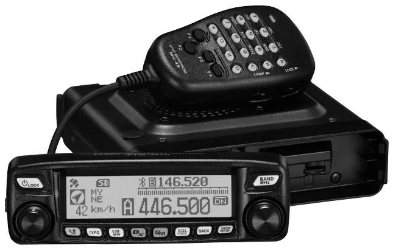</button><figcaption>Figure from page 1</figcaption><dialog id="fig-2"><p>Figure from page 1</p><form method="dialog"><button>Close</button></form></dialog></figure><p>~~<strong>Features of this transceiver</strong>~~</p>
<p> 144/430 MHz dual-band transceiver equipped with standard C4FM digital</p>
<p>communication modulation
 Clear audio and data communication are achieved using the digital modulation</p>
<p>functions
 Wide-band receives in the 108 MHz to 999 MHz range (air band, information wireless</p>
<p>band)
 Transmit power 50 watts with cooling fan
 The dot matrix LCD is mounted on the front panel
 500 memory channels in the A-band and 500 channels in the B-band
 Your frequency memory channels and transceiver configuration settings can be backed</p>
<p>up using a micro-SD memory card. The data on the micro-SD memory card can easily
be copied to other transceivers
 A choice of scanning functions (including VFO scan, memory scan)
 Built-in GPS receiver unit displays your station location and movement information.</p>
<p>Connection to external GPS devices is enabled.
 Incorporated APRS [®] function enables data communication of location information and</p>
<p>messages
*Refer to the separate “APRS Instruction Manual”
 GM (Group Monitor) function in which frequently communicating members can be</p>
<p>registered as a group, thereby allowing location information and messages to be
exchanged
*Refer to the separate “GM Instruction Manual”
 Supports Yaesu WIRES-X Internet linking, enabling communication with remote</p>
<p>partners via the Internet
*Refer to the separate “WIRES-X Instruction Manual”
 Bluetooth adaptor unit BU-2 (sold separately) permits hands-free operation
 Voice guide unit FVS-2 (sold separately) provides voice announcements and recording</p>
<p>of received audio</p>
<ul>
<li>The WIRES-X, APRS, and GM Instruction Manuals are not included with this product.
Please download them directly from the Yaesu website.</li>
</ul><p>~~<strong>Important precautions for mobile transceiver operation</strong>~~</p>
<p> The use of protective tape or covering is recommended to protect the wiring and the</p>
<p>power cord inside the vehicle. If precautions are not taken, the power cord may rub
against sheet metal causing the wires beneath the cable sheathing to become exposed
resulting in fire or equipment failure.
 Install the antenna and co-axial cable, which radiate radio waves, away from the</p>
<p>control unit and wiring harness.
 When installing the unit inside a vehicle, position the transceiver, antenna, and co-axial</p>
<p>cable at least 20 cm away from the following equipment:</p>
<p><strong>● Engine related:</strong> <strong>Fuel injection equipment and engine control unit</strong>
<strong>(gasoline-powered vehicles) or glow control unit</strong>
<strong>(diesel-powered vehicles)</strong></p>
<p><strong>● Transmission-related: Electronic control transmission and 4WD control unit</strong></p>
<p><strong>● Others:</strong> <strong>ECS/EPS/ABS/ETACS/Fully automatic air-conditioner/</strong>
<strong>Auto-heater control unit/G sensor</strong>
 When installing the transceiver or a separately sold product, place all cables so they</p>
<p>do not entangle or impede the driver or passengers.
 When installing the transceiver or a separately sold product, never install in a location</p>
<p>where it may pose a danger to the passengers, where it may interfere with driving, or
obstruct the driver field of view.
Failing to take precautions accordingly may result in a vehicle accident.
 When installing the transceiver or a separately sold product in a vehicle with air bags,</p>
<p>avoid installing it in a way that it may interfere with proper operation of the air bags.
 After installing the transceiver in the vehicle, check that, for example, the brake lamp,</p>
<p>head lamp, turning indicator lights, and wipers are functioning properly while the
transceiver power is switched on.
 When using the transceiver, if it appears to have abnormal effects on the control</p>
<p>equipment of the vehicle, stop the engine, turn off the power supply, and disconnect
the power cord.
 Keep full attention on driving and refrain from operating the transceiver controls or</p>
<p>looking at the transceiver while driving.
Always stop the vehicle at a safe location before operating the transceiver controls or
looking at the display.
 Do not drive the car in such a way that external sounds required for safe driving cannot</p>
<p>be heard. Most areas and states prohibit the use of earphones and headphones while
driving.
 When using the transceiver in an electric or hybrid vehicle, noise from the inverter built</p>
<p>into the electric or hybrid vehicle may cause interference to reception.</p><p>~~<strong>About registered trademarks and copyrights</strong>~~</p>
<p>APRS is a registered trademark of Mr. Bob Bruninga WB4APR.
SmartBeaconing is supplied by HamHUD Nichetronix.
Microsoft, Windows and Windows Vista are registered trademarks of Microsoft
Corporation in the United States and other countries.
Bluetooth [®] is a registered trademark of the Bluetooth SIG.
Other company and product names listed in this manual are trademarks and registered
trademarks of their respective companies.</p>
<p>Unauthorized reproduction or copying of a part or all of the copyrights owned by Yaesu
Musen Co., Ltd. in any form whatsoever is strictly prohibited.</p><p>~~<strong>How to read this manual</strong>~~</p>
<p>In this manual, front panel operations are described as follows.</p>
<p>briefly.</p>
<p>over one second.</p>
<p>The following symbols are also used in this manual:</p>
<p>~~<strong>Caution</strong>~~</p>
<p>...Explains caution to observe during operation.</p>
<p>~~<strong>Tip</strong>~~</p>
<p>...Explains operating suggestions or useful tips.</p>
<p>Also note: the actual product may differ from the drawings shown in this manual.</p><ul>
<li>
<p>Introduction . — 2</p>
</li>
<li>
<p>Features of this transceiver — 2</p>
</li>
</ul>
<p>Important precautions for mobile transceiver</p>
<ul>
<li>operation — 3</li>
<li>About registered trademarks and copyrights — 4</li>
<li>
<p>How to read this manual — 5</p>
</li>
<li>
<p>Switching the operation mode — 38</p>
</li>
<li>Selecting communication mode . — 39</li>
<li>Switching the modulation mode . — 40</li>
<li>
<p>Communicating — 41</p>
</li>
<li>
<p>Before Use — 9</p>
</li>
<li>Safety Precautions (make sure to read these) — 9</li>
<li>Checking the supplied items — 13</li>
<li>
<p>Name and function of each component . — 14</p>
</li>
<li>
<p>Transmitting — 41</p>
</li>
<li>
<p>Adjusting the transmit power . — 42</p>
</li>
<li>Adjusting the microphone sensitivity — 42</li>
<li>Communicating in FM mode — 43</li>
<li>
<p>Communicating using the repeater . — 43</p>
</li>
<li>
<p>Front panel . — 14</p>
</li>
<li>
<p>Front . — 14</p>
</li>
<li>Rear — 16</li>
<li>
<p>Main body — 16</p>
</li>
<li>
<p>Front . — 16</p>
</li>
<li>Rear — 17</li>
<li>Microphone (MH-48A6JA) — 18</li>
<li>Screen display — 19</li>
<li>
<p>Input characters — 20</p>
</li>
<li>
<p>Tone Calling (1750 Hz) . — 43</p>
</li>
<li>Changing the 100.0 Hz CTCSS tone squelch — 44</li>
<li>
<p>Other settings — 45</p>
</li>
<li>
<p>Changing the beep volume . — 45</p>
</li>
<li>Locking the DIAL and keys — 46</li>
<li>Adjusting the date and time — 46</li>
<li>Adjusting the display brightness — 48</li>
<li>
<p>Restoring defaults (All Reset) — 49</p>
</li>
<li>
<p>Using the Memory — 51</p>
</li>
<li>
<p>Switching the character type — 20</p>
</li>
<li>Deleting the input characters — 20</li>
<li>Moving the cursor to the left . — 20</li>
<li>Moving the cursor to the right . — 20</li>
<li>Deleting the most recently input character . — 20</li>
<li>
<p>Completing input — 20</p>
</li>
<li>
<p>Registering to the memory channel — 51</p>
</li>
<li>Recalling memories — 52</li>
<li>Recalling the home channel — 53</li>
</ul>
<p>Changing the frequency of the home</p>
<ul>
<li>channel . — 54</li>
<li>Clearing memories . — 55</li>
<li>
<p>Naming a memory channel — 56</p>
</li>
<li>
<p>Displaying the memory tag . — 58</p>
</li>
<li>Split memory — 59</li>
</ul>
<p>Receiving Weather Broadcast Channels</p>
<ul>
<li>
<p>(USA version only) — 60</p>
</li>
<li>
<p>Installation and Connection — 21</p>
</li>
<li>
<p>Installing the transceiver . — 21</p>
</li>
<li>
<p>Precautions on installation . — 21</p>
</li>
</ul>
<p>Installation location when used in a mobile unit <strong>.</strong> .. 22</p>
<ul>
<li>About the antenna — 23</li>
</ul>
<p>Assigning the “WX” function to a</p>
<ul>
<li>programmable key on the microphone . — 60</li>
<li>Recalling the weather channels — 60</li>
<li>
<p>Listening the weather alert — 61</p>
</li>
<li>
<p>Installing the antenna — 23</p>
</li>
<li>Installing the main body — 25</li>
<li>Installing the front panel . — 26</li>
<li>
<p>Connecting the transceiver . — 27</p>
</li>
<li>
<p>Connecting the front panel to the main body — 27</p>
</li>
<li>Connecting the microphone . — 27</li>
<li>Connecting the antenna . — 27</li>
<li>
<p>Connecting the power supply — 28</p>
</li>
<li>
<p>Connecting the car battery — 28</p>
</li>
</ul>
<p>Connecting the external power supply</p>
<ul>
<li>equipment — 30</li>
<li>
<p>Setting Up the micro-SD memory card . — 31</p>
</li>
<li>
<p>Scanning — 62</p>
</li>
<li>
<p>Searching for signals — 62</p>
</li>
<li>
<p>micro-SD memory cards that can be used — 31</p>
</li>
</ul>
<p>Things to note when using micro-SD</p>
<ul>
<li>memory cards — 31</li>
<li>Inserting a micro-SD memory card — 32</li>
<li>Removing the micro-SD memory card . — 32</li>
<li>Initializing micro-SD memory cards — 33</li>
</ul>
<p>Registering to the programmable memory</p>
<ul>
<li>channels . — 68</li>
</ul>
<p>Scanning the programmable memory</p>
<ul>
<li>channels . — 69</li>
<li>
<p>Monitoring the home channel — 70</p>
</li>
<li>
<p>VFO scan — 62</p>
</li>
</ul>
<p>Selecting the receiver operation performed</p>
<ul>
<li>after scanning stops — 63</li>
<li>
<p>Memory scan — 64</p>
</li>
<li>
<p>Selecting the scanning method — 65</p>
</li>
<li>Specifying memory channels — 66</li>
</ul>
<p>Scanning only the specified memory</p>
<ul>
<li>channels . — 67</li>
<li>Setting memories to skip . — 67</li>
<li>
<p>Scanning the programmable memories (PMS) . — 68</p>
</li>
<li>
<p>Basic Operations — 34</p>
</li>
<li>
<p>Receiving . — 34</p>
</li>
<li>
<p>Turning the power on — 34</p>
</li>
<li>Switching the power off . — 34</li>
<li>Inputting the call sign — 34</li>
<li>Toggling the operating band — 35</li>
<li>Adjusting the volume level — 35</li>
<li>Adjusting the squelch level — 36</li>
</ul>
<p>Tuning in to the frequency 37</p>
<ul>
<li>Using the GPS Function — 72</li>
<li>What is GPS? — 72</li>
</ul>
<p>Activating the GPS function 72</p>
<ul>
<li>Using the dual receive function — 70</li>
<li>Setting the dual receive restart setting . — 71</li>
</ul>
<p>Setting the channel signal reception time</p>
<ul>
<li>when using the dual reception function . — 71</li>
</ul><ul>
<li>
<p>Displaying the location information — 74</p>
</li>
<li>
<p>Displaying your current location information — 74</p>
</li>
</ul>
<p>Displaying location information of the</p>
<ul>
<li>received station in digital mode . — 74</li>
</ul>
<p>Saving location information</p>
<ul>
<li>(GPS Log Function) — 74</li>
</ul>
<p>Checking the route using a personal</p>
<ul>
<li>computer — 75</li>
<li>
<p>Other settings — 76</p>
</li>
<li>
<p>Copying data to a micro-SD memory card — 104</p>
</li>
</ul>
<p>Copying data from the micro-SD memory</p>
<ul>
<li>card — 105</li>
<li>Using the clone function — 106</li>
<li>
<p>Connecting an external device — 108</p>
</li>
<li>
<p>Connecting to a computer . — 108</p>
</li>
<li>
<p>Transmitting GPS location information . — 109</p>
</li>
<li>Updating the transceiver firmware — 110</li>
</ul>
<p>Using the transceiver for packet</p>
<ul>
<li>communications — 111</li>
<li>
<p>Other connectable devices — 115</p>
</li>
<li>
<p>Using the APRS Function — 77</p>
</li>
</ul>
<p>What is the APRS (Automatic Packet Reporting</p>
<ul>
<li>
<p>System) function? . — 77</p>
</li>
<li>
<p>Using the GM Function — 78</p>
</li>
<li>What is the GM (Group Monitor) Function? — 78</li>
<li>
<p>How to use the GM function — 78</p>
</li>
<li>
<p>Using the WIRES-X Function — 80</p>
</li>
<li>
<p>What is the WIRES-X Function? — 80</p>
</li>
<li>
<p>Convenient Functions — 81</p>
</li>
<li>
<p>Communicating with specific stations . — 81</p>
</li>
<li>
<p>Using the tone squelch function . — 81</p>
</li>
<li>
<p>Selecting the tone frequency . — 81</p>
</li>
<li>Using the tone squelch function — 82</li>
<li>Transmitting tone signals — 83</li>
<li>
<p>Using the digital code squelch function — 84</p>
</li>
<li>
<p>Selecting the DCS code — 84</p>
</li>
<li>Using the DCS function . — 85</li>
<li>
<p>Using the new pager function — 86</p>
</li>
<li>
<p>Setting the transceiver pager code — 86</p>
</li>
<li>Activating the new pager function — 87</li>
<li>Calling a specific station . — 88</li>
</ul>
<p>Notification of incoming calls from partner</p>
<ul>
<li>stations using the bell function . — 89</li>
<li>Other squelch functions — 90</li>
<li>
<p>Using the DTMF function . — 91</p>
</li>
<li>
<p>Registering the DTMF code — 91</p>
</li>
<li>Transmitting the registered DTMF code . — 92</li>
<li>Transmitting the DTMF code manually — 92</li>
<li>
<p>Using the timer function . — 94</p>
</li>
<li>
<p>Using the APO function . — 94</p>
</li>
<li>Using the TOT function — 95</li>
<li>
<p>Exchanging messages or images — 96</p>
</li>
<li>
<p>Viewing the message or image list . — 96</p>
</li>
<li>Deleting messages or images — 97</li>
</ul>
<p>Deleting data from the content display</p>
<ul>
<li>screen — 97</li>
<li>Deleting data from the list — 98</li>
<li>Downloading messages or images . — 98</li>
<li>
<p>Sending massages or images — 99</p>
</li>
<li>
<p>Creating and sending a new message . — 99</p>
</li>
<li>Using routine message — 100</li>
</ul>
<p>Replying to the sender of the downloaded</p>
<ul>
<li>message or image data . — 102</li>
</ul>
<p>Forwarding the downloaded message or</p>
<ul>
<li>image data — 103</li>
</ul>
<p><strong>Customizing Menu Settings and User</strong></p>
<ul>
<li>Preferences — 116</li>
<li>Setup menu basic operations — 116</li>
<li>Setup-menu listing . — 117</li>
<li>Setup menu operations: 1 DISPLAY — 123</li>
</ul>
<p>Setting up the screen display</p>
<ul>
<li>(1 SUB DISPLAY SELECT) — 123</li>
</ul>
<p>Setting the display brightness</p>
<ul>
<li>(2 LCD BRIGHTNESS) — 123</li>
</ul>
<p>Setting the display contrast</p>
<ul>
<li>(3 LCD CONTRAST) — 123</li>
</ul>
<p>Switching the GPS information</p>
<ul>
<li>(4 GPS INFORMATION) — 124</li>
<li>Setup menu operations: 2 TX/RX . — 125</li>
</ul>
<p>Setting the modulation mode</p>
<ul>
<li>(1 ANALOG MODE SELECT) — 125</li>
</ul>
<p>Setting the microphone sensitivity</p>
<ul>
<li>(2 MIC GAIN) — 125</li>
</ul>
<p>Setting the transmission mode when using the</p>
<ul>
<li>AMS function (3 AMS TX MODE) — 125</li>
</ul>
<p>Setting the squelch type in digital mode</p>
<ul>
<li>(4 DIGITAL SQL TYPE) — 126</li>
</ul>
<p>Setting the digital mode squelch code</p>
<ul>
<li>(5 DIGITAL SQL CODE) — 127</li>
</ul>
<p>Setting the time to display the partner station
information in a pop-up window</p>
<ul>
<li>(6 DIGITAL POPUP TIME) . — 128</li>
</ul>
<p>Setting your location information display</p>
<ul>
<li>(7 LOCATION SERVICE) . — 128</li>
</ul>
<p>Sounding a beep when a partner station ends a</p>
<ul>
<li>transmission (8 STANDBY BEEP) — 129</li>
</ul>
<p>Using the half deviation function</p>
<ul>
<li>(9 HALF DEVIATION) — 130</li>
<li>Setup menu operations: 3 MEMORY — 130</li>
</ul>
<p>Setting the memory tag display</p>
<ul>
<li>(1 ALPHA TAG SIZE) — 130</li>
</ul>
<p>Setting the memory scan method</p>
<ul>
<li>(2 MEMORY SCAN TYPE) — 130</li>
<li>Setup menu operations: 4 SIGNALING . — 131</li>
</ul>
<p>Setting the tone frequency</p>
<ul>
<li>(1 TONE SQL FREQ) . — 131</li>
<li>Setting the DCS code (2 DCS CODE) — 131</li>
</ul>
<p>Setting the DTMF code transmission method</p>
<ul>
<li>(3 AUTO DIALER) . — 131</li>
<li>Setting the squelch type (4 SQL TYPE) . — 131</li>
</ul>
<p>Registering the DTMF code</p>
<ul>
<li>
<p>(5 DTMF MEMORY) — 131</p>
</li>
<li>
<p>Functions to Use as Necessary — 104</p>
</li>
</ul><p>Notification of calls from partner stations</p>
<ul>
<li>(8 BELL RINGER) . — 131</li>
</ul>
<p>Setting the squelch type separately for
transmission and reception</p>
<ul>
<li>(9 SQL EXPANSION) . — 132</li>
</ul>
<p>Setting the weather alert operation</p>
<ul>
<li>(USA Version Only) — 132</li>
<li>Setup menu operations: 5 SCAN — 133</li>
</ul>
<p>Setting the signal reception method</p>
<ul>
<li>(1 DUAL WATCH STOP) — 133</li>
</ul>
<p>Setting the scanning direction</p>
<ul>
<li>(2 SCAN DIRECTION) . — 133</li>
</ul>
<p>Selecting the receiver operation performed after</p>
<ul>
<li>scanning stops (3 SCAN RESUME) — 134</li>
</ul>
<p>Setting the channel signal reception time when
using the dual reception function</p>
<ul>
<li>(4 DUAL WATCH MODE) — 134</li>
<li>Setup menu operations: 6 GM — 134</li>
<li>Setup menu operations: 7 WIRES-X — 134</li>
<li>Setup menu operations: 8 CONFIG — 135</li>
</ul>
<p>Setting the date and time</p>
<ul>
<li>(1 DATE &amp; TIME ADJUST) — 135</li>
</ul>
<p>Setting the time display format</p>
<ul>
<li>(2 TIME FORMAT) — 135</li>
<li>Setting the time zone (3 TIME ZONE) — 136</li>
</ul>
<p>Using the auto repeater shift function</p>
<ul>
<li>(4 AUTO REPEATER SHIFT) — 136</li>
</ul>
<p>Setting the repeater shift direction</p>
<ul>
<li>(5 REPEATER SHIFT) — 137</li>
</ul>
<p>Setting the repeater shift width</p>
<ul>
<li>(6 REPEATER SHIFT FREQ) — 137</li>
<li>Setting the frequency step (7 FM AM STEP) . — 138</li>
<li>Setting the beep volume (8 BEEP) — 138</li>
</ul>
<p>Setting the microcomputer clock shift</p>
<ul>
<li>(9 CLOCK TYPE) . — 138</li>
</ul>
<p>Setting the program keys on the microphone</p>
<ul>
<li>(10 MIC PROGRAM KEY) — 138</li>
</ul>
<p>Expanding the reception range</p>
<ul>
<li>(11 RX COVERAGE) — 140</li>
</ul>
<p>Setting the unit displayed on the screen</p>
<ul>
<li>(12 UNIT) — 140</li>
</ul>
<p>Turning off the transceiver automatically</p>
<ul>
<li>(13 APO) — 141</li>
</ul>
<p>Limiting the continuous transmission time</p>
<ul>
<li>(14 TOT) — 141</li>
</ul>
<p>Setting the PIN code for the Bluetooth headset</p>
<ul>
<li>(15 Bluetooth PAIRING) . — 141</li>
</ul>
<p>Setting the geodetic reference system</p>
<ul>
<li>(16 GPS DATUM) — 141</li>
</ul>
<p>Setting the interval for saving the GPS location</p>
<ul>
<li>information (17 GPS LOG) — 142</li>
<li>Setup menu operations: 9 DATA — 143</li>
</ul>
<p>Setting the COM port</p>
<ul>
<li>(1 COM PORT SETTING) . — 143</li>
</ul>
<p>Setting the APRS and data communication speed</p>
<ul>
<li>(2 DATA SPEED) — 145</li>
</ul>
<p>Squelch detection and squelch jack output settings</p>
<ul>
<li>(3 DATA SQUELCH) — 146</li>
</ul>
<p>Setup menu operations: 10 APRS 146</p>
<p>Copying the transceiver settings to a micro-SD</p>
<ul>
<li>memory card (1 BACKUP) . — 146</li>
</ul>
<p>Initializing a micro-SD memory card</p>
<ul>
<li>(2 FORMAT) . — 146</li>
<li>Setup menu operations: 12 OPTION — 147</li>
</ul>
<p>Setting the Bluetooth headset operations</p>
<ul>
<li>(1 Bluetooth) — 147</li>
</ul>
<p>Setting the voice memory operations</p>
<ul>
<li>(2 VOICE MEMORY) — 147</li>
<li>Setup menu operations: 13 RST/CLONE . — 147</li>
</ul>
<p>Resetting the transceiver settings</p>
<ul>
<li>(1 FACTORY RESET) . — 147</li>
<li>Presetting (2 PRESET) — 147</li>
</ul>
<p>Recalling the preset setting</p>
<ul>
<li>(3 RECALL PRESET) — 148</li>
</ul>
<p>Deleting the registered data from the memory</p>
<ul>
<li>channels (4 MEMORY CH RESET) . — 148</li>
</ul>
<p>Sorting the memory channels</p>
<ul>
<li>(5 MEMORY CH SORT) — 149</li>
<li>Resetting the APRS setting (6 APRS RESET) — 149</li>
<li>Copying the saved data (7 CLONE) — 149</li>
<li>Setup menu operations: 14 CALLSIGN — 150</li>
</ul>
<p>Changing the call sign</p>
<ul>
<li>(1 MY CALLSIGN (DIGITAL)) — 150</li>
</ul>
<p><strong>Using the Optional Accessories</strong></p>
<ul>
<li>(Bluetooth Devices/Voice Unit) — 151</li>
<li>
<p>Using the Bluetooth headset — 151</p>
</li>
<li>
<p>Mounting the Bluetooth unit “BU-2” — 151</p>
</li>
<li>Setting the Bluetooth headset operations . — 153</li>
<li>Identifying the Bluetooth headset — 155</li>
<li>Using the Bluetooth headset . — 157</li>
<li>
<p>Recording and listening to received audio — 158</p>
</li>
<li>
<p>Mounting the voice guide unit “FVS-2” — 158</p>
</li>
<li>
<p>Using the voice memory — 160</p>
</li>
<li>
<p>Setting the voice memory operation . — 160</p>
</li>
<li>Recording the received audio — 161</li>
<li>Playing the recorded audio — 162</li>
<li>Erasing the recorded audio — 162</li>
<li>Activating the frequency voice announcement — 163</li>
</ul>
<p>Setting the announcement function</p>
<ul>
<li>operation — 163</li>
<li>
<p>Activating to the frequency announcement — 164</p>
</li>
<li>
<p>Appendix — 165</p>
</li>
<li>Optional components — 165</li>
<li>
<p>Maintenance — 166</p>
</li>
<li>
<p>Care and maintenance — 166</p>
</li>
<li>Replacing the fuse — 166</li>
<li>
<p>Troubleshooting . — 167</p>
</li>
<li>
<p>There is no power — 167</p>
</li>
<li>There is no sound — 167</li>
<li>There is no transmission — 167</li>
<li>The keys or knobs do not operate . — 167</li>
<li>About internal spurious signals . — 168</li>
<li>
<p>Specifications — 169</p>
</li>
<li>
<p>Index — 171</p>
</li>
</ul><p><strong>Make sure to read this manual in order to use this radio safely and correctly.</strong></p>
<p>Before using this product, note that the company shall not be liable for any damages
suffered by the customer or third parties, or for any failures and faults that occur during
the use or misuse of this product, unless otherwise provided for under the law.</p>
<p><strong>Type and meaning of the marks</strong></p>
<h2 id="danger-warning-caution"><strong>DANGER</strong> <strong>WARNING</strong> <strong>CAUTION</strong></h2>
<p>This symbol indicates the possibility of death or serious
injury being inflicted on the user and the surrounding
people when these instructions are ignored and the product
is mishandled.</p>
<p>This symbol indicates the possibility of death or serious
injury being inflicted on the user and the surrounding
people when these instructions are ignored and the product
is mishandled.</p>
<p>This symbol indicates the possibility of physical
impediments occurring or impediments being inflicted
on the user and the surrounding people when these
instructions are ignored and the product is mishandled.</p>
<p><strong>Type and meaning of symbols</strong></p>
<p>Prohibited actions that must not be attempted, in order to use this radio
safely.
For example, signifies that disassembly is prohibited.</p>
<p>Precautions that must be adhered to in order to use this radio safely. For
example, signifies that the power supply is to be disconnected.</p>
<h2 id="danger">~~<strong>DANGER</strong>~~</h2>
<p><strong>Do not use the device in “regions or</strong>
<strong>aircrafts and vehicles where its use</strong>
<strong>is prohibited” such as in hospitals</strong>
<strong>and airplanes.</strong>
This may exert an impact on electronic
and medical devices.</p>
<p><strong>Do not use this product while driving</strong>
<strong>or riding a motorbike. This may</strong>
<strong>result in accidents.</strong>
Make sure to stop the car in a safe
location first before use if the device is
going to be used by the driver.</p>
<p><strong>Never touch the antenna during</strong>
<strong>transmission.</strong>
This may result in injury, electric shock
and equipment failure.</p>
<p><strong>When an alarm goes off with the</strong>
<strong>external antenna connected, cut</strong>
<strong>off the power supply to this radio</strong>
<strong>immediately and disconnect the</strong>
<strong>external antenna from this radio.</strong>
If not, this may result in fire, electric
shock and equipment failure.</p><p><strong>Do not operate the device when</strong>
<strong>flammable gas is generated.</strong>
Doing so may result in fire and
explosion.</p>
<p><strong>Do not transmit in crowded places</strong>
<strong>in consideration of people who are</strong>
<strong>fitted with medical devices such as</strong>
<strong>heart pacemakers.</strong>
Electromagnetic waves from the device
may affect the medical device, resulting
in accidents caused by malfunctions.</p>
<p><strong>Do not touch any liquid leaking from</strong>
<strong>the liquid display with your bare</strong>
<strong>hands.</strong>
There is a risk of chemical burns
occurring when the liquid comes
into contact with the skin or gets into
the eyes. In this case, seek medical
treatment immediately.</p>
<h2 id="warning">~~<strong>WARNING</strong>~~</h2>
<p><strong>Do not use voltages other than the</strong>
<strong>specified power supply voltage.</strong>
Doing so may result in fire and electric
shock.</p>
<p><strong>Do not transmit continuously for</strong>
<strong>long periods of time.</strong>
This may cause the temperature of the
main body to rise and result in burns
and failures due to overheating.</p>
<p><strong>Do not dismantle or modify the</strong>
<strong>device.</strong>
This may result in injury, electric shock
and equipment failure.</p>
<p><strong>Do not handle the power plug and</strong>
<strong>connector etc. with wet hands. Also</strong>
<strong>do not plug and unplug the power</strong>
<strong>plug with wet hands.</strong>
This may result in injury, liquid leak,
electric shock and equipment failure.</p>
<p><strong>When smoke or strange odors are</strong>
<strong>emitted from the radio, turn off the</strong>
<strong>power and disconnect the power</strong>
<strong>cord from the socket.</strong>
This may result in fire, liquid leak,
overheating, damage, ignition and
equipment failure. Please contact our
company amateur customer support or
the retail store where you purchased
the device.</p>
<p><strong>Keep the power plug pins and the</strong>
<strong>surrounding areas clean at all times.</strong>
This may result in fire liquid leak</p>
<p><strong>Do not place the device in areas</strong>
<strong>that may get wet easily (e.g. near a</strong>
<strong>humidifier).</strong>
This may result in fire, electric shock
and equipment failure.</p>
<p><strong>When connecting a DC power cord,</strong>
<strong>pay due care not to mix up the</strong>
<strong>positive and negative polarities.</strong>
This may result in fire, electric shock
and equipment failure.</p>
<p><strong>Do not use DC power cords other</strong>
<strong>than the one enclosed or specified.</strong>
This may result in fire, electric shock
and equipment failure.</p>
<p><strong>Do not bend, twist, pull, heat</strong>
<strong>and modify the power cord</strong>
<strong>and connection cables in an</strong>
<strong>unreasonable manner.</strong>
This may cut or damage the cables
and result in fire, electric shock and
equipment failure.</p>
<p><strong>Do not pull the cable when plugging</strong>
<strong>and unplugging the power cord and</strong>
<strong>connection cables.</strong>
Please hold the plug or connector when
unplugging. If not, this may result in fire,
electric shock and equipment failure.</p><p><strong>Do not use the device when the</strong>
<strong>power cord and connection cables</strong>
<strong>are damaged, and when the DC</strong>
<strong>power connector cannot be plugged</strong>
<strong>in tightly.</strong>
Please contact our company amateur
customer support or the retail store
where you purchased the device as this
may result in fire, electric shock and
equipment failure.</p>
<p><strong>Never cut off the fuse holder of the</strong>
<strong>DC power cord.</strong>
This may cause short-circuiting and
result in ignition and fire.</p>
<p><strong>Do not use fuses other than those</strong>
<strong>specified.</strong>
Doing so may result in fire and
equipment failure.</p>
<p><strong>Do not allow metallic objects such</strong>
<strong>as wires and water to get inside the</strong>
<strong>product.</strong>
This may result in fire, electric shock
and equipment failure.</p>
<p><strong>Refrain from using headphones and</strong>
<strong>earphones at a loud volume.</strong>
Continuous exposure to loud volumes
may result in hearing impairment.</p>
<p><strong>Disconnect the power cord</strong>
<strong>and connection cables before</strong>
<strong>incorporating items sold separately</strong>
<strong>and replacing the fuse.</strong>
This may result in fire, electric shock
and equipment failure.</p>
<p><strong>Follow the instructions given when</strong>
<strong>installing items sold separately and</strong>
<strong>replacing the fuse.</strong>
This may result in fire, electric shock
and equipment failure.</p>
<p><strong>Do not use the device when the</strong>
<strong>alarm goes off.</strong>
For safety reasons, please pull the
power plug of the DC power equipment
connected to the product out of the AC
socket.
Never touch the antenna as well. This
may result in fire, electric shock and
equipment failure due to thunder.</p>
<h2 id="caution">~~<strong>CAUTION</strong>~~</h2>
<p><strong>Do not place this device near a</strong>
<strong>heating instrument or in a location</strong>
<strong>exposed to direct sunlight.</strong>
This may result in deformation and
discoloration.</p>
<p><strong>Do not place this device in a location</strong>
<strong>where there is a lot of dust and</strong>
<strong>humidity.</strong>
Doing so may result in fire and
equipment failure.</p>
<p><strong>Stay as far away from the antenna as</strong>
<strong>possible during transmission.</strong>
Long-term exposure to electromagnetic
radiation may have a negative effect on
the human body.</p>
<p><strong>Do not wipe the case using thinner</strong>
<strong>and benzene etc.</strong>
Please use a soft and dry piece of cloth</p>
<p><strong>For safety reasons, switch off the</strong>
<strong>power and pull out the DC power</strong>
<strong>cord connected to the DC power</strong>
<strong>connector when the device is not</strong>
<strong>going to be used for a long period</strong>
<strong>of time.</strong>
If not, this may result in fire and
overheating.</p>
<p><strong>Do not throw or subject the device to</strong>
<strong>strong impact forces.</strong>
This may result in equipment failure.</p>
<p><strong>Do not the put this device near</strong>
<strong>magnetic cards and video tapes.</strong>
The data in the cash card and video
tape etc. may be erased.</p>
<p><strong>Do not turn on the volume too</strong>
<strong>high when using a headphone or</strong>
<strong>earphone.</strong></p><p><strong>Keep out of the reach of small</strong>
<strong>children.</strong>
If not, this may result in injuries to
children.</p>
<p><strong>Do not put heavy objects on top</strong>
<strong>of the power cord and connection</strong>
<strong>cables.</strong>
This may damage the power cord and
connection cables, resulting in fire and
electric shock.</p>
<p><strong>Do not transmit near the television</strong>
<strong>and radio.</strong>
This may result in electromagnetic
interference.</p>
<p><strong>Do not use optional products</strong>
<strong>other than those specified by our</strong>
<strong>company.</strong>
If not, this may result in equipment
failure.</p>
<p><strong>When using the device in a hybrid</strong>
<strong>car or fuel-saving car, make sure</strong>
<strong>to check with the car manufacturer</strong>
<strong>before using.</strong>
The device may not be able to receive
transmissions normally due to the
influence of noises from the electrical
devices (inverters etc.) fitted in the car.</p>
<p><strong>Do not place the device on an</strong>
<strong>unsteady or sloping surface, or in</strong>
<strong>a location where there is a lot of</strong>
<strong>vibration.</strong>
The device may fall over or drop,
resulting in fire, injury and equipment
failure.</p>
<p><strong>Do not stand on top of the product,</strong>
<strong>and do not place heavy objects on</strong>
<strong>top or insert objects inside it.</strong>
If not, this may result in equipment
failure.</p>
<p><strong>Do not use a microphone other than</strong>
<strong>those specified when connecting a</strong>
<strong>microphone to the device.</strong>
If not, this may result in equipment
failure.</p>
<p><strong>Do not touch the heat radiating</strong>
<strong>parts.</strong>
When used for a long period of time,
the temperature of the heat radiating
parts will get higher, resulting in burns
when touched.</p>
<p><strong>Do not open the case of the product</strong>
<strong>except when replacing the fuse</strong>
<strong>and when installing items sold</strong>
<strong>separately.</strong>
This may result in injury, electric shock
and equipment failure.</p><p>DTMF microphone</p>
<p>MH-48A6JA</p>
<p>Controller cable</p>
<p>(3 m)</p>
<p>Spare fuse (15 A)
(USA, EXP version)</p>
<p>Stereo to monaural plug</p>
<p>Bracket for main body</p>
<p>MMB-36
Attachment screw set</p>
<p>DC power cable
(with fuse attached)
(USA, EXP version)</p>
<p>Spare fuse (15 A)
(European version)</p>
<p>Operating Manual (this manual)
Warranty Card</p>
<p>Bracket for the</p>
<p>controller</p>
<p>DC power cable
(with fuse attached)</p>
<p>(European version)</p>
<p>PC connection cable</p>
<p>SCU-20</p>
<p>~~<strong>Tip</strong>~~</p>
<p>Various optional parts are also available.</p><figure><button aria-label="Enlarge Figure from page 13. Double-sided adhesive sheet" class="zoom" data-dialog="fig-3" type="button">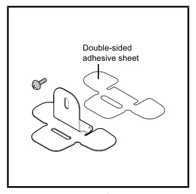</button><figcaption>Figure from page 13. Double-sided adhesive sheet</figcaption><dialog id="fig-3"><p>Figure from page 13. Double-sided adhesive sheet</p><form method="dialog"><button>Close</button></form></dialog></figure><figure><button aria-label="Enlarge Figure from page 13" class="zoom" data-dialog="fig-4" type="button">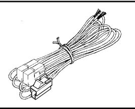</button><figcaption>Figure from page 13</figcaption><dialog id="fig-4"><p>Figure from page 13</p><form method="dialog"><button>Close</button></form></dialog></figure><p>~~<strong>Front panel</strong>~~</p>
<p><strong>Front</strong></p>
<p>③</p>
<p>④</p>
<p>②</p>
<p>⑥</p>
<p>Pressing the key for over 2 seconds switches the power between ON and OFF.
Briefly pressing the key while the transceiver is turned ON engages or releases the
key lock.
➁ VOL knob</p>
<p>Turning the knob clockwise increases the volume, whereas turning it
counterclockwise decreases the volume.
➂ Mode/Status indicator</p>
<p>Indicates the transmission/reception status with a two-color combination on the
upper and lower portions of the mode/status indicator.</p>
<table>
<thead>
<tr>
<th>Communication status</th>
<th>Upper portio</th>
<th>n Lower porti</th>
</tr>
</thead>
<tbody>
<tr>
<td></td>
<td></td>
<td></td>
</tr>
<tr>
<td>Receiving analog audio</td>
<td></td>
<td></td>
</tr>
<tr>
<td>Green</td>
<td></td>
<td></td>
</tr>
</tbody>
</table>
<p>Green|
|
Transmitting analog audio|Red|Red|
|
Receiving digital audio|Green|Blue|
|
Transmitting digital audio|Red|Blue|
|
Receiving digital data|Green|White|
|
Transmitting digital data|Red|White|
|
Receiving signals with unmatched
tone frequency or DCS code|Green|Blink in blu|</p>
<p>➃ Dot matrix LCD display</p>
<p>Switches each band between the operating band and sub-band.
Pressing and holding for over one second allows you to set the frequency in 1 MHz
units.
➅ DIAL knob</p>
<ul>
<li>Allows you to set the operating band frequency.</li>
</ul><ul>
<li>Allows you to select the desired item for setup, memory registration, group
monitoring operation, etc.</li>
</ul>
<p>Briefly pressing each time switches the operating band between Band A and Band B.
Pressing for over one second each time switches the dual watch function between
ON and OFF.</p>
<p>Briefly pressing each time switches the transmission power (HIGH/MID/LOW).
Pressing and holding for over one second each time switches the signaling setting.
See “Communicating with specific stations” on page 81.</p>
<p>Briefly pressing each time switches between VFO mode and memory mode.
Pressing and holding for over one second displays the memory registration screen.</p>
<p>Briefly pressing each time switches the operating band communication mode.</p>
<p>~~<strong>Tip</strong>~~ For details on the communication mode, see “Selecting communication mode” on page 39.
Pressing and holding for over one second activates WIRES-X.</p>
<p>Activates the GM (group monitor) function.
Pressing and holding for over one second displays the logging function screen.</p>
<p>Pressing this button briefly and rotating the DIAL sets the squelch level.
Pressing and holding for over one second activates VOICE mode (when the optional
FVS-2 is mounted).</p>
<p>Briefly pressing enables the selected item or value. Then, the display returns to the
previously viewed screen.</p>
<p>Briefly pressing switches the display information (your location information/received
station location information/GPS INFO screen).</p>
<p>~~<strong>Tip</strong>~~ For details on the display information, see page 19.
Pressing and holding for over one second displays the Setup menu.</p><p><strong>Rear</strong></p>
<p>③</p>
<p><strong>①</strong></p>
<p>➀ CONTROL jack</p>
<p>Connect the control cable into this jack to connect to the main body.
➁ Screw hole to attach the mounting bracket
➂ Firmware update switch</p>
<p>~~<strong>Caution</strong>~~ Keep the rubber cap on when not in use.</p>
<p>~~<strong>Main body</strong>~~</p>
<p><strong>Front</strong></p>
<p>④ ① ② ③</p>
<p>➀ MIC jack</p>
<p>Connect the provided microphone cable.
➁ CONTROL jack</p>
<p>Connect the control cable into this jack to connect to the controller.
➂ micro-SD memory card slot
➃ Firmware update switch</p>
<p>~~<strong>Caution</strong>~~ Keep the rubber cap on when not in use.</p><figure><button aria-label="Enlarge Figure from page 16. ②" class="zoom" data-dialog="fig-5" type="button">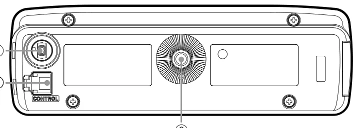</button><figcaption>Figure from page 16. ②</figcaption><dialog id="fig-5"><p>Figure from page 16. ②</p><form method="dialog"><button>Close</button></form></dialog></figure><p><strong>Rear</strong></p>
<p>➀ ANT terminal</p>
<p>① ⑤ ②</p>
<p>③</p>
<p>④</p>
<p>Connect the antenna.
➁ 13.8V DC</p>
<p>Connect the provided DC power supply cable (with fuse attached).
➂ EXT SP jack</p>
<p>Connect the optional external speaker.
➃ DATA jack</p>
<p>Connect a cable for remote operation or a cable for connecting to devices such as
your computer interface unit and the external terminal unit.
➄ Cooling fan</p><figure><button aria-label="Enlarge Figure from page 17" class="zoom" data-dialog="fig-6" type="button">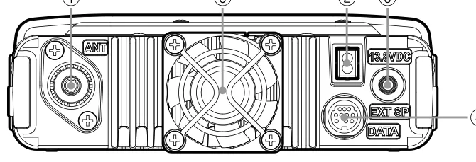</button><figcaption>Figure from page 17</figcaption><dialog id="fig-6"><p>Figure from page 17</p><form method="dialog"><button>Close</button></form></dialog></figure><p>~~<strong>Microphone (MH-48A6JA)</strong>~~</p>
<p><strong>[UP]</strong> Increases the frequency by one step.</p>
<p><strong>[DWN]</strong> Decreases the frequency by one step.</p>
<p><strong>[LOCK]</strong> Locks / unlocks the [UP] and [DWN] keys and</p>
<p>[P1] to [P4] keys.</p>
<p><strong>[LAMP]</strong> Turns the lamp on the body of the microphone</p>
<p>on/off.</p>
<p><strong>[MIC]</strong> Speak into this part during transmission.</p>
<p><strong>[1] to [0]</strong> Enters the numbers.</p>
<p><strong>[</strong> ✽ <strong>]</strong> Switches between VFO and Memory operating
mode of the operating band.</p>
<p><strong>[#]</strong> Activates the GM (Group Monitor) functions.</p>
<p><strong>[A]</strong> Switches the operating band to the A-band.</p>
<p><strong>[B]</strong> Switches the operating band to the B-band.</p>
<p><strong>[C]</strong> Adjusts the squelch level.</p>
<p><strong>[D]</strong> Switches the display.</p>
<p><strong>[P1]</strong> Turns off the squelch function.
(T.CALL: European version)</p>
<p><strong>[P2]</strong> Recalls the receiver home channel.</p>
<p><strong>[P3]</strong> Changes the communication mode.</p>
<p><strong>[P4]</strong> Changes the transmit power.</p>
<p><strong>[PTT]</strong> Switches the transceiver to transmission mode.</p>
<p>~~<strong>Tip</strong>~~</p>
<p>The desired functions can be assigned to buttons [P1] to [P4]. Select the function from <strong>[8 CONFIG]</strong>
→ <strong>[10 MIC PROGRAM KEY]</strong> in the Setup menu (page 138).</p><p>~~<strong>Screen display</strong>~~</p>
<p>③</p>
<p>①
④</p>
<p>➀ Icon display</p>
<p>Displays the Bluetooth, APRS, micro-SD memory card and GPS icons when each
function is in use.
➁ Station location information display</p>
<p>Displays the received station’s location information and your station location</p>
<p>between the received station location, and your station location.
➂ Sub-band frequency display</p>
<p>While in VFO mode, displays the sub-band name (A or B) and sub-band frequency.
While in memory mode, displays the registered frequency or memory tag.
➃ S-meter display</p>
<p>Displays the S-meter bar graph. Displays the squelch level while adjusting the
squelch.
Functions as a power indicator during transmission.
➄ Communication mode display</p>
<p>Displays the current operating mode, such as analog and digital using abbreviations.
Auto mode is indicated with a flashing bar appearing above the abbreviation. In
Auto mode, the communication mode is automatically set according to the receiving
signal.</p>
<p>~~<strong>Tip</strong>~~ The AMS functions can be changed in the Setup menu from <strong>[2 TX/RX]</strong> → <strong>[3 AMS TX MODE]</strong> .
➅ Indicates the operating band name, memory channel, and transmission.</p>
<p>When in VFO mode, the operating band name (A or B) is displayed.</p>
<p>indicates the “MID” level transmit power.
➆ Frequency display</p>
<p>Displays the operating band frequency.</p><ul>
<li><strong>●GPS INFO screen</strong></li>
</ul>
<p>While a received station’s information is displayed,</p>
<p>screen.
May also display the compass and the signal level of
each acquired satellite. □ indicates an un-acquired
satellite and ■ indicates an acquired satellite.</p>
<p>~~<strong>Tip</strong>~~ From <strong>[1 DISPLAY]</strong> → <strong>[4 GPS INFORMATION]</strong>, you can</p>
<p>select “LOCATION” (location display) or “FREQUENCY”
(frequency display).</p>
<p>~~<strong>Input characters</strong>~~</p>
<p>[Location display]</p>
<p>[Frequency display]</p>
<p>You can input letters and characters to enter your call sign and memory channel tags by
following the procedure below.</p>
<p>character type in the following order.
Uppercase letters → symbols → lowercase letters → numbers</p>
<p>Deletes all characters to the right side of the cursor including the character on which the
cursor is currently positioning.</p>
<p><strong>Moving the cursor to the left</strong></p>
<p><strong>Moving the cursor to the right</strong></p>
<p><strong>Deleting the most recently input character</strong></p>
<p><strong>Completing input</strong></p><p>~~<strong>Precautions on installation</strong>~~</p>
<p>Note the following when installing the transceiver.</p>
<p> Do not install the transceiver in a place where it would be exposed to direct sunlight,</p>
<p>high temperatures, excessive humidity, dusty conditions, or extreme vibrations.
 Install the transceiver in a well-ventilated position, so that heat dissipation is not</p>
<p>hindered, because the heat sinks will become hot when the transceiver is run for an
extended period of time.
 Do not place any objects on the transceiver.
 Do not attempt to lift the front panel by holding onto just the knob or control cable.
 This transceiver requires a 13.8 V DC power supply.
When using this transceiver in a mobile unit, ensure that the car battery is a 12 V
type. Never connect this transceiver to a 24 V battery of a large vehicle.
 Never connect the transceiver to a 100 V AC power source.
 Heed caution as hum and noise may be introduced, depending on the installation</p>
<p>conditions of the external power source.
 Install the transceiver as far away as possible from TVs and radios. Failing to do so</p>
<p>may result in noise interference such as broadcast interference (BCI) or television
interference (TVI) from radios and TVs respectively.
Never attempt to install this transceiver near indoor antenna elements.</p><p>~~<strong>Installation location when used in a mobile unit</strong>~~</p>
<ul>
<li><strong>●Front panel</strong>
To efficiently receive the GPS satellites, it is recommended that the transceiver should
be installed on the dashboard or front side of the center console. See “Installing the
front panel” on page 26</li>
</ul>
<p>~~<strong>Tip</strong>~~ The GPS reception antenna is built into the front panel.</p><figure><button aria-label="Enlarge Figure from page 22. Controller Transceiver main body" class="zoom" data-dialog="fig-7" type="button">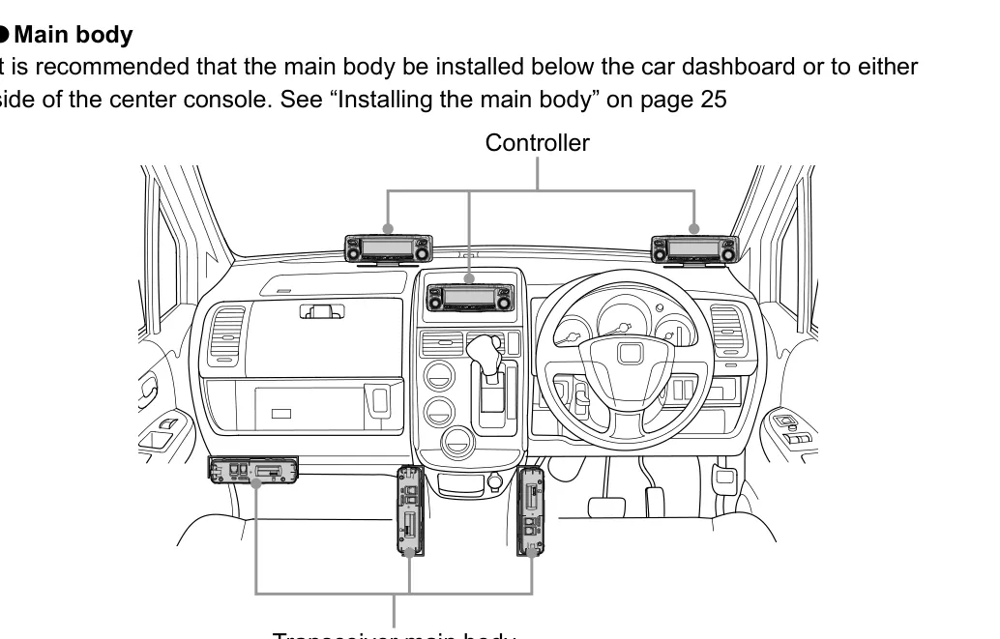</button><figcaption>Figure from page 22. Controller Transceiver main body</figcaption><dialog id="fig-7"><p>Figure from page 22. Controller Transceiver main body</p><form method="dialog"><button>Close</button></form></dialog></figure><p>~~<strong>About the antenna</strong>~~</p>
<p>The antenna is an extremely important part for both transmitting and receiving. The
antenna type and its inherent characteristics determine whether the performance of the
transceiver can be fully realized. As such, please note the following:</p>
<p> Use an antenna that is suitable for the installation conditions and application</p>
<p>objective.
 Use an antenna that is suitable for the operating frequency band.
 Use an antenna and a coaxial cable with a characteristic feed point impedance of</p>
<p>50Ω.
 Adjust the VSWR (Voltage Standing Wave Ratio) until it is 1.5 or less for an antenna</p>
<p>with an adjusted impendence of 50Ω.
 Keep the coaxial cable routing length as short as possible.</p>
<p><strong>Installing the antenna</strong></p>
<ul>
<li><strong>●Antenna installation in a mobile unit</strong>
Install the antenna base to the rear of the car (rear bumper, trunk, rear gate, etc.) and
then attach the antenna to the base.</li>
</ul><ul>
<li>
<p><strong>●Antenna installation when using a fixed station</strong>
For use in an outdoor setting, there are omni-directional antennas and a variety of
directional antennas.</p>
</li>
<li>
<p>Omni-directional antennas such as the GP (Ground Plane) antenna are suitable for
communications with a local station or mobile stations in all directions.</p>
</li>
<li>
<p>Directional antennas such as the Yagi antenna are suitable for communications with a
specific station or a remote station in a specific direction.</p>
</li>
</ul>
<p>~~<strong>Cautions</strong>~~</p>
<p>zz Create a loop (slack) in the coaxial cable directly underneath the antenna and fasten the coaxial</p>
<p>cable so that the weight of the cable does not pull on the antenna.
zz When installing the antenna, take into consideration the securing supports and how the guy wires</p>
<p>are positioned, so that the antenna does not fall over or get blown away by strong wind gusts.</p>
<p>GP antenna
<balcony-mounted example=""></balcony-mounted></p>
<p>Yagi antenna
<roof-mounted example=""></roof-mounted></p><figure><button aria-label="Enlarge Figure from page 24" class="zoom" data-dialog="fig-8" type="button">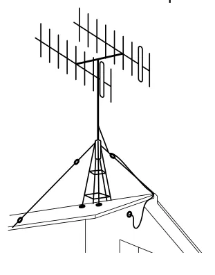</button><figcaption>Figure from page 24</figcaption><dialog id="fig-8"><p>Figure from page 24</p><form method="dialog"><button>Close</button></form></dialog></figure><figure><button aria-label="Enlarge Figure from page 24" class="zoom" data-dialog="fig-9" type="button">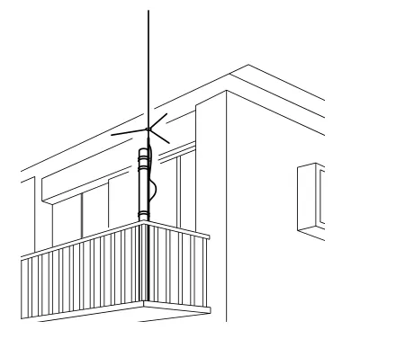</button><figcaption>Figure from page 24</figcaption><dialog id="fig-9"><p>Figure from page 24</p><form method="dialog"><button>Close</button></form></dialog></figure><p>~~<strong>Installing the main body</strong>~~</p>
<p>Install the main body using the supplied MMB-36 bracket.</p>
<p><strong>1</strong> Select the installation location.</p>
<p>~~<strong>Caution</strong>~~ Select a location where the transceiver can be securely attached.</p>
<p>~~<strong>Tip</strong>~~ See “Installation location when used in a mobile unit” on page 22.</p>
<p><strong>3</strong> Attach the bracket.</p>
<p>and washers.</p>
<p><strong>4</strong> Attach the main body to the bracket.
Fasten the main body to the bracket, using the
supplied flange bolts, as shown in the illustration.</p>
<p>~~<strong>Tip</strong>~~ The mounting angle can be changed depending on</p>
<p>the securing position of the flange bolts.</p><p>~~<strong>Installing the front panel</strong>~~</p>
<p>Install the front panel using the supplied bracket.</p>
<p>~~<strong>Caution</strong>~~</p>
<p>The bracket can be formed by hand to match the location where the front panel is installed.
Be careful not to cause an injury when bending the bracket.</p>
<p><strong>1</strong> Select the installation location.</p>
<p>~~<strong>Caution</strong>~~ Select a stable, flat location with as few dents and protrusions as possible.</p>
<p><strong>2</strong> Attach the bracket to the front panel.
Attach the bracket to the front panel using the
supplied screws as shown in the illustration.</p>
<p><strong>3</strong> Adhere double-sided adhesive sheet to the
bracket.
Peel off the protection tape from one side of the
supplied double-sided adhesive sheet, and paste
it onto the bottom side of the bracket.</p>
<p><strong>4</strong> Install the bracket where you want to place the
front panel.
After the adhesive sheet is adhered to the bottom
side of the bracket, Peel off the other side of the
protection tape, and then stick the bracket to the
installation location.</p>
<p>~~<strong>Caution</strong>~~ Remove all dirt and dust from the installation</p>
<p>location before affixing the bracket.</p><figure><button aria-label="Enlarge Figure from page 26. Protection tape Double-sided" class="zoom" data-dialog="fig-10" type="button">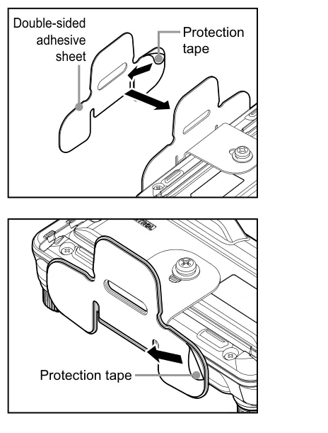</button><figcaption>Figure from page 26. Protection tape Double-sided</figcaption><dialog id="fig-10"><p>Figure from page 26. Protection tape Double-sided</p><form method="dialog"><button>Close</button></form></dialog></figure><p>~~<strong>Connecting the front panel to the main body</strong>~~</p>
<p>MEK-2 allowing you to operate further away from
the main body.</p>
<p>~~<strong>Connecting the antenna</strong>~~</p>
<p><strong>1</strong> Connect the coaxial cable to the main body.
Plug the coaxial cable jack into the ANT terminal
on the rear panel of the main body, then rotate
and tighten it.</p><figure><button aria-label="Enlarge Figure from page 27. 27 Coaxial cable jack" class="zoom" data-dialog="fig-11" type="button">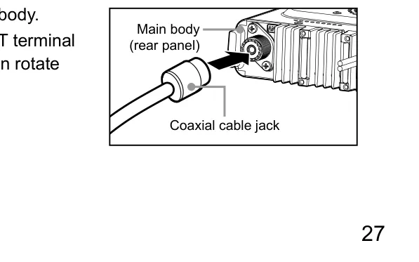</button><figcaption>Figure from page 27. 27 Coaxial cable jack</figcaption><dialog id="fig-11"><p>Figure from page 27. 27 Coaxial cable jack</p><form method="dialog"><button>Close</button></form></dialog></figure><p><strong>Connecting the car battery</strong></p>
<p>When using the transceiver as a mobile unit, connect the DC power supply cable to the
car battery.</p>
<p>~~<strong>Cautions</strong>~~</p>
<p>zz Use the transceiver in a car with a negative ground system where the minus (−) pole of the battery</p>
<p>is connected to the car body.
zz Check the car battery specification is 12 V. Do not connect the transceiver to the 24 V battery of a</p>
<p>large vehicle.
zz Do not use the cigarette lighter socket inside the car as a power source.</p>
<p><strong>(1) Cabling from inside the car to the engine compartment</strong></p>
<p>Rout the DC power supply cable to the engine compartment passing it through a
grommet.</p>
<p><strong>1</strong> Feed a stiff wire from the engine compartment through the grommet into the car.
<strong>2</strong> Twist the “bare wire” end of the supplied DC power supply cable around the end of
the “feed” wire.
<strong>3</strong> Bend the ends of the wires and wind insulation tape around them.
<strong>4</strong> Pull the “feed” wire back into the engine compartment.
The DC power supply cable is pulled into the engine compartment.
<strong>5</strong> Peel off the tape and remove the DC power supply cable from the wire.</p>
<p>i b d</p><figure><button aria-label="Enlarge Figure from page 28. DC power supply cable (supplied) " class="zoom" data-dialog="fig-12" type="button">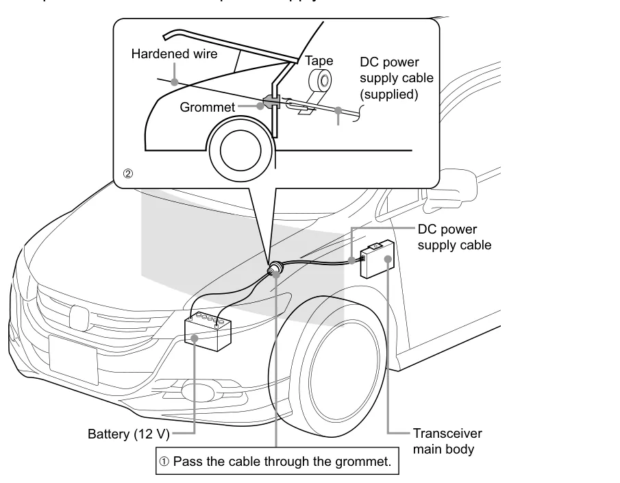</button><figcaption>Figure from page 28. DC power supply cable (supplied) </figcaption><dialog id="fig-12"><p>Figure from page 28. DC power supply cable (supplied) </p><form method="dialog"><button>Close</button></form></dialog></figure><p><strong>(2) Connecting the power supply cable</strong></p>
<p>~~<strong>Cautions</strong>~~</p>
<p>zz Do not use a DC power supply cable other than the one that is supplied or specified.</p>
<p>zz Do not place anything on the DC power supply cable or step on it.</p>
<p>zz Do not use the DC power supply cable with the fuse holder cut off.</p>
<p>zz Do not reverse the polarity (positive and negative) when connecting the battery.</p>
<p><strong>1</strong> Disconnect the minus (−) terminal from the battery.
This prevents short-circuit while working on the cables.
<strong>2</strong> Attach crimped terminals to the bare ends of the DC power supply cable.
Obtain commercially available terminals and crimp or solder them to both the red (+)
and black (−) wire ends of the DC power supply cable.</p>
<p>DC power supply cable</p>
<p>Crimped terminal</p>
<p><strong>3</strong> Connect the red wire (+) of the DC power supply cable to the positive (+) terminal of
the battery.</p>
<p>~~<strong>Caution</strong>~~ Securely connect the DC power supply cable in order not to get disconnected.
<strong>4</strong> Reconnect the negative (−) terminal of the battery that was disconnected.
<strong>5</strong> Connect the black wire (−) of the DC power supply cable to the negative (−) terminal
of the battery.</p>
<p>~~<strong>Caution</strong>~~ Securely connect the DC power supply cable in order not to get disconnected.
<strong>6</strong> Connect the DC power supply cable to the main body.
Plug into the connector of the main body power cable until it clicks.</p><p><strong>Connecting the external power supply equipment</strong></p>
<p>When using the transceiver as a fixed station, use an external power source.</p>
<p>~~<strong>Cautions</strong>~~</p>
<p>zz Use an external power source capable of supplying DC 13.8 V, a current capacity of 20 A or more.</p>
<p>zz Make sure to switch OFF the power of the external power source before connecting.</p>
<p><strong>1</strong> Connect the DC power supply cable to the external power supply equipment.
Connect the red wire (+) of the supplied DC power supply cable to the positive (+)
terminal of the external power source, and the black wire (−) to the negative (−)
terminal of the external power source.
<strong>2</strong> Connect the DC power supply cable to the main body.
Plug into the connector of the main body power cable until it clicks.</p>
<p>Fuse holder</p><p>The following operations can be carried out by using a micro-SD memory card with the
transceiver.</p>
<ul>
<li>
<p>Backing up the information and settings of the transceiver</p>
</li>
<li>
<p>Saving the GPS log data</p>
</li>
<li>
<p>Saving data downloaded using the GM function and WIRES-X function</p>
</li>
<li>
<p>Exchanging the saved data among multiple transceivers</p>
</li>
</ul>
<p>~~<strong>Micro-SD memory cards that can be used</strong>~~</p>
<p>This transceiver supports 2 GB micro-SD memory card and 4 GB, 8 GB, 16 GB, 32 GB
micro-SDHC memory card</p>
<p>~~<strong>Cautions</strong>~~</p>
<p>zz The micro-SD or micro-SDHC cards are not provided with the product.</p>
<p>zz Not all micro-SD and micro-SDHC cards sold commercially are guaranteed to work with this product</p>
<p>~~<strong>Things to note when using micro-SD memory cards</strong>~~</p>
<ul>
<li>
<p>Do not bend the micro-SD memory card or place heavy objects on top of it.</p>
</li>
<li>
<p>Do not touch the terminal face of the micro-SD memory card with your bare hands.</p>
</li>
<li>
<p>micro-SD memory cards that are initialized on other devices may not record normally on
the transceiver. Reinitialize the micro-SD memory card on the transceiver when using
such a card. (For details, see “Initializing micro-SD memory cards” on page 33.)</p>
</li>
<li>
<p>Do not pull the micro-SD memory card out or turn off the transceiver while reading or
writing data from/to the card.</p>
</li>
<li>
<p>Do not insert anything other than a micro-SD memory card into the micro-SD memory
card slot of the transceiver.</p>
</li>
<li>
<p>Do not pull out or insert the micro-SD memory card with unreasonable force.</p>
</li>
<li>
<p>When a single micro-SD memory card is used for a long period of time, writing and
deletion of data may become disabled. Use a new micro-SD memory card when data
can no longer be written or erased.</p>
</li>
<li>
<p>Note that Yaesu shall not be liable for any damages suffered as a result of data loss or
corruption in use of the micro-SD memory card.</p>
</li>
</ul><p>~~<strong>Inserting a micro-SD memory card</strong>~~</p>
<p>transceiver OFF.</p>
<p>memory card slot.</p>
<p>until it clicks.</p>
<p>the correct orientation.</p>
<p>appears on the top right side of the screen.</p>
<p>~~<strong>Tip</strong>~~ It may take a while for the icon to appear depending on</p>
<p>the card capacity.</p>
<p>~~<strong>Removing the micro-SD memory card</strong>~~</p>
<p><strong>2</strong> Push in on the micro-SD memory card.
A click sound is heard and the micro-SD memory card is pushed outward.
<strong>3</strong> Remove the micro-SD memory card from the micro-SD memory card slot.</p><figure><button aria-label="Enlarge Figure from page 32" class="zoom" data-dialog="fig-13" type="button">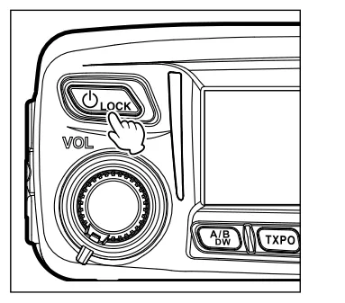</button><figcaption>Figure from page 32</figcaption><dialog id="fig-13"><p>Figure from page 32</p><form method="dialog"><button>Close</button></form></dialog></figure><figure><button aria-label="Enlarge Figure from page 32" class="zoom" data-dialog="fig-14" type="button"></button><figcaption>Figure from page 32</figcaption><dialog id="fig-14"><p>Figure from page 32</p><form method="dialog"><button>Close</button></form></dialog></figure><p>~~<strong>Initializing micro-SD memory cards</strong>~~</p>
<p>When using a new micro-SD memory card for the first time with the FTM-100DR/DE,
initialize it by following the procedure below.</p>
<p>~~<strong>Caution</strong>~~</p>
<p>Initializing deletes all the data recorded on the micro-SD memory card. Check the contents of the
micro-SD memory card before initialization.</p>
<p>The menu list appears.</p>
<p>.
The format confirmation screen appears.</p>
<p>Initializes the micro-SD memory card.</p>
<p>After completing initialization, “Completed” appears,
and then the display returns to the menu list screen.</p><p>~~<strong>Turning the power on</strong>~~</p>
<p>The power switches on, and the display appears on
the screen.</p>
<p><strong><when and="" aprs="" call="" digital="" for="" same="" sign="" the="" using=""></when></strong></p>
<p><strong><when and="" aprs="" call="" digital="" for="" separate="" signs="" using=""></when></strong>
The call sign for digital appears on the left and the
call sign for APRS appears on the right.</p>
<p>~~<strong>Tips</strong>~~   - When turning the transceiver on for the first time, or after resetting the transceiver, a screen</p>
<p>requesting input of a call sign appears.</p>
<pre><code>  - When turning the transceiver on thereafter, the previously registered call sign will be
</code></pre>
<p>displayed.</p>
<p>~~<strong>Switching the power off</strong>~~</p>
<p>The screen display disappears, and the power switches off.</p>
<p>~~<strong>Inputting the call sign</strong>~~</p>
<p>A screen requesting input of a call sign appears when
turning the transceiver on for the first time, or after
resetting the transceiver.
The call sign is used to identify the transmitting station
when communicating in digital mode.</p>
<p>.</p>
<p>~~<strong>Tips</strong>~~   - Up to 10 characters (alphanumeric characters including</p>
<p>hyphen) can be entered.</p>
<pre><code>  - See “Input characters” on page 20 on how to operate
</code></pre>
<p>the character input screen.</p><figure><button aria-label="Enlarge Figure from page 34" class="zoom" data-dialog="fig-15" type="button"></button><figcaption>Figure from page 34</figcaption><dialog id="fig-15"><p>Figure from page 34</p><form method="dialog"><button>Close</button></form></dialog></figure><p>The entered call sign appears at the bottom of the
screen, and the screen switches to the frequency
display screen.</p>
<p>~~<strong>Toggling the operating band</strong>~~</p>
<p>Normally, 2 operating bands appear on the top half and bottom half of the screen. The
frequency and modulation mode may be changed only for the band on the top half of
the screen, which is called “operating band”. The other band, displayed on the bottom
half of the screen, is not in operation, and is called the “sub-band”.</p>
<p>Each press toggles the operating band between
A-band and B-band.</p>
<p>~~<strong>Caution</strong>~~ The operating band signals and sub-band signals</p>
<p>cannot be received simultaneously.</p>
<p>~~<strong>Adjusting the volume level</strong>~~</p>
<p><strong>1</strong> Rotate VOL.
Clockwise rotation increases the volume, whereas
counterclockwise rotation decreases the volume.</p><figure><button aria-label="Enlarge Figure from page 35" class="zoom" data-dialog="fig-16" type="button">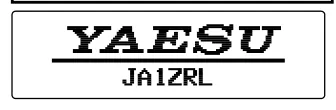</button><figcaption>Figure from page 35</figcaption><dialog id="fig-16"><p>Figure from page 35</p><form method="dialog"><button>Close</button></form></dialog></figure><figure><button aria-label="Enlarge Figure from page 35" class="zoom" data-dialog="fig-17" type="button">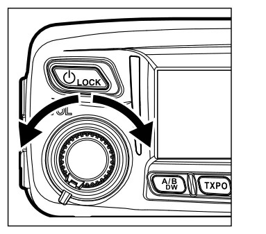</button><figcaption>Figure from page 35</figcaption><dialog id="fig-17"><p>Figure from page 35</p><form method="dialog"><button>Close</button></form></dialog></figure><p>~~<strong>Adjusting the squelch level</strong>~~</p>
<p>Annoying noises can be eliminated when there is no signal present. The A-band and
B-band squelch levels can be individually adjusted. Increasing the squelch level will be
more effective in reducing noise; however setting the squelch level too high may block
weak signals. Adjust the squelch level as required.</p><figure><button aria-label="Enlarge Figure from page 36" class="zoom" data-dialog="fig-18" type="button">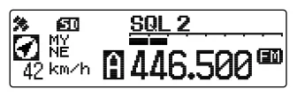</button><figcaption>Figure from page 36</figcaption><dialog id="fig-18"><p>Figure from page 36</p><form method="dialog"><button>Close</button></form></dialog></figure><p>~~<strong>Tuning in to the frequency</strong>~~</p>
<ul>
<li>
<p><strong>●Using the DIAL</strong></p>
</li>
<li>
<p><strong>●Using the microphone</strong></p>
</li>
</ul>
<p><strong>Press [UP] and [DWN] briefly</strong>
Pressing <strong>[UP]</strong> briefly, tunes the frequency upwards.
Whereas pressing <strong>[DWN]</strong> briefly tunes the frequency in
the downward direction.</p>
<p><strong>Using the number keys</strong></p>
<p>frequency.</p>
<p>~~<strong>Changing the frequency steps</strong>~~</p><p>.
The menu list appears.</p>
<p><strong>4</strong> Rotate the DIAL to select the desired frequency step.
The frequency steps change in the following order:
“AUTO” → “5.00 KHz” → “6.25 KHz” → “8.33 KHz”
→ “10.00 KHz” → “12.50 KHz” → “15.00 KHz” →
“20.00 KHz” → “25.00 KHz” → “50.00 KHz” →
“100.00 KHz”</p>
<p>~~<strong>Tips</strong>~~   - The default setting: AUTO</p>
<pre><code>  - The 8.33 kHz frequency step can be selected only on
</code></pre>
<p>the Air band.</p>
<pre><code>  - The 5 kHz, 6.25 kHz or 15 kHz frequency step cannot
</code></pre>
<p>be selected on 480 MHz or higher frequency.</p>
<p>The selected frequency step is set, and the display returns to the previous operating
display.</p>
<p>~~<strong>Switching the operation mode</strong>~~</p>
<p>The operating mode can be switched between VFO mode and MEMORY mode. In VFO
mode, the operating frequency may be freely adjusted; in MEMORY mode, the memory
channels are recalled and displayed on the screen for operation.</p>
<p><strong>1</strong> Select the desired operating band.</p>
<p>The display switches to MEMORY mode.</p>
<p>on the operating band name display.</p>
<p>When a name (tag) has been assigned to the</p>
<p>display or the sub-band display.</p><figure><button aria-label="Enlarge Figure from page 38" class="zoom" data-dialog="fig-19" type="button">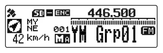</button><figcaption>Figure from page 38</figcaption><dialog id="fig-19"><p>Figure from page 38</p><form method="dialog"><button>Close</button></form></dialog></figure><p>The display switches to VFO mode and returns to the previous receive frequency.</p>
<p>~~<strong>Selecting communication mode</strong>~~</p>
<p>The FTM-100DR/DE transceiver is equipped with the AMS (Automatic Mode Select)
function which automatically selects from 4 modes of transmission corresponding to the
signal being received.
The transmit mode is selected according to the received signal so that C4FM digital
signals, and analog signals are received and transmitted automatically.</p>
<p>*The display differs depending on the received signal.</p>
<p>Display example when in AMS mode</p>
<table>
<thead>
<tr>
<th>Operation mode</th>
<th>Icon</th>
<th>Description of modes</th>
</tr>
</thead>
<tbody>
<tr>
<td>AMS</td>
<td></td>
<td></td>
</tr>
<tr>
<td>(Automatic Mode Select)</td>
<td>▀</td>
<td></td>
</tr>
<tr>
<td>○○</td>
<td>Transmission mode is automatically selected from 4 types according</td>
<td></td>
</tr>
<tr>
<td>to the signal received.</td>
<td></td>
<td></td>
</tr>
<tr>
<td>(“○○” icon differs depending on the received signal.)</td>
<td></td>
<td></td>
</tr>
<tr>
<td>The AMS function operation can be changed from the Setup menu</td>
<td></td>
<td></td>
</tr>
<tr>
<td>setting. See “Setting the transmission mode when using the AMS</td>
<td></td>
<td></td>
</tr>
<tr>
<td>function (3 AMS TX MODE)” on page 125.</td>
<td></td>
<td></td>
</tr>
<tr>
<td>V/D Mode</td>
<td></td>
<td></td>
</tr>
<tr>
<td>(Voice/Data simultaneous</td>
<td></td>
<td></td>
</tr>
<tr>
<td>transmission mode)</td>
<td>DN</td>
<td>Calls are less prone to interruptions due to detection and correction</td>
</tr>
<tr>
<td>of voice signals during digital voice signal transmission. This is the</td>
<td></td>
<td></td>
</tr>
<tr>
<td>standard mode for C4FM Digital.</td>
<td></td>
<td></td>
</tr>
<tr>
<td>Voice FR Mode</td>
<td></td>
<td></td>
</tr>
<tr>
<td>(Voice Full Rate Mode)</td>
<td>VW</td>
<td>Digital voice data transmission using the entire 12.5 kHz band.</td>
</tr>
<tr>
<td>Enables high-quality voice communication.</td>
<td></td>
<td></td>
</tr>
<tr>
<td>Data FR Mode</td>
<td></td>
<td></td>
</tr>
<tr>
<td>(High Speed Data</td>
<td></td>
<td></td>
</tr>
<tr>
<td>Communication Mode)</td>
<td>DW</td>
<td>High speed data communication using the entire 12.5 kHz band.</td>
</tr>
<tr>
<td>The transceiver automatically switches to this mode during image</td>
<td></td>
<td></td>
</tr>
<tr>
<td>transmission.</td>
<td></td>
<td></td>
</tr>
<tr>
<td>Analog FM Mode</td>
<td>FM</td>
<td>Analog communication using FM mode.</td>
</tr>
<tr>
<td>Effective when the signal is weak and audio is susceptible to</td>
<td></td>
<td></td>
</tr>
<tr>
<td>interruption in digital mode.</td>
<td></td>
<td></td>
</tr>
</tbody>
</table>
<p>~~<strong>Cautions</strong>~~</p>
<p>zz In V/D mode (“DN” on the screen), location information is included in the transmitted signal during</p>
<p>voice communication, however, location information is not included with the Voice in the FR mode
(“VW” on the LCD).</p><p>~~<strong>Switching the modulation mode</strong>~~</p>
<p>In analog mode, the modulation mode can be selected from “AUTO”, “MANUAL (FM)”
and “MANUAL (AM)”.
When shipped from the factory, the mode is set to “AUTO” where the most optimal
modulation mode is automatically selected according to the frequency.</p>
<p>.
The menu list appears.</p>
<p>The modulation mode setting value appears.
<strong>5</strong> Rotate the DIAL to select the desired modulation
mode.
“1 AUTO”: Automatically switches the modulation</p>
<p>mode to match the frequency band.
“2 MANUAL(FM)”: Switches to FM mode.
“3 MANUAL(AM)”: Switches to AM mode.</p>
<p>~~<strong>Tip</strong>~~ The default setting: AUTO</p>
<p>Sets the selected modulation mode and returns the display to the previously viewed
screen.</p><figure><button aria-label="Enlarge Figure from page 40" class="zoom" data-dialog="fig-20" type="button">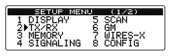</button><figcaption>Figure from page 40</figcaption><dialog id="fig-20"><p>Figure from page 40</p><form method="dialog"><button>Close</button></form></dialog></figure><figure><button aria-label="Enlarge Figure from page 40" class="zoom" data-dialog="fig-21" type="button">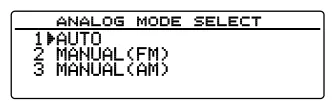</button><figcaption>Figure from page 40</figcaption><dialog id="fig-21"><p>Figure from page 40</p><form method="dialog"><button>Close</button></form></dialog></figure><p>~~<strong>Transmitting</strong>~~</p>
<p><strong>2</strong> Speak into <strong>[MIC]</strong> on the microphone.</p>
<p>~~<strong>Tip</strong>~~ Keep the microphone about 5 cm away from your mouth.</p>
<p><strong>3</strong> Release <strong>[PTT]</strong> .
The transmit mode/status indicator turns off and the transceiver returns to the
receive mode.</p>
<p>~~<strong>Tips</strong>~~</p>
<ul>
<li>
<p>Do not continue transmitting for a prolonged period. The transceiver may overheat, resulting in
malfunction or burn.</p>
</li>
<li>
<p>Use the optional cooling fan SMB-201 to effectively cool down the transceiver that has heated up
due to continuous transmission.</p>
</li>
<li>
<p>“ERROR TX FREQ” appears if you attempt to transmit an unavailable frequency.</p>
</li>
</ul><p><strong>Adjusting the transmit power</strong></p>
<p>When communicating with a nearby station, the transmit power level may be lowered to
reduce the battery power consumption.</p>
<p>changes in the following order:
“HIGH” → “LOW” → “MID”</p>
<table>
<thead>
<tr>
<th>Model</th>
<th>HIGH</th>
<th>MID</th>
<th>LOW</th>
</tr>
</thead>
<tbody>
<tr>
<td>FTM-100DR/DE</td>
<td>50 W</td>
<td>20 W</td>
<td>5 W</td>
</tr>
</tbody>
</table>
<p><strong>Adjusting the microphone sensitivity</strong></p>
<p>The sensitivity (gain) of the microphone can be adjusted.</p>
<p>.
The microphone gain setting value appears.
<strong>4</strong> Rotate the DIAL to select the desired microphone
gain setting.
“1 MIN” → “2 LOW” → “3 NORMAL” → “4 HIGH”</p>
<p>~~<strong>Tip</strong>~~ The default setting: 3 NORMAL</p>
<p>The microphone sensitivity is set and the display returns to the previous operating
screen.</p><p>~~<strong>Communicating in FM mode</strong>~~</p>
<p><strong>1</strong> Select the desired operating band.
<strong>2</strong> Set the modulation mode to “MANUAL (FM)”.
<strong>3</strong> Rotate the DIAL to tune to the desired frequency.
<strong>4</strong> While pressing and holding <strong>[PTT]</strong>, speak into the microphone.</p>
<p>~~<strong>Tip</strong>~~</p>
<p>To use the half deviation, select “1 ON” from <strong>[2 TX/RX]</strong> → <strong>[9 HALF DEVIATION]</strong> in the Setup menu.</p>
<p>~~<strong>Communicating using the repeater</strong>~~</p>
<p>The FTM-100DR/DE includes the ARS (Automatic Repeater Shift) function which
permits communication through repeaters automatically, by simply setting the receiver to
the repeater frequency.
<strong>1</strong> Tune to the repeater frequency.</p>
<p><strong>2</strong> Press the <strong>[PTT]</strong> to transmit.
During transmission, radio waves having an 100.0 Hz* tone signal are emitted on the
frequency lower than reception frequency by 5 MHz*.</p>
<p>*: Depends on the transceiver version.</p>
<p>~~<strong>Tip</strong>~~</p>
<p>From the Setup menu, you can change the repeater setting.</p>
<p>[8 CONFIG] → [4 AUTO REPEATER SHIFT]: Deactivates the ARS function.</p>
<p>[8 CONFIG] → [5 REPEATER SHIFT]: Allows setting the repeater shift direction.</p>
<p>[8 CONFIG] → [6 REPEATER SHIFT FREQ]: Allows changing the repeater shift frequency offset.</p>
<p><strong>Tone Calling (1750 Hz)</strong></p>
<p>If your transceiver is FTM-100DE (European version), press and hold in the program
key [P1] of the microphone (MH-48) to generates a 1750 Hz burst tone to access the
European repeater. The transmitter will automatically be activated, and a 1750 Hz audio
tone will be superimposed on the carrier. Once access to the repeater has been gained,
you may release the <strong>[P1]</strong> key, and use the <strong>[PTT]</strong> for activating the transmitter thereafter.</p><p><strong>Changing the 100.0 Hz CTCSS tone squelch</strong></p>
<p>To communicate with a repeater that uses a tone signal other than 100.0 Hz, change the
CTCSS tone frequency using the setup menu.</p>
<p><strong>1</strong> Tune the transceiver receiver frequency to the
repeater frequency.</p>
<p>displayed.</p>
<p><strong>5</strong> Turn the DIAL to change and select the different tone
frequency.</p>
<p>operating screen.</p>
<p><strong>7</strong> Press the <strong>[PTT]</strong> to transmit.
The transmit frequency is automatically offset to the repeater input frequency, and
the squelch tone signal is set.</p>
<p>~~<strong>Tip</strong>~~</p>
<p>The squelch tone and transmit offset frequency will be recorded whenever the displayed frequency is
registered to a memory channel. (Refer to “Registering to the memory channel” on page 51).</p><p>~~<strong>Changing the beep volume</strong>~~</p>
<p>The volume of the key operation “beep sound” can be adjusted.</p>
<p>.
The menu list appears.</p>
<p>.
The volume setting value appears.
<strong>4</strong> Rotate the DIAL to select the desired volume level.
“1 OFF” → “2 LOW” → “3 HIGH”</p>
<p>~~<strong>Tip</strong>~~ The default setting: 2 LOW</p>
<p>The selected beep volume level is set and the display returns to the previous
operating screen.</p><p>~~<strong>Locking the DIAL and keys</strong>~~</p>
<p>To prevent accidental frequency change during operation, the DIAL and keys can be
locked.</p>
<p>~~<strong>Tip</strong>~~ VOL is not locked.</p>
<p>“LOCK” will be displayed on the screen and the DIAL
and keys will be inoperative.</p>
<p>keys. “UNLOCK” will be displayed on the screen.</p>
<p>~~<strong>Adjusting the date and time</strong>~~</p>
<p>The FTM-100DR/DE transceiver has a built-in clock. Set the time and date before using
the radio. Also the clock is automatically set when signals are received from the GPS.</p>
<p>.
The menu list appears.</p>
<p>The current date and time settings appear.</p><figure><button aria-label="Enlarge Figure from page 46" class="zoom" data-dialog="fig-22" type="button">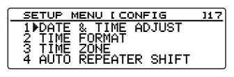</button><figcaption>Figure from page 46</figcaption><dialog id="fig-22"><p>Figure from page 46</p><form method="dialog"><button>Close</button></form></dialog></figure><figure><button aria-label="Enlarge Figure from page 46" class="zoom" data-dialog="fig-23" type="button">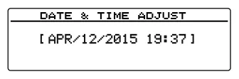</button><figcaption>Figure from page 46</figcaption><dialog id="fig-23"><p>Figure from page 46</p><form method="dialog"><button>Close</button></form></dialog></figure><p>The “Month” display blinks.</p>
<p><strong>5</strong> Rotate the DIAL to select the month</p>
<p>side).</p>
<p><strong>11</strong> Rotate the DIAL to select the hour.</p>
<p>The display is returned to the previously viewed screen.</p>
<p>~~<strong>Tips</strong>~~</p>
<ul>
<li>
<p>At normal temperature, the time accuracy is ±30 seconds per month. It may vary depending on the
temperature and environment conditions.</p>
</li>
<li>
<p>The time is automatically set when signals are received from the GPS.</p>
</li>
<li>
<p>When you use the transceiver for the first time, the setting of the clock may be inaccurate. In such a
case, readjust the time.</p>
</li>
<li>
<p>The calendar can display dates from January 1, 2000 A.D. up to December 31, 2099 A.D.</p>
</li>
</ul><figure><button aria-label="Enlarge Figure from page 47" class="zoom" data-dialog="fig-24" type="button">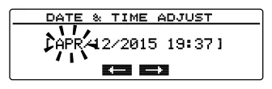</button><figcaption>Figure from page 47</figcaption><dialog id="fig-24"><p>Figure from page 47</p><form method="dialog"><button>Close</button></form></dialog></figure><figure><button aria-label="Enlarge Figure from page 47" class="zoom" data-dialog="fig-25" type="button">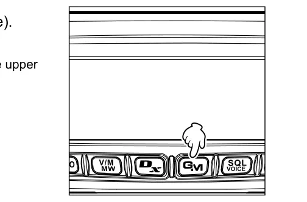</button><figcaption>Figure from page 47</figcaption><dialog id="fig-25"><p>Figure from page 47</p><form method="dialog"><button>Close</button></form></dialog></figure><p>~~<strong>Adjusting the display brightness</strong>~~</p>
<p>The brightness and contrast of the display can be adjusted.</p>
<p>.
The menu list appears.</p>
<p>The brightness level adjustment screen appears.
<strong>4</strong> Rotate the DIAL to select the desired brightness
level.
The brightness level can be selected from the
following 7 levels.
“MIN”, “2”, “3”, “4”, “5”, “6” and “MAX”</p>
<p>The screen where the contrast level may be selected
appears.</p><p><strong>7</strong> Rotate the DIAL to select the desired contrast level.
The contrast may be selected from the following 7
levels.
“−3”, “−2”, “−1”, “0”, “+1”, “+2” and “+3”</p>
<p>~~<strong>Tip</strong>~~ The default setting: 0</p>
<p>The selected contrast level is set and the display returns to the previous operating
screen.</p>
<p>~~<strong>Restoring defaults (All Reset)</strong>~~</p>
<p>All transceiver settings and memory content may be restored to the defaults.</p>
<p>The menu list appears.</p>
<p>~~<strong>Tip</strong>~~ To cancel resetting, select <strong>[Cancel]</strong> .</p>
<p>A beep sounds and the call sign input display
appears on the screen.</p>
<p><strong>5</strong> Input the call sign.
Input the call sign using the numeric key pad. See “Input characters” on page 20
for instruction on inputting the call sign characters.
<strong>6</strong> Press</p><figure><button aria-label="Enlarge Figure from page 49" class="zoom" data-dialog="fig-26" type="button">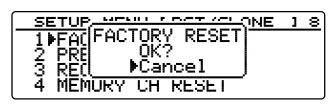</button><figcaption>Figure from page 49</figcaption><dialog id="fig-26"><p>Figure from page 49</p><form method="dialog"><button>Close</button></form></dialog></figure><p>~~<strong>Caution</strong>~~</p>
<p>Performing the All Reset function clears all information registered to the memory channels. Be sure to
write memory data down on paper or back up the data on a micro-SD memory card. For instructions
on saving the data onto a backup micro-SD memory card, see “Setup menu operations: 11 SD” on
page 146.</p><p>The preset channels may be quickly recalled for convenient operation. The transceiver
is also equipped with the following memory functions:</p>
<p>·· Skip memory channels to preclude reception during scanning ( page 67)
·· Scan only the specified memory channels ( page 67)
·· “Programmable Memory Scan (PMS)” that scans only the specified frequency range
(in the same frequency band) ( page 68)</p>
<p>The individual operating frequency and operating mode (modulation mode), as well as
the other operating information, can be saved for each normal memory channel and
PMS memory channel.</p>
<ul>
<li>
<p>Operating frequency - Modulation mode* - Memory tag</p>
</li>
<li>
<p>Repeater information - Tone information - DCS information</p>
</li>
<li>
<p>Memory skip information - Transmit power
*Digital mode and analog mode information are not stored in the memory.</p>
</li>
</ul>
<p>~~<strong>Registering to the memory channel</strong>~~</p>
<p>~~<strong>Caution</strong>~~</p>
<p>The information registered to the memory channel may be lost due to incorrect operation, static
electricity or electrical noise. Data may also be lost due to component failures and repairs. Make sure
to write down the information registered to the memory channels on a piece of paper or save the data
to a backup micro-SD memory card.</p>
<p>A total of 500 memory channels channels are available for each of the A-band and
B-band.</p><p>The MEMORY WRITE screen appears.
The frequency automatically appears on an empty
memory channel.</p>
<p>channel, see steps 4 to 12 in “Naming a memory
channel” on page 56.</p>
<p>“Specifying memory channels” on page 66.</p>
<pre><code>  - To set memory channels to skip, follow step 4 in
</code></pre>
<p>“Setting memories to skip” on page 67.
<strong>4</strong> Rotate the DIAL to select the desired memory
channel.</p>
<p>in steps of 100 memory channels.</p>
<p>~~<strong>Tips</strong>~~</p>
<ul>
<li>
<p>When shipped from the factory, the frequency in memory channel 1 of A-band is set to 144.000
MHz whereas the frequency in memory channel 1 of B-band is set to 430.000 MHz. These can be
changed to other frequencies but cannot be erased.</p>
</li>
<li>
<p>Names can also be assigned to the memory channels. See “Naming a memory channel” on page
56.</p>
</li>
<li>
<p>9 pairs of PMS memory channels can be written for the A-band and B-band each. See “Scanning
the programmable memories (PMS)” on page 68.</p>
</li>
</ul>
<p>~~<strong>Recalling memories</strong>~~</p><figure><button aria-label="Enlarge Figure from page 52" class="zoom" data-dialog="fig-27" type="button">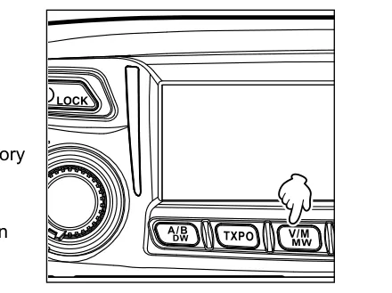</button><figcaption>Figure from page 52</figcaption><dialog id="fig-27"><p>Figure from page 52</p><form method="dialog"><button>Close</button></form></dialog></figure><figure><button aria-label="Enlarge Figure from page 52" class="zoom" data-dialog="fig-28" type="button">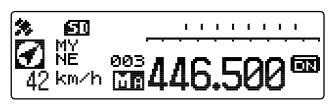</button><figcaption>Figure from page 52</figcaption><dialog id="fig-28"><p>Figure from page 52</p><form method="dialog"><button>Close</button></form></dialog></figure><p><strong>2</strong> Rotate the DIAL to select the desired memory channel.</p>
<p>~~<strong>Tip</strong>~~</p>
<p>Unused memory channels are skipped.</p>
<p>~~<strong>Recalling the home channel</strong>~~</p>
<p><strong>1</strong> Press <strong>[P2]</strong> on the microphone.
The home channel appears on the screen.</p>
<p>~~<strong>Tip</strong>~~ Change the frequency by rotating the DIAL to return to</p>
<p>VFO mode.</p>
<p>Press <strong>[P2]</strong> again to return to VFO mode and display the frequency that was selected
before the home channel was recalled.</p>
<p>~~<strong>Tip</strong>~~</p>
<p>When shipped from the factory, the home channel of 144 MHz band is set to 144.000 MHz while the
home channel of 430 MHz band is set to 430.000 MHz.</p><figure><button aria-label="Enlarge Figure from page 53. LOCK P3" class="zoom" data-dialog="fig-29" type="button">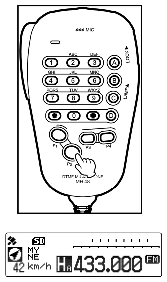</button><figcaption>Figure from page 53. LOCK P3</figcaption><dialog id="fig-29"><p>Figure from page 53. LOCK P3</p><form method="dialog"><button>Close</button></form></dialog></figure><p><strong>Changing the frequency of the home channel</strong></p>
<p>The default frequency setting of the home channel can be changed.
<strong>1</strong> Switch to VFO mode.
<strong>2</strong> Rotate the DIAL to tune to the desired home channel frequency.</p>
<p>The MEMORY WRITE screen appears.</p>
<p><strong>4</strong> Rotate the DIAL to select <strong>[HOME]</strong> .</p>
<p>.
The home channel frequency is overwritten, and the
new home channel frequency is displayed.</p><figure><button aria-label="Enlarge Figure from page 54" class="zoom" data-dialog="fig-30" type="button">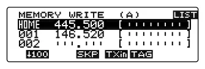</button><figcaption>Figure from page 54</figcaption><dialog id="fig-30"><p>Figure from page 54</p><form method="dialog"><button>Close</button></form></dialog></figure><p>~~<strong>Clearing memories</strong>~~</p>
<p>The MEMORY WRITE screen appears.</p>
<p><strong>3</strong> Rotate the DIAL to select the memory channel from
which memories are to be cleared.</p>
<p>The erase confirmation screen appears.</p>
<p>memory deletion.</p>
<pre><code>  - Repeat steps 3 to 5 to clear memories from other
</code></pre>
<p>channels.</p><figure><button aria-label="Enlarge Figure from page 55" class="zoom" data-dialog="fig-31" type="button">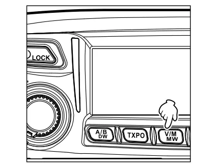</button><figcaption>Figure from page 55</figcaption><dialog id="fig-31"><p>Figure from page 55</p><form method="dialog"><button>Close</button></form></dialog></figure><figure><button aria-label="Enlarge Figure from page 55. 2 Press , ( appears on the left side)." class="zoom" data-dialog="fig-32" type="button">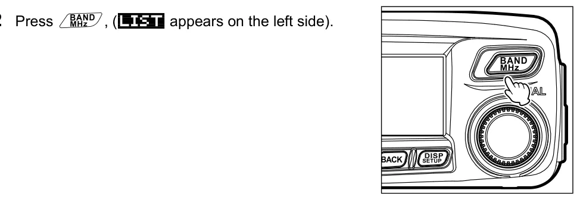</button><figcaption>Figure from page 55. 2 Press , ( appears on the left side).</figcaption><dialog id="fig-32"><p>Figure from page 55. 2 Press , ( appears on the left side).</p><form method="dialog"><button>Close</button></form></dialog></figure><figure><button aria-label="Enlarge Figure from page 55. Using the Memory" class="zoom" data-dialog="fig-33" type="button">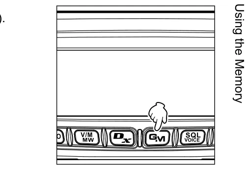</button><figcaption>Figure from page 55. Using the Memory</figcaption><dialog id="fig-33"><p>Figure from page 55. Using the Memory</p><form method="dialog"><button>Close</button></form></dialog></figure><figure><button aria-label="Enlarge Figure from page 55" class="zoom" data-dialog="fig-34" type="button">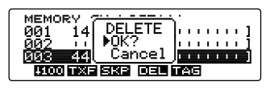</button><figcaption>Figure from page 55</figcaption><dialog id="fig-34"><p>Figure from page 55</p><form method="dialog"><button>Close</button></form></dialog></figure><p>The display is returned to the previously viewed screen.</p>
<p>~~<strong>Naming a memory channel</strong>~~</p>
<p>Names (memory tags) such as call signs and the names of the broadcasting stations
can be assigned to the memory channels and the home channel.
Up to 8 of the following characters can be entered as a memory tag.</p>
<ul>
<li>Alphabet (capital/small letters), numbers, symbols</li>
</ul>
<p><strong>Example: Assigning a name like “YM Grp01”</strong></p>
<p>The MEMORY WRITE screen appears.</p>
<p>name.</p>
<p>~~<strong>Tip</strong>~~ To assign a name to the home channel, recall the home</p>
<p>channel.</p><figure><button aria-label="Enlarge Figure from page 56" class="zoom" data-dialog="fig-35" type="button">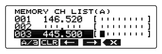</button><figcaption>Figure from page 56</figcaption><dialog id="fig-35"><p>Figure from page 56</p><form method="dialog"><button>Close</button></form></dialog></figure><p>“Y” is entered, and the cursor moves to the right.</p>
<p>upper side).</p>
<p>appears on the upper side).</p>
<p>upper side).</p>
<p>right.</p>
<p>Upper case letters can be entered.</p>
<p>“G” is entered, and the cursor moves to the right.</p>
<p>Lower case letters can be entered.</p>
<p>“r” is entered, and the cursor moves to the right.</p>
<p>“p” is entered, and the cursor moves to the right.</p>
<p>The numbers input screen appears.</p><p>The entered name appears on the right side of the
screen.</p>
<p>The entered name is registered to the memory
channel and the display returns to the previous
operating screen. The entered memory tag appears.</p>
<p><strong>Displaying the memory tag</strong></p>
<p>The frequency and name tag display format can be selected for each channel.</p>
<p>.
The menu list appears.</p>
<p>The setting options appear.
<strong>4</strong> Rotate the DIAL to select the desired display size.
“1 LARGE”: Displays the memory tag in large letters.
“2 SMALL”: Displays the memory tag in small letters.</p>
<p>~~<strong>Tip</strong>~~ The default setting: 2 SMALL</p>
<p>The display size is set, and the display returns to the previous operating screen.</p>
<p>of following the procedure above.</p>
<p><strong>LARGE</strong> <strong>SMALL</strong></p><p>~~<strong>Split memory</strong>~~</p>
<p>A separate transmit frequency may be registered to a memory channel to which a
receive frequency has already been registered.
<strong>1</strong> In VFO mode, select the transmit frequency to be registered.</p>
<p>The MEMORY WRITE screen appears.
The entered transmit frequency automatically
appears on the next blank memory channel.</p>
<p>channel to which the transmit frequency is to be
registered.</p>
<p>of 100 memory channels.</p>
<p>The confirmation screen appears.</p>
<p>Registers the transmission frequency, then displays
the memory mode screen.</p>
<p>a separate transmit frequency is registered. Also, when</p>
<p>screen.</p><figure><button aria-label="Enlarge Figure from page 59. Using the Memory" class="zoom" data-dialog="fig-36" type="button">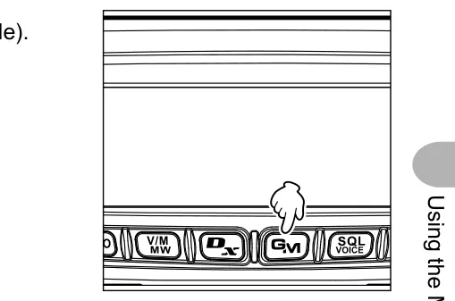</button><figcaption>Figure from page 59. Using the Memory</figcaption><dialog id="fig-36"><p>Figure from page 59. Using the Memory</p><form method="dialog"><button>Close</button></form></dialog></figure><p>~~<strong>Receiving Weather Broadcast Channels (USA version only)</strong>~~</p>
<p>This radio includes the preprogrammed VHF Weather Broadcast Station Memory
Channel Bank, and can receive the broadcast or the weather alert by recalling or
scanning a desired channel.
The following channels are stored in the weather station memory bank of this radio.</p>
<p>|Channel
No.
WX01|Frequency
162.550 MHz|Col3|Channel
No.
WX06|Frequency
162.500 MHz|
|---|---|---|---|---|
|WX02|162.400 MHz||WX07|162.525 MHz|
|WX03|162.475 MHz||WX08|161.650 MHz|
|WX04|162.425 MHz||WX09|161.775 MHz|
|WX05|162.450 MHz||WX10|163.275 MHz|</p>
<p>This “WX” function can only be used through the programmable keys <strong>[P1]</strong> to <strong>[P4]</strong> on the
microphone.</p>
<p><strong>Assigning the “WX” function to a programmable key on the microphone</strong></p>
<p>The Setup menu appears.</p>
<p>The microphone program key setting screen appears.</p>
<p>The display returns to the previously viewed operating screen.</p>
<p><strong>Recalling the weather channels</strong>
<strong>Example: When “WX” is assigned to [P1]</strong>
<strong>1</strong> Press <strong>[P1]</strong> on the microphone.
The WX function is activated, and the weather channel selected last time the WX
function was activated will be displayed on the screen.
<strong>2</strong> Rotate the DIAL to select the other channels.
<strong>3</strong> Press the <strong>[PTT]</strong> on the microphone to search for louder stations.
Scanning of the channels stored in the weather station memory bank will start.
When the scanning pauses on a station, press the <strong>[PTT]</strong> once to halt the scan, or
press it twice to restart the scan.
<strong>4</strong> Press the <strong>[PTT]</strong> to finish the scan.
<strong>5</strong> P <strong>[P1]</strong></p><p><strong>Listening the weather alert</strong></p>
<p>In the event of extreme weather disturbances, such as storms and hurricanes, the
NOAA (National Oceanic and Atmospheric Administration) sends a weather alert
accompanied by a 1050 Hz tone and subsequent weather report on one of the
NOAA weather channels. You may disable to receive the weather alert tone using <strong>[4</strong>
<strong>SIGNALING]</strong> → <strong>[10 WX ALERT]</strong> in the Setup menu.</p><p>The FTM-100DR/DE is equipped with a scanning function to search for memory
channels and frequencies with active signals.
Scanning can be performed using the following 5 methods:</p>
<ul>
<li>
<ul>
<li>VFO scan
Scan in VFO mode.</li>
</ul>
</li>
<li>
<ul>
<li>All Memory Channel Scan
Scan for all memory channels.</li>
</ul>
</li>
<li>
<ul>
<li>Select Memory Channel Scan
Scan for the specified memory channels.</li>
</ul>
</li>
<li>
<ul>
<li>Skip Memory Channel Scan
Skip the specified memory channels when scanning.</li>
</ul>
</li>
<li>
<ul>
<li>Programmable Memory Channel Scan (PMS)
Scan for the programmable memories.</li>
</ul>
</li>
</ul>
<p>~~<strong>VFO scan</strong>~~</p>
<p><strong>1</strong> Select the band to be scanned, and then switch to
VFO mode.
<strong>2</strong> Press and hold <strong>[UP]</strong> or <strong>[DWN]</strong> on the microphone for
over one second.
Pressing <strong>[UP]</strong> scans in the higher frequency
direction.
Pressing <strong>[DWN]</strong> scans in the lower frequency
direction.
During scanning, the decimal point of the frequency
display blinks.
Once the transceiver receives a signal, the
transceiver continuously receives it until the signal
disappears, and restarts scanning 2 seconds after
the signal disappears.</p>
<pre><code>  - The scanning direction can be changed by pressing and holding **[UP]** or **[DWN]** on the
</code></pre>
<p>microphone for over one second, or by rotating the DIAL while scanning.</p>
<pre><code>  - The operation performed after the scan stops on a signal, can be set from **[5 SCAN]** → **[3**
</code></pre>
<p><strong>SCAN RESUME]</strong> in the Setup menu (refer to the next page).</p><ul>
<li><strong>●Canceling scanning</strong>
Press <strong>[PTT]</strong> on the microphone to cancel scanning (this does not put the transceiver
into transmit mode).</li>
</ul>
<p><strong>Selecting the receiver operation performed after scanning stops</strong></p>
<p>Select one of the following 3 receiving operations to be performed after the scanning
stops.</p>
<p>(1) Restart scanning after receiving the frequency for the set amount of time. Select</p>
<p>from 1, 3 or 5 seconds.</p>
<p>(2) Continue receiving the frequency until the signal disappears, and then restart</p>
<p>scanning 2 seconds after the signal disappears (BUSY).</p>
<p>(3) Stop scanning and receive that frequency (HOLD).</p>
<p>.
The menu list appears.</p>
<p>The options for receiver operation appear.</p>
<p>“1 BUSY” → “2 HOLD” → “3 1sec” → “4 3sec” → “5
5sec”</p>
<p>~~<strong>Tip</strong>~~ The default setting: 1 BUSY</p>
<p>The receiver scanning operation is set, and the display returns to the previous
operating screen.</p>
<p>~~<strong>Tip</strong>~~</p><p>~~<strong>Memory scan</strong>~~</p>
<p>Frequencies registered to the memory channels can be scanned in the memory channel
number order.</p>
<p><strong>1</strong> Switch to memory mode.
<strong>2</strong> Press and hold <strong>[UP]</strong> or <strong>[DWN]</strong> on the microphone for
over one second.
Pressing <strong>[UP]</strong> scans the memory channels in an
upward direction.
Pressing <strong>[DWN]</strong> scans the memory channels in a
downward direction.
During scanning, the decimal point of the frequency
display blinks.
Once the transceiver receives a signal, the
transceiver continuously receives it until the signal
disappears, and restarts scanning 2 seconds after
the signal disappears.</p>
<p>~~<strong>Tips</strong>~~   - The scanning direction (UP/DOWN) can be set from <strong>[5</strong></p>
<p><strong>SCAN]</strong> → <strong>[2 SCAN DIRECTION]</strong> in the Setup menu.
(This direction setting is also applied to scanning
performed using one of the <strong>[P1]</strong> to <strong>[P4]</strong> keys on the
microphone. The <strong>[SCAN]</strong> function can be assigned
to the key in advance using <strong>[8 CONFIG]</strong> → <strong>[10 MIC</strong>
<strong>PROGRAM KEY]</strong> in Setup menu).</p>
<pre><code>  - The scanning direction can be changed by pressing
</code></pre>
<p>and holding <strong>[UP]</strong> or <strong>[DWN]</strong> for over one second on the
microphone or rotating the DIAL during scanning.</p>
<pre><code>  - The receiver operation after scanning stops can be set
</code></pre>
<p>from <strong>[5 SCAN]</strong> → <strong>[</strong> 2 <strong>SCAN RESUME]</strong> in the Setup
menu (refer to the previous page).</p>
<p>squelch level, even during scanning.</p>
<ul>
<li><strong>●Canceling scanning</strong>
To cancel scanning, press <strong>[PTT]</strong> on the microphone (this does not put the transceiver
into transmit mode).</li>
</ul><p><strong>Selecting the scanning method</strong></p>
<p>To scan all memory channels or only the specified memory channels.</p>
<p>The menu list appears.</p>
<p>The setting options appear.
<strong>4</strong> Rotate the DIAL to select the desired option.
1 ALL MEMORY:
Scans all memories.
2 SELECT MEMORY:
Scans only specified memories.</p>
<p>~~<strong>Tip</strong>~~ The default setting: 1 ALL MEMORY</p>
<p>Sets the scanning method and returns the display to the previously operating
screen.</p><p><strong>Specifying memory channels</strong></p>
<p>Specific memory channels to be scanned may be selected using the Setup menu “2
MEMORY SCAN TYPE” set to “2 SELECT MEMORY”.</p>
<p>The MEMORY WRITE screen appears.</p>
<p><strong>3</strong> Rotate the DIAL to select the desired memory
channel.</p>
<p>side).
On the right side of the memory channel number
display, “►” lights up. This indicates the “SELECT”
state. The memory channels marked with this
indicator are scanned when scanning only specified
channels.
~~<strong>Tips</strong>~~   - To unselect the memory channel, press the button again. “►” turns off.</p>
<pre><code>  - To specify other memory channels, repeat steps 3 to 4.
</code></pre>
<p>The previous screen returns and “►” is displayed on the left side of the memory
channel number.</p><figure><button aria-label="Enlarge Figure from page 66" class="zoom" data-dialog="fig-37" type="button">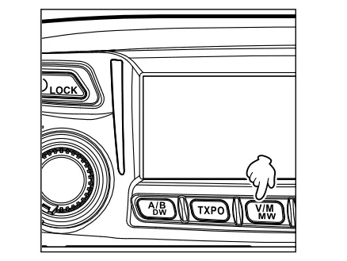</button><figcaption>Figure from page 66</figcaption><dialog id="fig-37"><p>Figure from page 66</p><form method="dialog"><button>Close</button></form></dialog></figure><figure><button aria-label="Enlarge Figure from page 66. 2 Press , ( appears on the left side)." class="zoom" data-dialog="fig-38" type="button">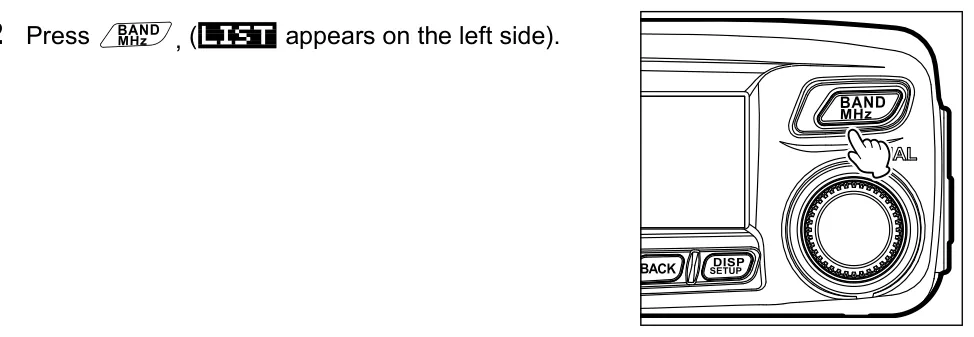</button><figcaption>Figure from page 66. 2 Press , ( appears on the left side).</figcaption><dialog id="fig-38"><p>Figure from page 66. 2 Press , ( appears on the left side).</p><form method="dialog"><button>Close</button></form></dialog></figure><p><strong>Scanning only the specified memory channels</strong>
<strong>1</strong> Select the band to be scanned, and then switch to memory mode.</p>
<p>The Setup menu appears.</p>
<p>The menu list appears.</p>
<p>The menu list appears.
<strong>5</strong> Rotate the DIAL to select <strong>[2 SELECT MEMORY]</strong> .</p>
<p>The display is returned to the previously viewed screen.
<strong>7</strong> Press and hold <strong>[UP]</strong> or <strong>[DWN]</strong> on the microphone for over one second.
Scanning of the specified memory channels begins.</p>
<p>~~<strong>Tips</strong>~~   - Pressing <strong>[UP]</strong> scans in the memory channel numbers in the upward direction, whereas</p>
<p>pressing <strong>[DWN]</strong> scans the memory channel numbers in the downward direction.</p>
<pre><code>  - To cancel scanning, press **[PTT]** on the microphone (this does not put the transceiver into
</code></pre>
<p>transmit mode).</p>
<p><strong>Setting memories to skip</strong></p>
<p>Memory channels which you do not want to receive can be skipped during scanning.</p>
<p>The MEMORY WRITE screen appears.</p>
<p><strong>3</strong> Rotate the DIAL to select the desired memory
channel.</p><figure><button aria-label="Enlarge Figure from page 67. Scanning" class="zoom" data-dialog="fig-39" type="button">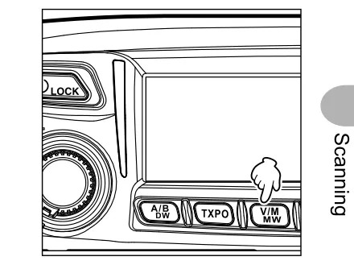</button><figcaption>Figure from page 67. Scanning</figcaption><dialog id="fig-39"><p>Figure from page 67. Scanning</p><form method="dialog"><button>Close</button></form></dialog></figure><figure><button aria-label="Enlarge Figure from page 67" class="zoom" data-dialog="fig-40" type="button">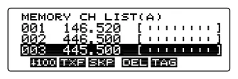</button><figcaption>Figure from page 67</figcaption><dialog id="fig-40"><p>Figure from page 67</p><form method="dialog"><button>Close</button></form></dialog></figure><p>On the right side of the memory channel number
display, “►” blinks. This indicates the “SKIP” state.
The memory channels with this indicator are skipped
during scanning.</p>
<pre><code>  - To set other memory channels, repeat steps 3 to 4.
</code></pre>
<p>The display returns to the previously viewed screen. “►” blinks on the left side of the
memory channel number.</p>
<p>~~<strong>Scanning the programmable memories (PMS)</strong>~~</p>
<p>Using the dedicated PMS memory channels, only the frequencies within the specified
frequency range will be scanned.
Register the desired frequency range to the PMS memory channels in advance.</p>
<p><strong>Registering to the programmable memory channels</strong></p>
<p>9 pairs (LP1/UP1 to LP9/UP9) of frequencies can be entered to the PMS memory
channels.
Register the lower limit of the desired scanning frequency range to the memory channel
“LP” and the upper limit to the memory channel “UP”.
One pair of PMS memories with the same channel number “” (a number from 1 to 9)
are handled as one PMS channel “P”.</p>
<p><strong>Example: Set up a PMS channel by registering a lower frequency of 433.200 MHz</strong></p>
<p><strong>and an upper frequency of 433.700 MHz to the P1 (LP1/UP1) memory</strong>
<strong>channel.</strong>
<strong>1</strong> Switch to VFO mode.
<strong>2</strong> Rotate the DIAL tune to the desired lower limit scan frequency.
Tune in to the frequency to set for the lower limit (433.200 MHz).</p>
<p>~~<strong>Caution</strong>~~ The frequency entered as the lower limit (LP1) must be lower than the upper limit (UP1).</p>
<p>The MEMORY WRITE screen appears.
<strong>4</strong> Rotate the DIAL to select <strong>[LP1]</strong> .</p>
<p>~~<strong>Tip</strong>~~ A name tag may also be assigned to each memory</p>
<p>channel ( page 56).</p>
<p>The display returns to the previous screen and shows the registered frequency and</p><p><strong>7</strong> Rotate the DIAL to tune to the desired upper scanning limit frequency.
Tune in to the frequency to set for the upper limit (433.700 MHz).</p>
<p>The MEMORY WRITE screen appears.
<strong>9</strong> Rotate the DIAL to select <strong>[UP1]</strong> .</p>
<p>~~<strong>Tip</strong>~~ A name tag may also be assigned to each memory channel ( page 56).</p>
<p>The display returns to the previous operating screen, and shows the registered
frequency and memory channel number.</p>
<p><strong>Lower limit frequency LP1</strong> <strong>Upper limit frequency UP1</strong></p>
<p><strong>Scanning the programmable memory channels</strong></p>
<p><strong>2</strong> Recall the upper or lower frequency PMS memory channel.
<strong>3</strong> Press and hold <strong>[UP]</strong> or <strong>[DWN]</strong> on the microphone for over one second.
Programmable memory scanning will begin.</p>
<p>~~<strong>Tips</strong>~~   - To cancel programmable memory scanning, press <strong>[PTT]</strong> on the microphone (this does not</p>
<p>cancel PMS mode).</p>
<p>~~<strong>Caution</strong>~~</p>
<p>If the upper and lower PMS frequencies are not set correctly, the programmable memory scan will not
function.</p>
<p>~~<strong>Tip</strong>~~ You can assign <strong>[SCAN]</strong> to one of the <strong>[P1]</strong> to <strong>[P4]</strong> keys on the microphone using the Setup</p>
<p>MENU <strong>[8 CONFIG]</strong> → <strong>[10 MIC PROGRAM KEY]</strong> . For details on assigning a function to the</p>
<p><strong>[P1]</strong> to <strong>[P4]</strong> keys, see “Setting the program keys on the microphone (10 MIC PROGRAM
KEY)” on page 138. For operations using <strong>[P1]</strong> to <strong>[P4]</strong>, refer to the following.</p>
<p>2 Recall the upper or lower frequency PMS memory channel.</p>
<p>3 Press one of the <strong>[P1]</strong> to <strong>[P4]</strong> keys on the microphone to which [SCAN] is assigned.</p><p>The FTM-100DR/DE transceiver is equipped with a dual receive function (also known as
dual watch (DW)) which periodically checks for signals on the home channel. When a
signal is detected, the transceiver receives on the home channel.</p>
<p><strong>Example: While receiving signals on 446.500 MHz, dual receive checks the home</strong></p>
<p><strong>channel every 5 seconds.</strong></p>
<p>Receiving frequency</p>
<p>Monitors the home channel at
intervals of about 5 seconds.</p>
<p>After receiving a signal on the
home channel, the transceiver
continues receiving until the signal
disappears. About 3 seconds after
the signal disappears, the dual
reception starts again.</p>
<p><strong>Using the dual receive function</strong></p>
<p><strong>1</strong> Rotate the DIAL to tune to a memory channel or VFO receive frequency.</p>
<p>The dual receive function is activated and the home
channel is checked approximately every 5 seconds.
When a signal is detected on the home channel,
reception continues until the signal disappears.
The time interval for checking the home channel
may be changed in the Setup menu <strong>[5 SCAN]</strong> → <strong>[4</strong>
<strong>DUAL WATCH MODE]</strong> (page 71).</p><p><strong>Setting the dual receive restart setting</strong></p>
<p>Set how the transceiver dual receive mode operates after the signal on the home
channel disappears by selecting one of the following 2 options:</p>
<p>(1) Restarts dual receive operation in 3 seconds (AUTO).</p>
<p>(2) Stops dual reception and continues receiving signals on the home channel (HOLD).</p>
<p>The Setup menu appears.</p>
<p>.
The menu list appears.</p>
<p>The setting options appear.
<strong>4</strong> Rotate the DIAL to select the desired setting.
Select “1 AUTO” or “2 HOLD”.</p>
<p>~~<strong>Tip</strong>~~ The default setting: 1 AUTO</p>
<p>Sets the dual reception restart setting and returns the display to the previously
viewed screen.</p>
<p><strong>Setting the channel signal reception time when using the dual reception function</strong></p>
<p>Set the time interval to check the HOME channel when using the dual reception function.</p>
<p>The Setup menu appears.</p>
<p>The menu list appears.</p>
<p>The setting options appear.
<strong>4</strong> Rotate the DIAL to select the time interval to check
the home channel.
Select one from [0.3sec] to [10sec].</p>
<p>~~<strong>Tip</strong>~~ The default setting: 5.0 sec</p>
<p>~~<strong>Supplement</strong>~~ The HOME channel reception time is fixed to</p>
<p>0.3sec.</p><p>receive and display the location information at all times. The location information can be
used for the following purposes:</p>
<p>Save the location information of other stations and note whether or not they are
within communication range.</p>
<p>Refer to the separate GM Function Instruction Manual.</p>
<p>Exchange the location information and messages with other stations, during data
communications.</p>
<p>Refer to the separate APRS Instruction Manual.</p>
<p>~~<strong>What is GPS?</strong>~~</p>
<p>GPS (Global Positioning System) is a space-based satellite navigation system that
provides location and time information anywhere on the earth. It was developed by the
U.S. Department of Defense as a military system. It receives signals from 3 or more of
about 30 GPS satellites flying at an altitude of about 20,000 km, and displays the current
position (latitude, longitude, altitude) within an accuracy of several meters. In addition,
GPS can receive the exact time from the satellite's onboard atomic clock.
The transceiver is equipped with a high-sensitivity 66-channel GPS antenna supporting
QZSS (Quasi-Zenith Satellite System) which shortens measuring time and improves the
accuracy of the location information.</p>
<p>~~<strong>Activating the GPS function</strong>~~</p>
<p>Starts satellite search and displays the icon at the
top left of the screen. Upon acquiring the satellites,
the icon blinks.</p>
<p>~~<strong>Tips</strong>~~   - It may take several minutes to acquire the satellites.</p>
<pre><code>  - When 3 or more satellites cannot be acquired, th ~~e~~ icon
</code></pre>
<p>keeps blinking. Under this circumstance, positioning is
not possible and thus location information cannot be
utilized.</p><p><strong>About GPS positioning</strong>
“Positioning” refers to the calculation of the GPS receiver position from the satellite orbit
information, and the propagation time of the radio waves. For successful positioning, at least 3
satellites must be acquired. If positioning is unsuccessful, move the GPS receiver to an open
space, as far from buildings as possible, where the view of the sky is unobstructed.</p>
<p><strong>● About errors</strong>
Environmental obstacles may cause positioning errors of several hundred meters. Under favorable
conditions, positioning can be performed successfully using only 3 satellites. However, under the
following poor conditions, the positioning accuracy may decrease or cause positioning to fail.</p>
<ul>
<li>
<p>Between high-rise buildings   - Narrow roads between buildings</p>
</li>
<li>
<p>Indoors or under the shade of buildings   - Beneath high-voltage lines or overhead structures</p>
</li>
<li>
<p>Between trees in a forest or woods   - Inside a tunnel or underground</p>
</li>
<li>
<p>When used behind a solar energy-reflecting glass   - Areas with strong magnetic fields</p>
</li>
</ul>
<p><strong>● When the GPS is not in use for an extended period of time</strong>
Locating satellites may take several minutes when using the GPS function for the first time after
purchase or when you have not used the transceiver for an extended time. Similarly, when several
hours have passed since turning off the transceiver, a several minute wait may be required in order
to locate the satellites.</p>
<p>~~<strong>Checking the satellite acquisition status</strong>~~</p>
<p>The satellites acquired at the current location and the strength of the signals can be
observed on the radar-like screen.</p>
<p>Displays the radar-like GPS screen, and the acquired
satellite numbers and signal strength using a chart.</p>
<ul>
<li>
<p>indicates non-acquired satellites, whereas</p>
</li>
<li>
<p>indicates acquired satellites.
The location information of your station (longitude
and latitude) is also shown above the signal strength
chart.</p>
<ul>
<li>In the Setup menu <strong>[1 DISPLAY]</strong> → <strong>[4 GPS INFORMATION]</strong>, you can change the display
above the signal strength chart to the frequency display.</li>
</ul>
</li>
</ul><p>~~<strong>Displaying the location information</strong>~~</p>
<p><strong>Displaying your current location information</strong></p>
<p>On the normal screen, the current location information
of your station is displayed on the left side of the
frequency display. The screen displays the compass
indicating the direction you are heading in and your
station movement speed.</p>
<p><strong>Displaying location information of the received station in digital mode</strong></p>
<p>In C4FM digital V/D mode, the GPS location information and voice signals are
transmitted simultaneously. Therefore, the direction and location of the received station
can be calculated and displayed in real-time, even while communicating.</p>
<p>Displays the current location information of the
received station on the left side of the frequency
display. The screen displays the compass indicating
the direction to the received station and the distance
to the received station.</p>
<p>~~<strong>Tip</strong>~~</p>
<p>In the Setup menu <strong>[10 APRS]</strong> → <strong>[11 APRS UNITS]</strong>, you can change the display unit for each type of
data.</p>
<p>~~<strong>Saving location information (GPS Log Function)</strong>~~</p>
<p>Your location information can be periodically saved onto a micro-SD memory card.</p>
<p>Displays the Setup menu.</p>
<p>.
Displays the menu list.</p>
<p>.
Displays the screen for switching the GPS log
function between ON and OFF and selecting the
interval time for saving location points.</p>
<p>~~<strong>Tip</strong>~~ When “OFF” is selected, the location information is not</p>
<p>saved.</p><p>.</p>
<p>~~<strong>Tip</strong>~~ The default setting: 2 OFF</p>
<p><strong>5</strong> Rotate the DIAL to select the interval for saving the location information.
“1 sec”, “2 sec”, “5 sec”, “10 sec”, “30 sec”, “60 sec”</p>
<p>~~<strong>Tip</strong>~~ The default setting: 10 sec</p>
<p>Sets the interval for saving the location information and returns the display to the</p>
<p>Starts saving the location information at the set interval.</p>
<p>~~<strong>Tips</strong>~~</p>
<ul>
<li>
<p>The location information is periodically saved until the power to the transceiver is switched OFF or
when “OFF” is selected in step 4.
Saving of location information resumes under the same file name when the transceiver is turned
OFF and then ON again within the same day, or when the saving interval is selected again in step 5.</p>
</li>
<li>
<p>The data is saved under the filename “GPSyymmdd.log”.
The portion “yymmdd” indicates the saving start time in “yy” (year), “mm” (month), and “dd” (day).</p>
</li>
</ul>
<p>~~<strong>Tip</strong>~~ Refer to “Removing the micro-SD memory card” on page 32.
<strong>3</strong> Insert the micro-SD memory card into the personal computer using an appropriate
memory card reader.
<strong>4</strong> Open the “FTM100D” folder located on the micro-SD memory card.
<strong>5</strong> Open the “GPSLOG” folder.
The data is saved under the filename “GPSyymmdd.log”.
The portion “yymmdd” indicates the saving start time in “yy” (year), “mm” (month),
and “dd” (day).
<strong>6</strong> Import the data into the mapping software.
The route will be displayed on the map.</p>
<p>~~<strong>Tips</strong>~~</p>
<ul>
<li>
<p>Refer to the operating manual of the mapping software for instructions on how to import and display
the route data on the map.</p>
</li>
<li>
<p>The location information can also be used by connecting the transceiver directly to a computer. See
“Connecting an external device” on page 108.</p>
</li>
</ul><p>~~<strong>Other settings</strong>~~</p>
<ul>
<li><strong>●Changing the geodetic reference system</strong>
Set the geodetic reference in the Setup menu, <strong>[8 CONFIG]</strong> → <strong>[16 GPS DATUM]</strong> .
You can select the geodetic reference system-positioning standard:
“1 WGS-84”: Use the global geodetic reference system for positioning. This is the</li>
</ul>
<p>standard used all around the world.
“2 TOKYO MEAN”: Use the Japanese geodetic reference system for positioning.</p>
<p>Reduces the chance of inaccuracies while positioning in Japan
(Tokyo).</p>
<p>~~<strong>Tips</strong>~~</p>
<ul>
<li>
<p>When the geodetic reference system is changed to “TOKYO MEAN”, the location information will
deviate by about 400 meters.</p>
</li>
<li>
<p>For normal usage, keep it set to “WGS-84”.</p>
</li>
<li>
<p><strong>●Changing the time zone</strong>
Set the time zone differential in the Setup menu <strong>[8 CONFIG]</strong> → <strong>[3 TIME ZONE]</strong> .
The time difference with the UTC (Coordinated Universal Time) can be changed in
30-minute steps.</p>
</li>
</ul><p>For amateur radios, there are several functions that display location information using
GPS, however the APRS is a data communication system that transmits data such as
location information and messages using the format developed by Bob Bruninga of
WB4APR.
Upon receiving an APRS signal from another station, information such as: the direction
and distance to that station from your station; the speed of the station; the identity and
other information may be displayed on the screen of your transceiver.</p>
<p>When using the APRS function, station information such as the call sign and symbol of
your own station need to be set in the APRS initial setup menus.
For details, refer to the APRS Instruction Manual (download from Yaesu website).</p><p>The GM function automatically monitors for any other stations with the GM function
in operation on the same frequency, or stations transmitting in DN mode, within
communication range. The GM function then displays the acquired information,
including the direction and distance, on the screen for each detected call sign.
In addition to notifying you of the GM group members within your communication range,
the GM function also displays the relative positions of all the members in the group on
the transceiver screen.
Furthermore, the GM function may also be used to exchange data such as messages
and images between group members.</p>
<p>~~<strong>Tips</strong>~~</p>
<ul>
<li>
<p>The GM function does not work while in the analog mode. When the GM function is activated, the
operating band automatically switches to DN mode.</p>
</li>
<li>
<p>When sending an image with the GM function in operation, the operating band automatically
switches to FR mode (high-speed data communication mode). Upon completion of the data
transmission, the mode automatically reverts to the original V/D mode (simultaneous voice/data
communication mode).</p>
</li>
</ul>
<p>~~<strong>How to use the GM function</strong>~~</p>
<p>The GM function enables the display of all stations operating the GM function (up to 24
stations).
For detailed information about the operation and functions of the GM mode, refer to the
separate GM Function Instruction Manual (download from Yaesu website).</p><figure><button aria-label="Enlarge Figure from page 78" class="zoom" data-dialog="fig-41" type="button">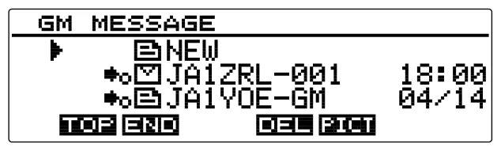</button><figcaption>Figure from page 78</figcaption><dialog id="fig-41"><p>Figure from page 78</p><form method="dialog"><button>Close</button></form></dialog></figure><ul>
<li><strong>●Displaying all the stations that are transmitting in the GM function</strong></li>
</ul>
<p>communication range.</p>
<p>range.</p>
<p>range.</p><figure><button aria-label="Enlarge Figure from page 79" class="zoom" data-dialog="fig-42" type="button">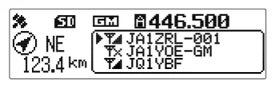</button><figcaption>Figure from page 79</figcaption><dialog id="fig-42"><p>Figure from page 79</p><form method="dialog"><button>Close</button></form></dialog></figure><p>The WIRES-X is a system that links to other users via the Internet. This function enables
users to communicate with other users world wide, regardless of the distance.
When the transceiver is connected to WIRES-X, the call sings of other stations and
rooms on the WIRES-X are displayed.</p>
<p>To establish a WIRES-X node station, the WIRES-X connection kit “HRI-200” sold
separately is required. For details, refer to the separate WIRES-X Instruction Manual
(download from the Yaesu website).</p><p>~~<strong>Using the tone squelch function</strong>~~</p>
<p>This radio is equipped with the CTCSS (Continuous Tone-coded Squelch System which
allows audio to be heard only when receiving signals containing the same frequency
tone as the tone that has been set in the tone squelch menu. By matching the tone
frequency with the partner station in advance, a quiet standby monitoring is possible.</p>
<p><strong>Selecting the tone frequency</strong></p>
<p>The tone frequency can be selected from 50 frequencies (from 67.0 Hz to 254.1 Hz).</p>
<p>.
The menu list appears.</p>
<p><strong>4</strong> Rotate the DIAL to select the desired frequency.</p>
<p>~~<strong>Tip</strong>~~ The default setting: 100.0 Hz</p>
<p>Sets the tone frequency and returns the display to the previously viewed screen.</p><p><strong>Using the tone squelch function</strong></p>
<p>.
The menu list appears.</p>
<p>.</p>
<p>for over one second.</p>
<p>~~<strong>Tips</strong>~~   - Rotating the DIAL changes the squelch type in the</p>
<p>following order:
“OFF”, “TONE ENC”, “TONE SQL”, “REV TONE”,
“DCS”, “PR FREQ”, “PAGER”, “DCS ENC”<em>, “TONE
DCS”</em>, “DCS TSQL”*
*To display these squelch types, from the Setup menu,
select <strong>[4 SIGNALING]</strong> → <strong>[9 SQL EXPANSION]</strong>
followed by “1 ON”.</p>
<pre><code>  - Instead of following the steps 1 to 4 above, you can
</code></pre>
<p>change the squelch type by pressing and holding</p>
<p>for over one second.</p>
<p>only when receiving tone signals of the set frequency.</p>
<p>~~<strong>Tip</strong>~~</p>
<p>A bell tone (beep) may be set to sound when signals containing a corresponding CTCSS tone are
received. See “Notification of incoming calls from partner stations using the bell function” on page
89.</p><p><strong>Transmitting tone signals</strong></p>
<p>.
The menu list appears.</p>
<p>.</p>
<p>for over one second.</p>
<p>~~<strong>Tips</strong>~~   - Rotating the DIAL changes the squelch type in the</p>
<p>following order:
“OFF”, “TONE ENC”, “TONE SQL”, “REV TONE”,
“DCS”, “PR FREQ”, “PAGER”, “DCS ENC”<em>, “TONE
DCS”</em>, “DCS TSQL”*
*The squelch types may also be selected from the
Setup menu, select <strong>[4 SIGNALING]</strong> → <strong>[9 SQL</strong>
<strong>EXPANSION]</strong> followed by “1 ON”.</p>
<pre><code>  - Instead of following the steps 1 to 4 above, the squelch
</code></pre>
<p>type may be selected by pressing and holding
for over one second.</p>
<p><strong>5</strong> Press <strong>[PTT]</strong> on the microphone.
While pressing and holding <strong>[PTT]</strong>, the signal containing the designated tone is
transmitted.</p><p>~~<strong>Using the digital code squelch function</strong>~~</p>
<p>This radio is equipped with a DCS (Digital Coded Squelch) function that allows audio to
be heard only when signals containing the corresponding DCS code are received. By
matching the DCS code with the partner stations beforehand, a quiet receive standby is
possible.</p>
<p><strong>Selecting the DCS code</strong></p>
<p>The DCS code can be selected from 104 digital codes between 023 and 754.</p>
<p>.
The menu list appears.</p>
<p>.</p>
<p><strong>4</strong> Rotate the DIAL to select the desired DCS code.</p>
<p>~~<strong>Tip</strong>~~ The default setting: 023</p>
<p>Sets the DCS code and returns the display to the previously viewed screen.</p><p><strong>Using the DCS function</strong></p>
<p>.
The menu list appears.</p>
<p>.</p>
<p>over one second.</p>
<p>~~<strong>Tips</strong>~~   - Rotating the DIAL changes the squelch type in the</p>
<p>following order:
“OFF”, “TONE ENC”, “TONE SQL”, “REV TONE”,
“DCS”, “PR FREQ”, “PAGER”, “DCS ENC”<em>, “TONE
DCS”</em>, “DCS TSQL”*
*To display these squelch types, from the Setup menu,
select <strong>[4 SIGNALING]</strong> → <strong>[9 SQL EXPANSION]</strong>
followed by “1 ON”.</p>
<pre><code>  - Instead of following the steps 1 to 4 above, the squelch
</code></pre>
<p>type may be changed by pressing and holding
for over one second.</p>
<p>The squelch opens only when receiving a signal containing the corresponding DCS
code.</p>
<p>~~<strong>Tip</strong>~~</p>
<p>A bell tone (beep) may be set to sound when signals containing a corresponding DCS code are
received. See “Notification of incoming calls from partner stations using the bell function” on page
89.</p><p>~~<strong>Using the new pager function</strong>~~</p>
<p>Use the pager code consisting of 2 CTCSS tones to exchange communications with
specified stations.</p>
<p><strong>Setting the transceiver pager code</strong></p>
<p>.
The menu list appears.</p>
<p>The pager setting screen appears.</p>
<p>.
The code blinks.</p>
<p>Select the first part of the code from 01 to 50.</p>
<p>~~<strong>Tip</strong>~~ The default setting: 05</p>
<p>.
The code blinks.</p>
<p>Select the second part of the code from 01 to 50.</p>
<p>~~<strong>Tip</strong>~~ The default setting: 47</p><p>Sets your station pager code and returns the display to the previously viewed
screen.</p>
<p>~~<strong>Tips</strong>~~</p>
<ul>
<li>
<p>Even if the first and second parts of the pager code are reversed, for example, [47 05] from [05 47],
they are still recognized as the same code.</p>
</li>
<li>
<p>If multiple stations set the same pager code, they can be called simultaneously.</p>
</li>
</ul>
<p><strong>Activating the new pager function</strong></p>
<p>.
The menu list appears.</p>
<p>.</p>
<p><strong>4</strong> Rotate the DIAL to select <strong>[PAGER]</strong>, then press
for over one second.</p>
<p>~~<strong>Tips</strong>~~   - Rotating the DIAL changes the squelch type in the</p>
<p>following order:
“OFF”, “TONE ENC”, “TONE SQL”, “REV TONE”,
“DCS”, “PR FREQ”, “PAGER”, “DCS ENC”<em>, “TONE
DCS”</em>, “DCS TSQL”*
*To display these squelch types, from the Setup menu,
select <strong>[4 SIGNALING]</strong> → <strong>[9 SQL EXPANSION]</strong>
followed by “1 ON”.</p>
<pre><code>  - Instead of following the steps 1 to 4 above, the squelch
</code></pre>
<p>for over one second.</p><p><strong>Calling a specific station</strong></p>
<p>.
The menu list appears.</p>
<p>The code setting screen appears.</p>
<p>.
The code blinks.</p>
<p>Select the first part of the code from 01 to 50.</p>
<p>~~<strong>Tip</strong>~~ The default setting: 05</p>
<p>.
The code blinks.</p>
<p>Select the second part of the code from 01 to 50.</p>
<p>~~<strong>Tip</strong>~~ The default setting: 47</p>
<p>Sets the partner station code and returns the display to the previously viewed
screen.</p>
<p><strong>9</strong> See “Activating the new pager function” on page 87 to activate the PAGER
function.
<strong>10</strong> Press <strong>[PTT]</strong> on the microphone.
Calls the partner station</p><p>~~<strong>Notification of incoming calls from partner stations using the bell</strong>~~
~~<strong>function</strong>~~</p>
<p>While communicating using the tone squelch, DCS, or new pager function, a beep may
be programmed to sound when a signal containing the corresponding code is received.</p>
<p>.
The menu list appears.</p>
<p><strong>4</strong> Rotate the DIAL to select the desired number of
successive bell rings.
“1 OFF”, “2 1 time”, “3 3 times”, “4 5 times”, “5 8
times”, “6 CONTINUOUS”</p>
<p>~~<strong>Tip</strong>~~ The default setting: 1 OFF</p>
<p>Sets the selected beep setting and returns the display to the previously viewed
screen.</p><p>~~<strong>Other squelch functions</strong>~~</p>
<ul>
<li>
<p><strong>●Reverse tone</strong>
In Setup menu, select <strong>[4 SIGNALING]</strong> → <strong>[4 SQL TYPE]</strong> followed by <strong>[REV TONE]</strong> .
Using the Reverse Tone System, a tone is transmitted when there is no audio. When
audio is transmitted on the signal, the tone is not transmitted.
The reverse tone frequency may be set in 100Hz intervals from 300Hz – 3000Hz
(default 1500Hz) using the set-up menu <strong>[4 SIGNALING]</strong> → <strong>[7 PRG REV TONE]</strong></p>
</li>
<li>
<p><strong>● User Programmed Reverse CTCSS Decoder</strong>
In Setup menu, select <strong>[4 SIGNALING]</strong> → <strong>[4 SIGNALING]</strong> → <strong>[PR FREQ]</strong> .
The user programmable Reverse CTCSS Decoder will mute the FTM-100DR/DE
receiver when a signal containing a matching CTCSS tone is received.</p>
</li>
<li>
<p><strong>●DCS transmission</strong>
From the Setup menu, select <strong>[4 SIGNALING]</strong> → <strong>[4 SQL TYPE]</strong> followed by <strong>[DCS</strong>
<strong>ENC]</strong> .
The DCS code is sent during transmission.
To use this function, from the Setup menu, select <strong>[4 SIGNALING]</strong> → <strong>[9 SQL</strong>
<strong>EXPANSION]</strong> followed by “1 ON”.</p>
</li>
<li>
<p><strong>●CTCSS tone transmission / DCS code tone reception</strong>
From the Setup menu, select <strong>[4 SIGNALING]</strong> → <strong>[4 SQL TYPE]</strong> followed by <strong>[TONE</strong>
<strong>DCS]</strong> .
The CTCSS tone is sent during transmission. In standby mode, the receiver waits for
the matching DCS code signal to open the receiver audio.
To use this function, from the Setup menu, select <strong>[4 SIGNALING]</strong> → <strong>[9 SQL</strong>
<strong>EXPANSION]</strong> followed by “1 ON”.</p>
</li>
<li>
<p><strong>●DCS code transmission / CTCSS tone reception</strong>
From the Setup menu, select <strong>[4 SIGNALING]</strong> → <strong>[4 SQL TYPE]</strong> followed by <strong>[DCS</strong>
<strong>TSQL]</strong> .
The DCS code is sent during transmission. In standby mode, the receiver waits for
the matching CTCSS tone signal to open the receiver audio.
To use this function, from the Setup menu, select <strong>[4 SIGNALING]</strong> → <strong>[9 SQL</strong>
<strong>EXPANSION]</strong> followed by “1 ON”.</p>
</li>
</ul><p>DTMF tones (Dual Tone Multi Frequencies) are the tones you hear when dialing from
a telephone keypad. The FTM-100DR/DE transceiver can transmit the DTMF codes by
using the keys on the microphone or recalling registered numbers from memories.
The maximum of 16-digit DTMF codes can be registered in up to 9 memory channels.
It is convenient to register telephone patch numbers, and network linking sequences to
the DTMF memory channels.</p>
<p><strong>Registering the DTMF code</strong></p>
<p>The Setup menu appears.</p>
<p>.
The menu list appears.</p>
<p>The DTMF memory screen appears.
<strong>4</strong> Rotate the DIAL to select the desired memory
channel to register the DTMF code, and then press</p>
<p>.
The cursor jumps to the left end of [ ❘ ❘ ❘ ❘ ❘ ❘ ❘ ❘ ]
displayed on the right.</p>
<p>the DTMF code.
<strong>6</strong> Repeat step 5.</p>
<p>appears on the upper side).</p>
<p>the upper side).</p><p>Sets the DTMF code and returns the display to the previously viewed screen.</p>
<p><strong>Transmitting the registered DTMF code</strong></p>
<p>The Setup menu appears.</p>
<p>.
The menu list appears.</p>
<p>The AUTO DIALER screen appears.
<strong>4</strong> Rotate the DIAL to select “1 ON”.
Rotating the DIAL changes the function between “1
ON” and “2 OFF”.</p>
<p>side of the screen.</p>
<p>microphone to input the channel number to which the DTMF code is registered.
The DTMF code sequence is automatically transmitted.
<strong>7</strong> Release <strong>[PTT]</strong> .
While transmitting the DTMF code, transmission status is sustained even when</p>
<p><strong>[PTT]</strong> is pressed.</p>
<p><strong>Transmitting the DTMF code manually</strong></p>
<p>The Setup menu appears.</p>
<p>.
The menu list appears.</p>
<p>The AUTO DIALER screen appears.</p><p><strong>4</strong> Rotate the DIAL to select “2 OFF”.
Rotating the DIAL changes the function between “1
ON” and “2 OFF”.</p>
<p>side of the screen.</p>
<p><strong>[</strong> ✽ <strong>]</strong>, <strong>[#]</strong>, or <strong>[A]</strong> to <strong>[D]</strong> ), sequentially on the microphone keypad.
<strong>7</strong> Release <strong>[PTT]</strong> .
While transmitting the DTMF code, transmission status is sustained even when</p>
<p><strong>[PTT]</strong> is pressed.</p><p>~~<strong>Using the APO function</strong>~~</p>
<p>When the APO (Automatic Power-off) function is set to ON, the transceiver automatically
turns off if no operation is performed for the designated time. A beep sounds about one
minute before the transceiver turns off. For example, when connecting the transceiver to
your car battery, the APO function prevents accidental draining of the battery.</p>
<p>The Setup menu appears.</p>
<p>.
The menu list appears.</p>
<p>Displays the screen where the remaining time until
the power turns off is set.
<strong>4</strong> Rotate the DIAL to select the desired remaining time
from the following 14 options.
“0.5 hour”, “1.0 hour”, “1.5 hour”, “2.0 hour”, “3.0
hour”, “4.0 hour”, “5.0 hour”, “6.0 hour”, “7.0 hour”,
“8.0 hour”, “9.0 hour”, “10.0 hour”, “11.0 hour”, “12.0
hour”</p>
<p>~~<strong>Tip</strong>~~ When “OFF” is selected, the APO function does not</p>
<p>activate.</p>
<p>The APO function is activated and the display returns to the previously viewed
screen.</p><p>~~<strong>Using the TOT function</strong>~~</p>
<p>By setting the TOT (Timeout Timer) function to ON, the transceiver automatically
returns to receive after a transmission continues for the designated time. A beep sounds
about 10 seconds before the transceiver returns to receive mode. The TOT prevents
unintentional transmissions, interference to other communications and excessive battery
power consumption.</p>
<p>The Setup menu appears.</p>
<p>.
The menu list appears.</p>
<p>The screen is displayed where the time remaining
until the transceiver returns to the receive mode may
be set.
<strong>4</strong> Rotate the DIAL to select the desired remaining time
from the following 8 options.
“1 min”,“2 min”, “3 min”, “5 min”, “10 min”, “15 min”,
“20 min”, “30 min”</p>
<p>~~<strong>Tip</strong>~~ When “OFF” is selected, the TOT function does not</p>
<p>activate.</p>
<p>The TOT function is activated and the display returns to the previous operating
screen.</p><p>While operating in digital mode, you can receive messages (text data) or images.
Transmitted and received messages and images are all saved in the common list.</p>
<p>~~<strong>Tips</strong>~~</p>
<p>There are three types of digital mode as follows. For details, see “Selecting communication mode” on
page 39.</p>
<ul>
<li>
<p>V/D mode (simultaneous voice/data communication mode)</p>
</li>
<li>
<p>Voice FR mode (voice full rate mode)</p>
</li>
<li>
<p>Data FR mode (high speed data communication mode)</p>
</li>
</ul>
<p><strong>Viewing the message or image list</strong></p>
<p>You can display the list of transmitted and received data. You can also select the desired
data to check it.</p>
<p>Displays “LOG SELECT” on the screen.</p>
<p>MESSAGE” screen appears.</p>
<p>screen appears and the images and time stamps</p>
<p>each time switches the display.</p><figure><button aria-label="Enlarge Figure from page 96" class="zoom" data-dialog="fig-43" type="button"></button><figcaption>Figure from page 96</figcaption><dialog id="fig-43"><p>Figure from page 96</p><form method="dialog"><button>Close</button></form></dialog></figure><figure><button aria-label="Enlarge Figure from page 96" class="zoom" data-dialog="fig-44" type="button">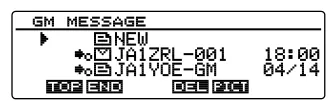</button><figcaption>Figure from page 96</figcaption><dialog id="fig-44"><p>Figure from page 96</p><form method="dialog"><button>Close</button></form></dialog></figure><figure><button aria-label="Enlarge Figure from page 96" class="zoom" data-dialog="fig-45" type="button">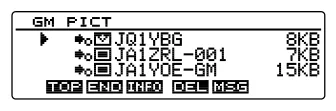</button><figcaption>Figure from page 96</figcaption><dialog id="fig-45"><p>Figure from page 96</p><form method="dialog"><button>Close</button></form></dialog></figure><ul>
<li>
<p>Icons on the left side of the LOG list indicate the following.</p>
<ul>
<li>The data most recently received is on the top of the list.</li>
</ul>
</li>
</ul>
<p>When there are many files, it may take a while to jump to the bottom of the list. Press <strong>[PTT]</strong></p>
<p>Displays the selected data.</p>
<p>The display returns to the previously viewed operating screen.</p>
<p>~~<strong>Deleting messages or images</strong>~~</p>
<p>You can delete unnecessary messages and images from the micro-SD memory card.</p>
<p><strong>Deleting data from the content display screen</strong></p>
<p><strong>1</strong> Display the data you want to delete.</p>
<p>Displays the confirmation screen.</p><figure><button aria-label="Enlarge Figure from page 97. Convenient Functions" class="zoom" data-dialog="fig-46" type="button">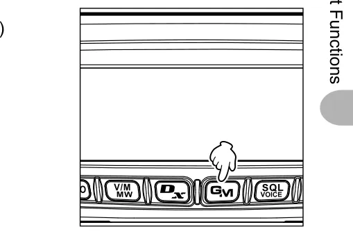</button><figcaption>Figure from page 97. Convenient Functions</figcaption><dialog id="fig-46"><p>Figure from page 97. Convenient Functions</p><form method="dialog"><button>Close</button></form></dialog></figure><p>Starts the deletion process.
After completing deletion, the display returns to the
data list screen.
Rows move up by one.</p>
<p><strong>Deleting data from the list</strong></p>
<p><strong>1</strong> From the data list, select the data you want to delete by rotating the DIAL.</p>
<p>Displays the confirmation screen.</p>
<p>Starts the deletion process.
After completing deletion, the display returns to the
data list screen.
Rows move up by one.</p>
<p>~~<strong>Downloading messages or images</strong>~~</p>
<p>When there is a message or image sent in digital mode from a station on the same
operating frequency, the content of the message or image is displayed for a certain
period of time on the transceiver screen. Message data can be downloaded to the
memory of the transceiver and image data can be downloaded to the micro-SD memory
card inserted into the transceiver.</p>
<p><strong>When receiving a message</strong> <strong>When receiving an image</strong></p>
<p>~~<strong>Tips</strong>~~</p>
<ul>
<li>
<p>While receiving an image, sender’s call sign and “&gt;&gt;&gt;” appear to indicate the reception progress of
the data.</p>
</li>
<li>
<p>If the message cannot be downloaded successfully due to unsupported file format or other reasons,
“Not Completed” appears.</p>
</li>
<li>
<p>If the image data cannot be downloaded to the micro-SD memory card successfully due to
insufficient memory space, “Insufficient SD's Memory” appears.</p>
</li>
</ul><p>~~<strong>Sending massages or images</strong>~~</p>
<p>Send messages or images from the transceiver. Sent data can be viewed by all stations
operating in digital mode on the same frequency.
There are the following three ways for sending messages or images.
(1) Creating and sending a new message
(2) Replying to the sender of the downloaded message or image data
(3) Forwarding the downloaded message or image data</p>
<p><strong>Creating and sending a new message</strong></p>
<p>Create a new message and send.</p>
<p>Displays “LOG SELECT” screen.</p>
<p>Displays the “GM MESSAGE” screen.</p>
<p>Displays the message entry screen.
<strong>5</strong> See “Input characters” on page 20 to input a message.</p><figure><button aria-label="Enlarge Figure from page 99" class="zoom" data-dialog="fig-47" type="button">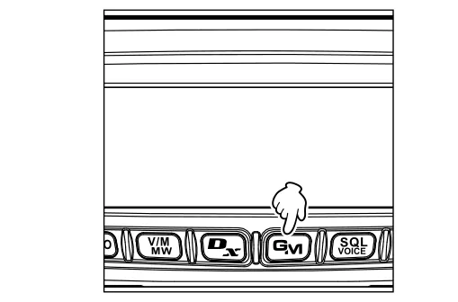</button><figcaption>Figure from page 99</figcaption><dialog id="fig-47"><p>Figure from page 99</p><form method="dialog"><button>Close</button></form></dialog></figure><p>Sends the message.</p>
<p>When message transmission completes, “Completed” appears and then the screen
returns to the message list screen. The tag of the transmitted message is added to
the top of the list.</p>
<p><strong>Using routine message</strong></p>
<p>The following 19 routine messages are stored on the transceiver at the time of factory</p>
<table>
<thead>
<tr>
<th>t. QRM</th>
<th>Good night</th>
</tr>
</thead>
<tbody>
<tr>
<td>QRM</td>
<td></td>
</tr>
<tr>
<td>QRP</td>
<td></td>
</tr>
<tr>
<td>QRT</td>
<td></td>
</tr>
<tr>
<td>QRX</td>
<td></td>
</tr>
<tr>
<td>QRZ</td>
<td></td>
</tr>
<tr>
<td>QSY</td>
<td></td>
</tr>
<tr>
<td>Good morning</td>
<td></td>
</tr>
<tr>
<td>Good job</td>
<td></td>
</tr>
<tr>
<td>Good day</td>
<td></td>
</tr>
<tr>
<td>Good night</td>
<td></td>
</tr>
<tr>
<td>Send messages</td>
<td></td>
</tr>
<tr>
<td>Send pictures</td>
<td></td>
</tr>
<tr>
<td>on my way</td>
<td></td>
</tr>
<tr>
<td>wait for you</td>
<td></td>
</tr>
<tr>
<td>Pick me up</td>
<td></td>
</tr>
<tr>
<td>Thank you</td>
<td></td>
</tr>
<tr>
<td>OK</td>
<td></td>
</tr>
<tr>
<td>urgent</td>
<td></td>
</tr>
<tr>
<td>Good evening</td>
<td></td>
</tr>
</tbody>
</table>
<p><strong>1</strong> Follow the steps 1 through 3 of “Creating and sending a new message” on page
99 to display the message details screen.</p>
<p>The routine messages are displayed at the top of
the screen.</p>
<p>~~<strong>Tip</strong>~~ For “01” to “10”, you can register a message</p>
<p>comprising up to 16 letters. See “Registering routine
messages” on page 101.</p>
<p>Displays the selected routine message in the
message entry field.</p>
<p>Hides the routine message display field at the top
of the screen</p><figure><button aria-label="Enlarge Figure from page 100" class="zoom" data-dialog="fig-48" type="button">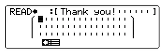</button><figcaption>Figure from page 100</figcaption><dialog id="fig-48"><p>Figure from page 100</p><form method="dialog"><button>Close</button></form></dialog></figure><figure><button aria-label="Enlarge Figure from page 100" class="zoom" data-dialog="fig-49" type="button">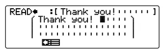</button><figcaption>Figure from page 100</figcaption><dialog id="fig-49"><p>Figure from page 100</p><form method="dialog"><button>Close</button></form></dialog></figure><figure><button aria-label="Enlarge Figure from page 100" class="zoom" data-dialog="fig-50" type="button">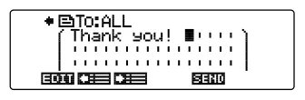</button><figcaption>Figure from page 100</figcaption><dialog id="fig-50"><p>Figure from page 100</p><form method="dialog"><button>Close</button></form></dialog></figure><p><strong>5</strong> To add letters to the message, input letters following steps 4 through 5 of “Creating
and sending a new message” on page 99.</p>
<ul>
<li><strong>●Registering routine messages</strong>
You can register up 10 routine messages using a maximum of 80 characters.
Messages you registered can be selected and used in the same way as the 43 prepared
routine messages.
<strong>1</strong> Follow steps 1 to 5 in “Creating and sending a new message” on page 99 to input
a text message.</li>
</ul>
<p>~~<strong>Tip</strong>~~ Alphanumeric characters including symbols can be used.
<strong>2</strong> Press</p>
<p>screen.</p>
<p>~~<strong>Tip</strong>~~ You can select a number from “01” to “10”.
Registers the text as a routine message and closes
the routine message field.</p>
<p>~~<strong>Tips</strong>~~   - If you register a new message to a number where a</p>
<p>message already have registered, the old message
is overwritten.</p>
<p>appears on the upper side).</p><p><strong>Replying to the sender of the downloaded message or image data</strong></p>
<p>Reply to the sender of the checked message or image data.</p>
<p>Displays the “LOG SELECT” screen.</p>
<p>MESSAGE” screen appears.</p>
<p>screen appears.</p>
<p>Displays the selected data.
<strong>[MESSAGE]                  [PICT]</strong></p>
<p>message.</p>
<p>~~<strong>Tips</strong>~~   - When replying, the call sign of the MESSAGE/PICT data sender is automatically specified for</p>
<p>“to:”.</p>
<pre><code>  - In other words, even if you specify the data sender’s call sign (name) for “to:” to reply, other
</code></pre>
<p>stations operating GM on the same frequency can still view the message or image as long as
they are within the communication range.</p>
<p>Displays the entire message.</p>
<p>Sends the message. When message or image transmission completes, “Completed”
appears and then the screen returns to either the message list screen or image list
screen.</p><p><strong>Forwarding the downloaded message or image data</strong></p>
<p>You can forward the checked message or image data.</p>
<p>Displays the “LOG SELECT” screen.</p>
<p>MESSAGE” screen appears.</p>
<p>screen appears.</p>
<p>“SEND "to: ALL"” appears.</p>
<p>Sends the message or image. When message or
image transmission completes, “Completed” appears
and then the screen returns to either the message list
screen or image list screen.</p><p>The memory channels and settings in the set-up menu can be copied to another FTM100DR/DE transceiver. This is convenient, for example, to configure the transceiver to
match to the settings of stations that you communicate with frequently.</p>
<p>~~<strong>Using a micro-SD memory card</strong>~~</p>
<p>The data files saved in the FTM-100DR/DE can be selected and copied to a micro-SD
memory card which may then be used to transfer the data to other FTM-100DR/DE
transceivers.</p>
<p><strong>Copying data to a micro-SD memory card</strong>
<strong>1</strong> Insert a micro-SD memory card into the transceiver.</p>
<p>~~<strong>Tip</strong>~~ See “Inserting a micro-SD memory card” on page 32.</p>
<p>The menu list appears.</p>
<p>.
Displays the screen where you can select the copy
direction.</p>
<p>.
The screen is displayed where the type of data to be
transferred is selected.</p>
<p>“1 ALL”: Copies all data in the transceiver.
“2 MEMORY”: Copies only information registered to the memory channels.
“3 SETUP”: Copies only settings in the Setup menu.</p>
<p>then press</p><p>.
The data selected in step 6 is copied to the micro-SD
memory card. While copying, “Writing…” appears,
and when completing, it disappears.</p>
<p>The display returns to the previously viewed operating screen.</p>
<p><strong>Copying data from the micro-SD memory card</strong>
<strong>1</strong> Insert the micro-SD memory card into the FTM-100DR/DE transceiver from which
data is to be copied, and then copy the data to the card.
<strong>2</strong> Remove the micro-SD memory card and insert it into the FTM-100DR/DE
transceiver to which the data is to be copied.</p>
<p>The Setup menu appears.</p>
<p>The menu list appears.</p>
<p>.
Displays the screen where the copy direction may be
selected.</p>
<p>Displays the screen where the data type may be
selected.</p>
<p>1 ALL: Copies all data in the transceiver.
2 MEMORY: Copies only information registered to
the memory channels.
3 SETUP: Copies only settings in the Setup menu.
4 MEMORY (Import FTM-400DR):
Copies the memory channel data saved on
the micro-SD memory card of the FTM-400DR
transceiver.</p>
<p>~~<strong>Caution</strong>~~ Insert the micro-SD memory card to which the FTM
400DR transceiver memory channel data is copied,
into the transceiver.</p><p>.
The data selected in step 7 is copied from the
micro-SD memory card. While copying, “Reading…”
appears, and when completing, it disappears.</p>
<p>~~<strong>Using the clone function</strong>~~</p>
<p>Using the clone function, all data saved in the transceiver can be copied directly to other
FTM-100 transceivers.</p>
<p><strong>Example: When using the clone function in two FTM-100DR/DE transceivers</strong>
<strong>1</strong> Turn off the both transceivers.</p>
<p><strong>3</strong> Turn on both transceivers.</p>
<p>The Setup menu appears.</p>
<p>The menu list appears.</p>
<p>.
Displays the screen where the copy direction may be
selected.
<strong>7</strong> On the transceiver from which data is to be copied,</p>
<p>The confirmation screen appears.
<strong>8</strong> On the transceiver to which data is to be copied,</p>
<p>The confirmation screen appears.
<strong>9</strong> On the transceiver to which data is to be copied</p><p>The data copy starts.
When data copy completes, “Completed” appears.
The FTM-100DR/DE transceiver to which you copy
the data restarts automatically. The screen displayed
differs depending on the copied data.</p>
<p>one second.
The display returns to the previously viewed operating screen.
<strong>12</strong> Turn off the both transceivers, then disconnect the clone cable.</p>
<p>~~<strong>Cautions</strong>~~</p>
<p>zz When “ERROR” appears on the screen during the copy (clone) operation, the copy (clone)</p>
<p>operation has not completed. Check the clone cable connection, and perform the operation from the
beginning.
zz To ensure the security of your data, it is recommended to copy your backup file onto a micro-SD</p>
<p>memory card.
zz If the operation is terminated due to power loss during the copy (clone) operation, the transceiver</p>
<p>to which the data copies will be reset automatically. Check that there is no abnormality in the power
supply and perform the operation again from the beginning.</p><p>Using the provided PC connection cable “SCU-20” or another optional cable, the
transceiver can be connected to a personal computer as a COM port for the following
operations:</p>
<ul>
<li>
<p>Transferring GPS location data and import route mapping information into the
computer software</p>
</li>
<li>
<p>Updating the transceiver firmware</p>
</li>
<li>
<p>Packet communication</p>
</li>
</ul>
<p>The DATA jack on the rear side of the transceiver permits connecting external devices
such as a computer. The pin assignment of the DATA jack is shown below.</p>
<p>➀ PKD (packet data input)
➁ GND
➂ PSK (PTT)
➃ RX 9600 (9,600 bps packet data output)
➄ RX 1200 (1,200 bps packet data output)
➅ PK SQL (squelch control)
➆ TXD (serial data output [transceiver → PC])
➇ RXD (serial data input (transceiver ← PC])
➈ CTS (data communication control)
➉ RTS (data communication control)</p>
<p>~~<strong>Connecting to a computer</strong>~~</p>
<ul>
<li>
<p><strong>●Preparation</strong></p>
</li>
<li>
<p>Computer</p>
</li>
<li>
<p>PC connection cable “SCU-20” (supplied)… When connecting to the USB jack of the
computer</p>
</li>
</ul>
<p>To the computer</p>
<p>~~<strong>Tips</strong>~~</p>
<ul>
<li>
<p>Make sure to turn off the transceiver before connecting any cables.</p>
</li>
<li>
<p>When using the SCU-20 PC connection cable, install the designated driver on the computer.</p>
</li>
</ul><ul>
<li>Data cable “CT-165” (optional)… When connecting to the RS-232C jack of the
computer</li>
</ul>
<p>To the transceiver To the computer</p>
<p>➀ ➁ GND
➂ ➃ ➄ ➅ ➆ TXD (serial data output [transceiver → PC])
➇ RXD (serial data input [transceiver ← PC])
➈ CTS (data communication control)
➉ RTS (data communication control)</p>
<p>➀ ➁ TXD (serial data output [transceiver → PC])
➂ RXD (serial data input (transceiver ← PC])
➃ ➄ GND
➅ ➆ CTS (data communication control)
➇ RTS (data communication control)
➈ </p>
<p>~~<strong>Tips</strong>~~</p>
<ul>
<li>
<p>Make sure to turn off the transceiver before connecting any cables.</p>
</li>
<li>
<p>When using the SCU-20 PC connection cable, install the designated driver on the computer.
Download the driver and installation manual from the Yaesu website.</p>
</li>
</ul>
<p><strong>Transmitting GPS location information</strong>
<strong>1</strong> Turn on the transceiver.</p>
<p>The menu list appears.</p>
<p>The detail settings screen appears.</p><p>The setting changes in the following order.
“OFF” → “GPS OUT” → “PACKET” → “WAYPOINT”</p>
<p>~~<strong>Tip</strong>~~ The default setting: OFF</p>
<p>.</p>
<p>The setting changes in the following order.
“4800 bps” → “9600 bps” → “19200 bps” → “38400 bps” → “57600 bps”</p>
<p>~~<strong>Tip</strong>~~ The default setting: 9600bps</p>
<p>Returns the display to the previously viewed screen.
Transmits the location information data. Transmits the location information data to
the computer at about one second intervals.</p>
<p>~~<strong>Tip</strong>~~</p>
<p>To use this information, software operating with NMEA-0183 specified GGA and RMC sentence is
required.</p>
<p><strong>Updating the transceiver firmware</strong></p>
<p>When a new firmware update for the transceiver is available, download the information
from the Yaesu website to update the transceiver to the latest state.</p><p>~~<strong>Using the transceiver for packet communications</strong>~~</p>
<p>Connecting the transceiver to a TNC (Terminal Node Controller) enables packet
communications through the transceiver.</p>
<ul>
<li>
<p><strong>●Preparation</strong></p>
</li>
<li>
<p>TNC</p>
</li>
<li>
<p>Computer</p>
</li>
<li>
<p>Data cable* … Prepare a cable suitable for the connected device.</p>
</li>
</ul>
<p>*The following optional products are available.</p>
<ul>
<li>Data cable “CT-167” (optional)</li>
</ul>
<p>To the TCN, etc.</p>
<p>➀ PKD (packet data input)
➁ GND
➂ PSK (PTT)
➃ RX 9600 (9,600 bps packet data output)
➄ RX 1200 (1,200 bps packet data output)
➅ PK SQL (squelch control)
➆ TXD (serial data output [transceiver → PC])
➇ RXD (serial data input [transceiver ← PC])
➈ CTS (data communication control)
➉ RTS (data communication control)</p>
<ul>
<li>Data cable “CT-164” (optional)</li>
</ul>
<p>➀ brown PKD (packet data input)
➁ thick black GND
➂ red PSK (PTT)
➃ orange RX 9600 (9,600 bps packet data output
➄ yellow RX 1200 (1,200 bps packet data output)
➅ green PK SQL (squelch control)
➆ blue TXD (serial data output [transceiver → PC])
➇ gray RXD (serial data input (transceiver ← PC])
➈ white CTS (data communication control)
➉ black RTS (data communication control)</p>
<p>To the transceiver To the TCN, etc.</p>
<p>➀ PKD (packet data input)
➁ GND
➂ PSK (PTT)
➃ RX 9600 (9,600 bps packet data output)
➄ RX 1200 (1,200 bps packet data output)
➅ PK SQL (squelch control)
➆ ➇ ➈ ➉ </p>
<p>➀ PKD (packet data input)
➁ GND
➂ PSK (PTT)
➃ RX 9600 (9,600 bps packet data output
➄ RX 1200 (1,200 bps packet data output)
➅ PK SQL (squelch control)</p><ul>
<li>Data cable “CT-163” (optional)</li>
</ul>
<p>➀ PKD (packet data input)
➁ GND
➂ PSK (PTT)
➃ RX 9600 (9,600 bps packet data output)
➄ RX 1200 (1,200 bps packet data output)
➅ PK SQL (squelch control)
➆ TXD (serial data output [transceiver → PC])
➇ RXD (serial data input [transceiver ← PC])
➈ CTS (data communication control)
➉ RTS (data communication control)</p>
<p>To the computer, etc.</p>
<p>To the TCN, etc.</p>
<p><strong>Dsub 9 pin</strong>
➀ ➁ TXD (serial data output [transceiver → PC])
➂ RXD (serial data input [transceiver ← PC])
➃ ➄ GND
➅ ➆ CTS (data communication control)
➇ RTS (data communication control)
➈ <strong>DIN 6 pin</strong>
➀ PKD (packet data input)
➁ GND
➂ PSK (PTT)
➃ RX 9600 (9,600 bps packet data output)
➄ RX 1200 (1,200 bps packet data output)
➅ PK SQL (squelch control)</p>
<p>~~<strong>Tips</strong>~~</p>
<ul>
<li>
<p>Make sure to turn off the transceiver before connecting cables.</p>
</li>
<li>
<p>For details on connecting to a TNC or computer, see the instruction manual supplied with the TNC.</p>
</li>
<li>
<p>The computer may cause interference with reception.
When signals cannot be received normally, move the computer away from the transceiver and use
a photo-coupler and noise filter to connect.</p>
</li>
<li>
<p><strong>●Setting the packet communication operation</strong>
<strong>1</strong> Turn on the transceiver.</p>
</li>
</ul>
<p>The Setup menu appears.</p>
<p>The menu list appears.</p><figure><button aria-label="Enlarge Figure from page 112" class="zoom" data-dialog="fig-51" type="button">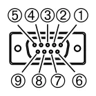</button><figcaption>Figure from page 112</figcaption><dialog id="fig-51"><p>Figure from page 112</p><form method="dialog"><button>Close</button></form></dialog></figure><p>The detail settings screen appears.</p>
<p>“OFF” → “GPS OUT” → “PACKET” → “WAYPOINT”</p>
<p>~~<strong>Tip</strong>~~ The default setting: OFF</p>
<p>.</p>
<p>The setting changes in the following order.
“4800 bps” → “9600 bps” → “19200 bps” → “38400 bps” → “57600 bps”</p>
<p>The detail settings screen appears.</p>
<p>.</p>
<p>.
Rotating the DIAL changes the speed between “1200 bps” and “9600 bps”.</p>
<p>~~<strong>Tip</strong>~~ The default setting: 1200 bps</p><p>The detail settings screen appears.
<strong>15</strong> Rotate the DIAL to select the desired squelch
detection method for the packet communication, then</p>
<p>Select “1 TX:ON” or “2 TX:OFF”.</p>
<p>~~<strong>Tip</strong>~~ The default setting: 1 TX:ON</p>
<p>Returns the display to the previously viewed operating screen.
Enables the packet communication.
<strong>17</strong> Using the settings in the Setup menu, select the band and frequency.
<strong>18</strong> Rotate VOL.
Sets the output level to the TNC from the transceiver.
<strong>19</strong> Adjust the TNC output level.
Sets the input level to the transceiver.</p>
<p>~~<strong>Caution</strong>~~</p>
<p>Transmitting a large amount of data may take a long time, causing for the transceiver to overheat.
When overheating occurs, the high temperature prevention circuit activates to lower the transmit
power output. If transmission continues further, the transceiver automatically cancels transmit and
returns to receive mode in order to prevent damage to the transceiver.
When the high temperature protection circuit activates, turn the power OFF or leave the transceiver in
receive mode until the temperature cools.</p>
<p>~~<strong>Tip</strong>~~</p>
<p>Use the optional cooling fan SMB-201 to effectively cool down the transceiver that has heated up due
to continuous transmission.</p><p>~~<strong>Other connectable devices</strong>~~</p>
<ul>
<li><strong>●External speaker</strong>
The optional high output, high fidelity, waterproof external speaker “MLS-200-M10” may
be connected to the transceiver.
Plug the external speaker into the EXT SP jack on the rear side of the transceiver.</li>
</ul>
<p>~~<strong>Tip</strong>~~</p>
<p>When an external speaker is connected to the EXT SP jack, the internal speaker does not output
audio.</p>
<p>~~<strong>Caution</strong>~~</p>
<p>When connecting an external speaker other than the optional MLS-200-M10 to the EXT SP jack on
the rear of the transceiver, use only a stereo type speaker plug. Sound outputs only from the L (left)
side. Using a monaural speaker plug may cause a malfunction of the transceiver. When connecting a
monaural speaker, use the supplied stereo to monaural adapter plug (refer to the illustration below).</p>
<p>Monaural speaker plug</p><p>according to your personal preferences. The functions are categorized into: display,
transmission/reception, memory, device configuration, etc,. in the menu. It is easy
to select the item to adjust from each menu list, and then input or select the desired
setting.</p>
<p>~~<strong>Setup menu basic operations</strong>~~</p>
<p>The Setup menu appears.</p>
<p>The menu list appears.</p>
<p><strong>4</strong> Rotate the DIAL to change the setting value.</p>
<p>The selected value is set, and the display returns to the previous operating screen.</p>
<p>viewed screen.</p>
<p>return the display to the menu list screen.</p>
<p>~~<strong>Tip</strong>~~</p>
<p>When a selected Setup Menu item is displayed, the previously set value will be shown on the screen.
A beep sounds when the default value is selected while setting the new setting value.</p><figure><button aria-label="Enlarge Figure from page 116" class="zoom" data-dialog="fig-52" type="button">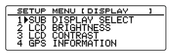</button><figcaption>Figure from page 116</figcaption><dialog id="fig-52"><p>Figure from page 116</p><form method="dialog"><button>Close</button></form></dialog></figure><p>|Menu / Item|Col2|Col3|Description|Selectable options
(Options in bold are the default
settings)|
|---|---|---|---|---|
|<strong>1 DISPLAY</strong>|<strong>1 DISPLAY</strong>|<strong>1 DISPLAY</strong>|<strong>1 DISPLAY</strong>|<strong>1 DISPLAY</strong>|
||
<strong>1</strong>|
<strong>SUB DISPLAY SELECT</strong>|Sets the sub-display
content|<strong>SUB BAND</strong> / TIME / VOLT|
||<strong>2</strong>|<strong>LCD BRIGHTNESS</strong>|Sets the screen
brightness|MIN / 2 / 3 / 4 / 5 / 6 /<strong>MAX</strong>|
||<strong>3</strong>|<strong>LCD CONTRAST</strong>|Sets the screen contrast|-3 / -2 / -1 /<strong>0</strong> / +1 / +2 / +3|
||<strong>4</strong>|
<strong>GPS INFORMATION</strong>|
Switches the GPS
information|
<strong>LOCATION</strong> / FREQUENCY|
|<strong>2 TX/RX</strong>|<strong>2 TX/RX</strong>|<strong>2 TX/RX</strong>|<strong>2 TX/RX</strong>|<strong>2 TX/RX</strong>|
||
<strong>1</strong>|<strong>ANALOG MODE</strong>
<strong>SELECT</strong>|Sets analog mode|<strong>AUTO</strong> / MANUAL (FM) / MANUAL (AM)|
||<strong>2</strong>|<strong>MIC GAIN</strong>|Sets the microphone
sensitivity|MIN / LOW /<strong>NORMAL</strong> / HIGH /
MAX|
||<strong>3</strong>|<strong>AMS TX MODE</strong>|Sets the transmission
mode|AUTO /<strong>TX MANUAL</strong> / TX FM FIXED / TX
DN FIXED / TX VW FIXED|
||<strong>4</strong>|<strong>DIGITAL SQL TYPE</strong>|Sets the squelch type in
digital mode|
<strong>OFF</strong> / CODE / BREAK|
||<strong>5</strong>|<strong>DIGITAL SQL CODE</strong>|
Sets the squelch code in
digital mode|
CODE:<strong>001</strong> to 126|
||<strong>6</strong>|<strong>DIGITAL POPUP TIME</strong>|
Sets the information
pop-up time|OFF / 2 sec / 4 sec / 6 sec / 8 sec /
<strong>10 sec</strong> / 20 sec / 30 sec / 60 sec /
CONTINUE|
||<strong>7</strong>|<strong>LOCATION SERVICE</strong>|Sets your location
information display in
digital mode|<strong>ON</strong> / OFF
For details, refer to the GM Function
Instruction Manual.|
||<strong>8</strong>|<strong>STANDBY BEEP</strong>|
Activates/deactivates
the standby beep|
<strong>ON</strong> / OFF|
||<strong>9</strong>|<strong>HALF DEVIATION</strong>|
Activates/deactivates
the half deviation|ON /<strong>OFF</strong>|
|
<strong>3 MEMORY</strong>|
<strong>3 MEMORY</strong>|
<strong>3 MEMORY</strong>|
<strong>3 MEMORY</strong>|
<strong>3 MEMORY</strong>|
||
<strong>1</strong>|
<strong>ALPHA TAG SIZE</strong>|Sets the memory
channel tag display size|<strong>SMALL</strong> / LARGE|
||<strong>2</strong>|<strong>MEMORY SCAN TYPE</strong>|
Sets the memory scan
method|<strong>ALL MEMORY</strong> / SELECT MEMORY|
|<strong>4 SIGNALING</strong>|<strong>4 SIGNALING</strong>|<strong>4 SIGNALING</strong>|<strong>4 SIGNALING</strong>|<strong>4 SIGNALING</strong>|
|<strong>4 SIGNALING</strong>|
<strong>1</strong>|
<strong>TONE SQL FREQ</strong>|Sets the tone frequency|67.0 Hz to 254.1 Hz<strong>100.0 Hz</strong>|
|<strong>4 SIGNALING</strong>|<strong>2</strong>|
<strong>DCS CODE</strong>|
Sets the DCS code|
<strong>023</strong> to 754|
|<strong>4 SIGNALING</strong>|<strong>3</strong>|
<strong>AUTO DIALER</strong>|
Activates/deactivates
the DTMF code
automatic transmission|
ON /<strong>OFF</strong>|
|<strong>4 SIGNALING</strong>|<strong>4</strong>|<strong>SQL TYPE</strong>|
Sets the squelch type|<strong>OFF</strong> / TONE ENC / TONE SQL / REV
TONE / DCS / PR FREQ / PAGER / DCS
ENC* / TONE DCS* / DCS TSQL*
*Displays only when<strong>[4 SIGNALING]</strong> →<strong>[9</strong>
<strong>SQL EXPANSION]</strong> is set to “ON”.|
|<strong>4 SIGNALING</strong>|<strong>5</strong>|<strong>DTMF MEMORY</strong>|Registers the DTMF
code|
1 to 9, 16 characters for each|</p>
<p><strong>6</strong> <strong>PAGER CODE</strong> Sets the individual pager
code</p>
<p>RX CODE 1: 01 to 50 <strong>05</strong>
RX CODE 2: 01 to 50 <strong>47</strong>
TX CODE 1: 01 to 50 <strong>05</strong></p><p>|Menu / Item|Col2|Col3|Description|Selectable options
(Options in bold are the default
settings)|
|---|---|---|---|---|
||<strong>7</strong>|<strong>PRG REV TONE</strong>|Set the idle line squelch|300 Hz to 3000 Hz<strong>1500 Hz</strong>|
||<strong>8</strong>|
<strong>BELL RINGER</strong>|
Sets the number of
successive bell rings|
<strong>OFF</strong> / 1 time / 3 times / 5 times /
8 times / CONTINUOUS|
||<strong>9</strong>|<strong>SQL EXPANSION</strong>|
Sets the squelch
type separately for
transmission and
reception|
ON /<strong>OFF</strong>|
||<strong>10 <strong>|</strong>WX ALERT</strong>
(USA Version Only)|Weather alert operation
setting|ON /<strong>OFF</strong>|
|</p>
<p><strong>5 SCAN</strong>|</p>
<p><strong>5 SCAN</strong>|</p>
<p><strong>5 SCAN</strong>|</p>
<p><strong>5 SCAN</strong>|</p>
<p><strong>5 SCAN</strong>|
||
<strong>1</strong>|<strong>DUAL WATCH STOP</strong>|Sets the signal reception
method|
<strong>AUTO</strong> / HOLD|
||<strong>2</strong>|<strong>SCAN DIRECTION</strong>|Sets the scanning
direction when scanning
starts|<strong>UP</strong> / DOWN|
||<strong>3</strong>|<strong>SCAN RESUME</strong>|Sets the operation when
scanning stops|<strong>BUSY</strong> / HOLD / 1 sec / 3 sec / 5 sec|
||<strong>4</strong>|<strong>DUAL WATCH MODE</strong>|
Sets the reception time
while processing the
dual reception function|0.3 sec to 10 sec<strong>5.0 sec</strong>|
|
<strong>6 GM</strong>|
<strong>6 GM</strong>|
<strong>6 GM</strong>|
<strong>6 GM</strong>|
<strong>6 GM</strong>|
||
<strong>1</strong>|<strong>RANGE RINGER</strong>|Activates/deactivates
the alert sound when
detecting stations within
communication range|<strong>OFF</strong> / ON|
||<strong>2</strong>|<strong>MESSAGE POPUP</strong>|
Activates/deactivates
the pop-up message
display|OFF /<strong>ON</strong>|
||<strong>3</strong>|<strong>RADIO ID</strong>|Displays the transceiver
IDs|- (uneditable)|
|* For details of the functions, refer to the GM Function Instruction Manual.|* For details of the functions, refer to the GM Function Instruction Manual.|* For details of the functions, refer to the GM Function Instruction Manual.|* For details of the functions, refer to the GM Function Instruction Manual.|* For details of the functions, refer to the GM Function Instruction Manual.|
|
<strong>7 WIRES-X</strong>|
<strong>7 WIRES-X</strong>|
<strong>7 WIRES-X</strong>|
<strong>7 WIRES-X</strong>|
<strong>7 WIRES-X</strong>|
||
<strong>1</strong>|
<strong>RPT/WIRES FREQ</strong></p>
<p><strong>FREQ</strong>|Sets the operating
frequencies for
repeater and WIRES-X
operations.
Registers the preset
frequency|<strong>MANUAL</strong> / PRESET</p>
<p>Depends on the transceiver version|
|* For details of the functions, refer to the WIRES-X Instruction Manual.|* For details of the functions, refer to the WIRES-X Instruction Manual.|* For details of the functions, refer to the WIRES-X Instruction Manual.|* For details of the functions, refer to the WIRES-X Instruction Manual.|* For details of the functions, refer to the WIRES-X Instruction Manual.|
|
<strong>8 CONFIG</strong>|
<strong>8 CONFIG</strong>|
<strong>8 CONFIG</strong>|
<strong>8 CONFIG</strong>|
<strong>8 CONFIG</strong>|
|
<strong>8 CONFIG</strong>|
<strong>1</strong>|
<strong>DATE &amp; TIME ADJUST</strong>|Sets the date and time
using the internal clock|month/day/year, hour : minute|
|
<strong>8 CONFIG</strong>|<strong>2</strong>|<strong>TIME FORMAT</strong>|
Sets the time display
format|<strong>24 hour</strong> / 12 hour|
|
<strong>8 CONFIG</strong>|<strong>3</strong>|<strong>TIME ZONE</strong>|Sets the time zone|UTC ±14h (0.5 h interval)<strong>UTC ±0:00</strong>|
|
<strong>8 CONFIG</strong>|<strong>4</strong>|
<strong>AUTO REPEATER</strong>
<strong>SHIFT</strong>|
Activates/deactivates
the automatic repeater
shift function|
OFF /<strong>ON</strong>|</p>
<p>SIMPLEX / − REPEATER / + REPEATER
(Differs depending on frequency)</p>
<p><strong>5</strong> <strong>REPEATER SHIFT</strong> Sets the repeater shift
direction</p><p>|Menu / Item|Col2|Col3|Description|Selectable options
(Options in bold are the default
settings)|
|---|---|---|---|---|
||<strong>7</strong>|<strong>FM AM STEP</strong>|Sets the channel step|<strong>AUTO</strong> / 5.00 KHz / 6.25 KHz /
(8.33 KHz) / 10.00 KHz / 12.50 KHz /
15.00 KHz / 20.00 KHz / 25.00 KHz /
50.00 KHz / 100.00 KHz|
||<strong>8</strong>|<strong>BEEP</strong>|Sets the beep function|
OFF /<strong>LOW</strong> / HIGH|
||<strong>9</strong>|<strong>CLOCK TYPE</strong>|
Sets the clock shift|
<strong>A</strong> / B|
||<strong>10 <em><em>|
 <strong>MIC PROGRAM KEY</strong>|
Sets the microphone P
buttons|
OFF / SQL TYPE / SCAN / HOME /
DCS CODE / TONE FREQ / RPT SHIFT /
REVERSE / TX POWER / SQL OFF /
T-CALL / VOICE</em> / D_X / WX / S-LIST /
MSG / REPLY / M-EDIT
<em>Displays when the optional FVS-2 is
attached.
P1KEY:</em></em>SQL OFF</strong>
             (<strong>T-CALL</strong>: European version)
P2KEY:<strong>HOME</strong>
P3KEY:<strong>D_X</strong>
P4KEY:<strong>TX POWER</strong>|
||<strong>11 <strong>|</strong>RX COVERAGE</strong>|Sets the reception range
expansion  setting to
on/off|</p>
<p><strong>NORMAL</strong> / WIDE|
||<strong>12 <strong>|</strong>UNIT</strong>|Sets the unit used for
the display|METRIC / INCH
(Depends on the transceiver version)|
||<strong>13 <strong>|</strong>APO</strong>|
Sets the APO action
time|
<strong>OFF</strong> / 0.5 hour to 12.0 hour|
||<strong>14 <strong>|</strong>TOT</strong>|Sets the time-out timer|OFF / 1 min / 2 min /<strong>3 min</strong> / 5 min /
10 min / 20 min / 30 min|
||<strong>15 <strong>|</strong>Bluetooth PAIRING</strong>|Sets the PIN code and
starts paring|0000 to 9999<strong>6111</strong>|
||<strong>16 <strong>|</strong>GPS DATUM</strong>|
Selects the GPS
function positioning|<strong>WGS-84</strong> / TOKYO MEAN|
||<strong>17 <strong>|</strong>GPS LOG</strong>|
Sets the time interval
to log the GPS location
information|<strong>OFF</strong> / 1 sec / 2 sec / 5sec / 10 sec /
30 sec / 60 sec|
|<strong>9 DATA</strong>|<strong>9 DATA</strong>|<strong>9 DATA</strong>|<strong>9 DATA</strong>|<strong>9 DATA</strong>|
|<strong>9 DATA</strong>|
<strong>1</strong>|<strong>COM PORT SETTING</strong>|Sets the COM port|COM SPEED: 4800bps /<strong>9600bps</strong> /
19200bps / 38400bps / 57600bps
COM OUTPUT:<strong>OFF</strong> / GPS OUT /
PACKET / WAYPOINT
WP FORMAT: NMEA6 / NMEA7 /
NMEA8 /<strong>NMEA9</strong>
WP FILTER:<strong>ALL</strong> / MOBILE /
FREQUENCY / OBJECT/ITEM /
DIGIPEATER / VoIP / WEATHER /
YAESU / CALL RINGER /
RNG RINGER|
|<strong>9 DATA</strong>|<strong>2</strong>|<strong>DATA SPEED</strong>|Sets the APRS/DATA
communication baud
rate|
APRS:<strong>1200 bps</strong> / 9600 bps
DATA:<strong>1200 bps</strong> / 9600 bps|</p>
<p><strong>3</strong> <strong>DATA SQUELCH</strong> S h l h TX <strong>ON</strong> / TX OFF</p><p>|Menu / Item|Col2|Col3|Description|Selectable options
(Options in bold are the default
settings)|
|---|---|---|---|---|
|<strong>10 APRS</strong>|<strong>10 APRS</strong>|<strong>10 APRS</strong>|<strong>10 APRS</strong>|<strong>10 APRS</strong>|
|<strong>10 APRS</strong>|
<strong>1</strong>|<strong>APRS COMPASS</strong>|Sets the APRS compass
display|
NORTH UP /<strong>HEADING UP</strong>|
|<strong>10 APRS</strong>|<strong>2</strong>|<strong>APRS DISTINATION</strong>|Displays the model code|APY∗∗∗ (cannot edit)|
|<strong>10 APRS</strong>|<strong>3</strong>|
<strong>APRS FILTER</strong>|
Sets the filter function|
Mic-E:<strong>ON</strong> / OFF
POSITION:<strong>ON</strong> / OFF
WEATHER:<strong>ON</strong> / OFF
OBJECT:<strong>ON</strong> / OFF
ITEM:<strong>ON</strong> / OFF
STATUS:<strong>ON</strong> / OFF
OTHER: ON /<strong>OFF</strong>
RANGE LIMIT: 1 to 3000 /<strong>OFF</strong>
ALT.NET: ON /<strong>OFF</strong>|
|<strong>10 APRS</strong>|<strong>4</strong>|<strong>APRS MESSAGE TEXT</strong>|Inputs the
predetermined routine
message|
1 to 8 ch|
|<strong>10 APRS</strong>|<strong>5</strong>|<strong>APRS MODEM</strong>|Activates/deactivates
the APRS function|<strong>OFF</strong> / ON|
|<strong>10 APRS</strong>|<strong>6</strong>|<strong>APRS MUTE</strong>|
Activates/deactivates
the AF mute function
when using the APRS
function|<strong>OFF</strong> / ON|
|<strong>10 APRS</strong>|<strong>7</strong>|<strong>APRS POP-UP</strong>|Sets the duration time
for displaying the pop-up
beacons and messages|
BEACON: OFF / 3 sec / 5 sec /<strong>10 sec</strong> /
HOLD
MESSAGE: OFF / 3 sec / 5 sec /<strong>10 sec</strong> /
HOLD
MYPACKET:<strong>OFF</strong> / ON|
|<strong>10 APRS</strong>|<strong>8</strong>|<strong>APRS RINGER</strong>|Sets the audio alert
when receiving beacons|
TX BEACON:<strong>ON</strong> / OFF
TX MESSAGE:<strong>ON</strong> / OFF
RX BEACON:<strong>ON</strong> / OFF
RX MESSAGE:<strong>ON</strong> / OFF
MY PACKET:<strong>ON</strong> / OFF
CALL RINGER: ON /<strong>OFF</strong>
RANGE RINGER: 1 to 100 /<strong>OFF</strong>
MSG VOICE: ON /<strong>OFF</strong>|
|<strong>10 APRS</strong>|<strong>9</strong>|<strong>APRS RINGER (CALL)</strong>|Sets the call sign for
CALL RINGER|
1 to 8 stations (∗∗∗∗∗∗-∗∗)|
|<strong>10 APRS</strong>|<strong>10 <strong>|</strong>APRS TX DELAY</strong>|
Sets the data
transmission delay time|100 ms / 150 ms / 200 ms /<strong>250 ms</strong> / 300
ms / 400 ms / 500 ms / 750 ms / 1000 ms|
|<strong>10 APRS</strong>|<strong>11 <strong>|</strong>APRS UNITS</strong>|
Sets the unit used for
the APRS display|
POSITION:<strong>dd°mm'mm"</strong> / dd°mm.mm'
DISTANCE: km /<strong>mile</strong>
SPEED: km/h /<strong>mph</strong> / knot
ALTITUDE: m /<strong>ft</strong>
BARO: hPa /<strong>mb</strong> / mmHg / inHg
TEMP: °C /** °F**
RAIN: mm /<strong>inch</strong>
WIND: m/s /<strong>mph</strong> / knot|</p>
<p><strong>12</strong> <strong>BEACON INFO</strong> Sets the beacon AMBIGUITY: <strong>OFF</strong> / 1 to 4 digit
<strong>SELECT</strong> information to transmit SPEED/COURSE: <strong>ON</strong> / OFF</p>
<p>Sets the beacon
information to transmit</p>
<p>AMBIGUITY: <strong>OFF</strong> / 1 to 4 digit
SPEED/COURSE: <strong>ON</strong> / OFF
ALTITUDE <strong>ON</strong> / OFF</p><p>|Menu / Item|Col2|Col3|Description|Selectable options
(Options in bold are the default
settings)|
|---|---|---|---|---|
|<strong>Menu / Item</strong>|<strong>13 <strong>|</strong>BEACON STATUS</strong>
<strong>TEXT</strong>|Sets the status text input|SELECT: TEXT 1 to 5 /<strong>OFF</strong>
TX RATE:<strong>1/1</strong> to 1/8 /
1/2 (FREQ) to 1/8 (FREQ)
TEXT 1 to 5:<strong>NONE</strong> / FREQUENCY /
FREQ &amp; SQL &amp; SHIFT|
|<strong>Menu / Item</strong>|<strong>14 <strong>|</strong>BEACON TX</strong>|Switches the beacon
transmission between
automatic transmission
and manual
transmission|
AUTO:<strong>OFF</strong> / ON / SMART
INTERVAL: 30sec to 60min<strong>5min</strong>
PROPORTIONAL:<strong>ON</strong> / OFF
DECAY:<strong>ON</strong> / OFF
LOW SPEED: 1 to 99<strong>3</strong>
RATE LIMIT: 5sec to 180sec<strong>30sec</strong>|
|<strong>Menu / Item</strong>|<strong>15 <strong>|</strong>DIGI PATH SELECT</strong>|Sets the digital repeater
route|
OFF / WIDE1-1 /<strong>WIDE1-1,WIDE2-1</strong>|
|<strong>Menu / Item</strong>|<strong>16 <strong>|</strong>MY CALLSIGN (APRS)</strong>|Sets your call sign|∗∗∗∗∗∗-∗∗|
|<strong>Menu / Item</strong>|
<strong>17 <strong>|
 <strong>MESSAGE GROUP</strong>|
Sets the group filter for
received messages|GROUP 1: ALL∗∗∗∗∗∗ 
GROUP 2: CQ∗∗∗∗∗∗∗
GROUP 3: QST∗∗∗∗∗∗
GROUP 4: YAESU∗∗∗∗
GROUP 5: -
GROUP 6: -
BULLETIN 1: BLN?∗∗∗∗∗
BULLETIN 2: BLN?
BULLETIN 3: BLN?|
|</strong>Menu / Item</strong>|<strong>18 <strong>|</strong>MESSAGE REPLY</strong>|Sets the automatic
response for received
messages|
REPLY:<strong>OFF</strong> / ON
CALLSIGN:∗∗∗∗∗∗-∗∗
REPLY TEXT: -|
|<strong>Menu / Item</strong>|<strong>19 <strong>|</strong>MY POSITION SET</strong>|Sets your location|
<strong>GPS</strong> / MANUAL|
|<strong>Menu / Item</strong>|
<strong>20 <strong>|
 <strong>MY POSITION</strong>|
Sets your location
manually|
LAT:[N <em>°</em>*.</strong>' ('</strong>")]
LON:[E <em>°<strong>.</strong>' ('<strong>")]|
|</strong>Menu / Item<strong>|</strong>21 <strong>|</strong>MY SYMBOL<strong>|Sets your station symbol|
 <strong>ICON 1: [/&gt;]</strong> Car
ICON2: [/R] REC.Vehicle
ICON3: [/-] House QTH (VHF)
USER: [YY] Yaesu Radios|
|</strong>Menu / Item<strong>|</strong>22 <strong>|</strong>POSITION COMMENT<strong>|Sets the location
comments|
<strong>Off Duty</strong> / En Route / In Service /
Returning / Committed / Special /
Priority / Custom 0 to 6 / Emergency!|
|</strong>Menu / Item<strong>|</strong>23 <strong>|</strong>SmartBeaconing<strong>|Sets the smart
beaconing|
STATUS:</strong>OFF</em>* / TYPE1 / TYPE2 / TYPE3
LOW SPEED: 2 to 30<strong>5</strong>
HIGH SPEED: 3 to 90<strong>70</strong>
SLOW RATE: 1 to 100min<strong>30min</strong>
FAST RATE: 10 to 180sec<strong>120sec</strong>
TURN ANGLE: 5 to 90°<strong>28°</strong>
TURN SLOPE: 1 to 255<strong>26</strong>
TURN TIME: 5 to 180sec<strong>30sec</strong>|</p>
<p><strong>24</strong> <strong>SORT FILTER</strong> Sets the sort and filter SORT: <strong>TIME</strong> / CALLSIGN / DISTANCE
functions FILTER: <strong>ALL</strong> / MOBILE /</p>
<p>SORT: <strong>TIME</strong> / CALLSIGN / DISTANCE
FILTER: <strong>ALL</strong> / MOBILE /</p>
<p>FREQUENCY / OBJECT/ITEM /
DIGIPEATER / VoIP / WEATHER /
YAESU / OTHER PACKET / CALL
RINGER / RANGE RINGER / 1200 b</p><p>|Menu / Item|Col2|Col3|Description|Selectable options
(Options in bold are the default
settings)|
|---|---|---|---|---|
||<strong>25 <strong>|</strong>VOICE ALERT</strong>|Sets the voice alert
function|V ALERT:<strong>NORMAL</strong> / TONE SQL / DCS /
RX-TSQL / RX-DCS
TONE SQL: 67.0Hz to 254.1Hz<strong>100.0Hz</strong>
DCS: 023 to 754<strong>023</strong>|
|
* For details of the functions, refer to the APRS Instruction Manual.|
* For details of the functions, refer to the APRS Instruction Manual.|
* For details of the functions, refer to the APRS Instruction Manual.|
* For details of the functions, refer to the APRS Instruction Manual.|
* For details of the functions, refer to the APRS Instruction Manual.|
|
<strong>11 SD</strong>|
<strong>11 SD</strong>|
<strong>11 SD</strong>|
<strong>11 SD</strong>|
<strong>11 SD</strong>|
||
<strong>1</strong>|<strong>BACKUP</strong>|Copies information to/
from the micro-SD
memory card|Write to SD / Read from SD|
||<strong>2</strong>|<strong>FORMAT</strong>|
Initializes the micro-SD
memory card|-|
|
<strong>12 OPTION</strong>|
<strong>12 OPTION</strong>|
<strong>12 OPTION</strong>|
<strong>12 OPTION</strong>|
<strong>12 OPTION</strong>|
||
<strong>1</strong>|
<strong>Bluetooth</strong>|Sets the Bluetooth
headset|AUDIO:<strong>AUTO</strong> / FIX
BATTERY:<strong>NORMAL</strong> / SAVE
PTT MODE:<strong>MOMENTARY</strong> / TOGGLE
VOX: ON /<strong>OFF</strong>
GAIN:<strong>HIGH</strong> / LOW|
||<strong>2</strong>|<strong>VOICE MEMORY</strong>|Sets the voice memory
function|
PLAY/REC:<strong>FREE 5min</strong> / LAST 30sec
ANNOUNCE:<strong>AUTO</strong> / MANUAL
LANGUAGE: JAPANESE /<strong>ENGLISH</strong>
VOLUME:<strong>HIGH</strong> / MID / LOW|
|
<strong>13 RST/CLONE</strong>|
<strong>13 RST/CLONE</strong>|
<strong>13 RST/CLONE</strong>|
<strong>13 RST/CLONE</strong>|
<strong>13 RST/CLONE</strong>|
||
<strong>1</strong>|
<strong>FACTORY RESET</strong>|Restores all settings to
the default state|-|
||<strong>2</strong>|<strong>PRESET</strong>|
Presets the desired
setting value|-|
||<strong>3</strong>|<strong>RECALL PRESET</strong>|
Recalls the preset
information|-|
||<strong>4</strong>|<strong>MEMORY CH RESET</strong>|Clears the information
registered to the
memory channels|-|
||<strong>5</strong>|<strong>MEMORY CH SORT</strong>|
Sorts the memory
channels you use|-|
||<strong>6</strong>|<strong>APRS RESET</strong>|
Restores all the APRS
settings to the default
state|-|
||<strong>7</strong>|<strong>CLONE</strong>|Copies all the saved
data|This radio → other /
Other → This radio|
||<strong>8</strong>|<strong>SOFTWARE VERSION</strong>|Displays the transceiver
software version|
MAIN CPU Ver:∗.∗∗ /
PANEL CPU Ver:∗.∗∗ /
DSP CPU Ver:∗.∗∗|
|
<strong>14 CALLSIGN</strong>|
<strong>14 CALLSIGN</strong>|
<strong>14 CALLSIGN</strong>|
<strong>14 CALLSIGN</strong>|
<strong>14 CALLSIGN</strong>|
||
<strong>1</strong>|
<strong>MY CALLSIGN</strong>
<strong>(DIGITAL)</strong>|Sets your station call
sign|∗∗∗∗∗∗∗∗∗∗|</p><p>~~<strong>Setting up the screen display (1 SUB DISPLAY SELECT)</strong>~~</p>
<p>Choose the information be shown on the sub-display.</p>
<p>.</p>
<p>The sub-display setting screen appears.
<strong>4</strong> Rotate the DIAL to select the information to display
on the sub-display.
1 SUB BAND: Displays the sub-band operating
information.
2 TIME: Displays the time.
3 VDD: Displays the voltage.</p>
<p>~~<strong>Tip</strong>~~ The default setting: 1 SUB BAND</p>
<p>Sets the information displayed on the sub-display and returns the display to the
previous operating screen.</p>
<p>~~<strong>Setting the display brightness (2 LCD BRIGHTNESS)</strong>~~</p>
<p>You can adjust the display brightness.
For details, see “Adjusting the display brightness” on page 48.</p>
<p>~~<strong>Setting the display contrast (3 LCD CONTRAST)</strong>~~</p>
<p>You can adjust the display contrast.
For details, see “Adjusting the display brightness” on page 48.</p><p>~~<strong>Switching the GPS information (4 GPS INFORMATION)</strong>~~</p>
<p>You can set the information to display on the GPS INFO screen.</p>
<p>The Setup menu appears.</p>
<p>.</p>
<p><strong>4</strong> Rotate the DIAL to select the GPS information to be
displayed.
1 LOCATION: Displays your location information.
2 FREQUENCY: Displays the frequency.</p>
<p>~~<strong>Tip</strong>~~ The default setting: 1 LOCATION</p>
<p>Sets the display information and returns the display to the previously viewed screen.</p><p>~~<strong>Setting the modulation mode (1 ANALOG MODE SELECT)</strong>~~</p>
<p>You can select the modulation mode in analog mode.
For details, see “Switching the modulation mode” on page 40.</p>
<p>~~<strong>Setting the microphone sensitivity (2 MIC GAIN)</strong>~~</p>
<p>You can set the microphone sensitivity (microphone gain).
For details, see “Adjusting the microphone sensitivity” on page 42.</p>
<p>~~<strong>Setting the transmission mode when using the AMS function</strong>~~
~~<strong>(3 AMS TX MODE)</strong>~~</p>
<p>You can select the transmission mode when using the AMS function.</p>
<p>.</p>
<p><strong>4</strong> Rotate the DIAL to select the desired transmission
mode.</p><p>1 AUTO:
Automatically selects one of the 4 communication modes according to the
received signal.
2 TX MANUAL:
Automatically selects one of the 4 communication modes according to the
received signal. Briefly pressing [PTT] on the microphone switches between digital
mode and analog mode.
3 TX FM FIXED:
Automatically selects one of the 4 communication modes according to the
received signal. Always switches to FM mode for transmission.
4 TX DN FIXED:
Automatically selects one of the 4 communication modes according to the
received signal. Always switches to DN mode for transmission.
5 TX VW FIXED:</p>
<p>Automatically selects one of the 4 communication modes according to the received signal. Always
switches to VW mode for transmission.</p>
<p>~~<strong>Tips</strong>~~ - The default setting: 2 TX MANUAL</p>
<pre><code>- When “ [▀] ” blinks: 2 TX MANUAL
</code></pre>
<ul>
<li>
<p>When “○○ [▀] [” blinks: 3 TX FM FIXED / 4 TX DN FIXED / 5 TX VW FIXED]</p>
</li>
<li>
<p>When “○○ [▀] [” lights up: 1 AUTO]</p>
</li>
</ul>
<p>*The “○○” part differs depending on the received signal.</p>
<p>Sets the transmission mode when using the AMS function and returns the display to
the previously viewed screen.</p>
<p>~~<strong>Setting the squelch type in digital mode (4 DIGITAL SQL TYPE)</strong>~~</p>
<p>You can set the squelch type in digital mode.</p>
<p>The Setup menu appears.</p>
<p>.</p><figure><button aria-label="Enlarge Figure from page 126" class="zoom" data-dialog="fig-53" type="button">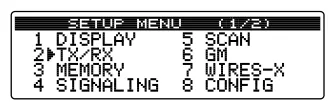</button><figcaption>Figure from page 126</figcaption><dialog id="fig-53"><p>Figure from page 126</p><form method="dialog"><button>Close</button></form></dialog></figure><figure><button aria-label="Enlarge Figure from page 126" class="zoom" data-dialog="fig-54" type="button">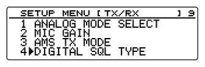</button><figcaption>Figure from page 126</figcaption><dialog id="fig-54"><p>Figure from page 126</p><form method="dialog"><button>Close</button></form></dialog></figure><p><strong>4</strong> Rotate the DIAL to select the desired squelch type.
1 OFF: Outputs sound whenever receiving digital
signals from Yaesu transceivers.
2 CODE: Outputs sound only when receiving signals
containing the SQL CODE corresponding
to the code you set.
3 BREAK: Regardless of the SQL CODE setting,
outputs sound when the partner station
transmits with the BREAK setting
activated.</p>
<p>~~<strong>Tip</strong>~~ The default setting: 1 OFF</p>
<p>Sets the squelch type and returns the display to the previously viewed screen.</p>
<p>~~<strong>Setting the digital mode squelch code (5 DIGITAL SQL CODE)</strong>~~</p>
<p>You can set the squelch code in digital mode.</p>
<p>The Setup menu appears.</p>
<p>.</p>
<p><strong>4</strong> Rotate the DIAL to select the desired code.</p>
<p>~~<strong>Tips</strong>~~   - The code can be selected from 001 to 126.</p>
<pre><code>  - The default setting: 001
</code></pre>
<p>Sets the squelch code and returns the display to the previously viewed screen.</p><p>~~<strong>Setting the time to display the partner station information in a pop-</strong>~~
~~<strong>up window (6 DIGITAL POPUP TIME)</strong>~~</p>
<p>You can set the time to display the partner station information such as the call sign.</p>
<p>The Setup menu appears.</p>
<p>.</p>
<p><strong>4</strong> Rotate the DIAL to select the time to display the popup window.
“1 OFF”, “2 2 sec”, “3 4 sec”, “4 6 sec”, “5 8 sec”,
“6 10 sec”, “7 20 sec”, “8 30 sec”, “9 60 sec”,
“10 CONTINUE”</p>
<p>~~<strong>Tip</strong>~~ The default setting: 6 10 sec</p>
<p>Sets the time and returns the display to the previously viewed screen.</p>
<p>~~<strong>Setting your location information display (7 LOCATION SERVICE)</strong>~~</p>
<p>For details of the functions, refer to the GM Function Instruction Manual (download from
Yaesu website).</p><p>~~<strong>Sounding a beep when a partner station ends a transmission</strong>~~
~~<strong>(8 STANDBY BEEP)</strong>~~</p>
<p>In digital communication, the transceiver can inform you that the partner station
completes a transmission by emitting a beep.</p>
<p>The Setup menu appears.</p>
<p>.</p>
<p><strong>4</strong> Rotate the DIAL to switch the setting between ON
and OFF.
1 ON: Emits a beep when the partner station
completes a transmission.
2 OFF: Does not emit a beep when the partner
station completes a transmission.</p>
<p>~~<strong>Tip</strong>~~ The default setting: 1 ON</p>
<p>Returns the display to the previously viewed screen.</p><p>~~<strong>Using the half deviation function (9 HALF DEVIATION)</strong>~~</p>
<p>You can lower the degree of modulation by half.</p>
<p>The Setup menu appears.</p>
<p>.</p>
<p><strong>4</strong> Rotate the DIAL to select the desired setting.
1 ON: Reduces the FM modulation to half.
2 OFF: Uses the normal FM modulation</p>
<p>~~<strong>Tip</strong>~~ The default setting: 2 OFF</p>
<p>Returns the display to the previously viewed screen.</p>
<p>~~<strong>Setup menu operations: 3 MEMORY</strong>~~</p>
<p>~~<strong>Setting the memory tag display (1 ALPHA TAG SIZE)</strong>~~</p>
<p>You can change the displays of the name and frequency registered to each channel.
For details, see “Displaying the memory tag” on page 58.</p>
<p>~~<strong>Setting the memory scan method (2 MEMORY SCAN TYPE)</strong>~~</p>
<p>You can scan either all the memory channels or only the specified memory channels.
For details, see “Selecting the scanning method” on page 65.</p><figure><button aria-label="Enlarge Figure from page 130" class="zoom" data-dialog="fig-55" type="button"></button><figcaption>Figure from page 130</figcaption><dialog id="fig-55"><p>Figure from page 130</p><form method="dialog"><button>Close</button></form></dialog></figure><figure><button aria-label="Enlarge Figure from page 130" class="zoom" data-dialog="fig-56" type="button"></button><figcaption>Figure from page 130</figcaption><dialog id="fig-56"><p>Figure from page 130</p><form method="dialog"><button>Close</button></form></dialog></figure><figure><button aria-label="Enlarge Figure from page 130" class="zoom" data-dialog="fig-57" type="button"></button><figcaption>Figure from page 130</figcaption><dialog id="fig-57"><p>Figure from page 130</p><form method="dialog"><button>Close</button></form></dialog></figure><p>~~<strong>Setting the tone frequency (1 TONE SQL FREQ)</strong>~~</p>
<p>The tone frequency may be changed.
For details, see “Selecting the tone frequency” on page 81.</p>
<p>~~<strong>Setting the DCS code (2 DCS CODE)</strong>~~</p>
<p>You can set the DCS code.
For details, see “Selecting the DCS code” on page 84.</p>
<p>~~<strong>Setting the DTMF code transmission method (3 AUTO DIALER)</strong>~~</p>
<p>You can set method (Auto or Manual) to transmit the registered DTMF code.
For details, see “Transmitting the registered DTMF code” on page 92.</p>
<p>~~<strong>Setting the squelch type (4 SQL TYPE)</strong>~~</p>
<p>Select the squelch type.
For details, see “Communicating with specific stations” on page 81.</p>
<p>~~<strong>Registering the DTMF code (5 DTMF MEMORY)</strong>~~</p>
<p>The maximum of 16-digit DTMF codes can be registered for telephone numbers to
make a call through the public telephone line from a phone patch.
For details, see “Registering the DTMF code” on page 91.</p>
<p>~~<strong>Calling only the specific stations (6 PAGER CODE)</strong>~~</p>
<p>Using the new pager code permits calls to specific stations only.
For details, see “Using the new pager function” on page 86.</p>
<p>~~<strong>Notification of calls from partner stations (8 BELL RINGER)</strong>~~</p>
<p>The beep may be set to alert you of a call from partner stations.
For details, see “Notification of incoming calls from partner stations using the bell
function” on page 89.</p><p>~~<strong>Setting the squelch type separately for transmission and reception</strong>~~
~~<strong>(9 SQL EXPANSION)</strong>~~</p>
<p>You can set the squelch type separately for transmission and reception.</p>
<p>The Setup menu appears.</p>
<p>.</p>
<p><strong>4</strong> Rotate the DIAL to select the desired setting.
1 ON: Uses different squelch types for transmission
and reception. For details, see “Other squelch
functions” on page 90.
2 OFF: Uses the same squelch for transmission and
reception.</p>
<p>~~<strong>Tip</strong>~~ The default setting: 2 OFF</p>
<p>Sets the squelch type for transmission and reception and returns the display to the
previously viewed screen.</p>
<p>~~<strong>Setting the weather alert operation (USA Version Only)</strong>~~
~~<strong>(10 WX ALERT)</strong>~~</p>
<p>The reception of the weather alert can be disabled.</p>
<p>The Setup menu appears.</p>
<p><strong>4</strong> Rotate the DIAL to select the desired setting.
1 ON: The weather alert will be received.
2 OFF: The weather alert will not be received.</p>
<p>~~<strong>Tip</strong>~~ The default setting: 2 OFF</p>
<p>Sets the weather alert operation and returns the display to the previously viewed
screen.</p><p>~~<strong>Setting the signal reception method (1 DUAL WATCH STOP)</strong>~~</p>
<p>While operating in the DW (Dual Watch) mode, the receive operation after detecting
signals on the home channel may be changed.
For details, see “Setting the dual receive restart setting” on page 71.</p>
<p>~~<strong>Setting the scanning direction (2 SCAN DIRECTION)</strong>~~</p>
<p>In the Setup menu, from <strong>[8 CONFIG]</strong> → <strong>[10 MIC PROGRAM KEY]</strong>, assign <strong>[SCAN]</strong>
to one of the <strong>[P1]</strong> to <strong>[P4]</strong> keys on the microphone to set whether to scan in the higher
direction or lower direction of the frequencies or memory channels when scanning on
that key.
For details on how to assign the function to <strong>[P1]</strong> to <strong>[P4]</strong>, see “Setting the program keys
on the microphone (10 MIC PROGRAM KEY)” on page 138.</p>
<p>.</p>
<p><strong>4</strong> Rotate the DIAL to set the desired setting.
1 UP: Scans in the higher direction of the frequencies
or memory channels.
2 DOWN: Scans in the lower direction of the
frequencies or memory channels.</p>
<p>~~<strong>Tip</strong>~~ The default setting: 1 UP</p>
<p>Sets the scanning direction and returns the screen to the previously viewed screen.</p><p>~~<strong>Selecting the receiver operation performed after scanning stops</strong>~~
~~<strong>(3 SCAN RESUME)</strong>~~</p>
<p>You can select the receiver operation to be performed after the scanning stops. For
details, see “Selecting the receiver operation performed after scanning stops” on page
63.</p>
<p>~~<strong>Setting the channel signal reception time when using the dual</strong>~~
~~<strong>reception function (4 DUAL WATCH MODE)</strong>~~</p>
<p>Set the time to check the HOME channel when using the dual reception function. For
details, see “Setting the channel signal reception time when using the dual reception
function” on page 71.</p>
<p>~~<strong>Setup menu operations: 6 GM</strong>~~</p>
<p>The GM (group monitor) function enables the transceiver to automatically check whether
the members on the same frequency are within communication range.
For details, refer to the separate GM Function Instruction Manual (download from Yaesu
website).</p>
<p>~~<strong>Setup menu operations: 7 WIRES-X</strong>~~</p>
<p>The WIRES-X is a communication system to broaden the amateur radio communication
linking worldwide using the Internet.
For details, refer to the separate WIRES-X Instruction Manual (download from Yaesu
website).</p><p>~~<strong>Setting the date and time (1 DATE &amp; TIME ADJUST)</strong>~~</p>
<p>Set the date and time of the internal clock.
For details, see “Adjusting the date and time” on page 46.</p>
<p>~~<strong>Setting the time display format (2 TIME FORMAT)</strong>~~</p>
<p>Select the internal clock time display: 24 hour display or 12 hour display.</p>
<p>.</p>
<p>Displays the time display setting screen.
<strong>4</strong> Rotate the DIAL to select “24 hour” or “12 hour”.</p>
<p>~~<strong>Tip</strong>~~ The default setting: 24 hour</p>
<p>Set the time displayed on the screen and returns the display to the previously
viewed screen.</p><p>~~<strong>Setting the time zone (3 TIME ZONE)</strong>~~</p>
<p>The internal clock can be synchronized with the Coordinated Universal Time via GPS.
The time zone can be set at 0.5 hour increments within the range of ±14 hours.</p>
<p>The Setup menu appears.</p>
<p>.</p>
<p>.</p>
<p><strong>4</strong> Rotate the DIAL to select the time zone.
The time zone can be set at 0.5 hour increments
within the range of ±14 hours.</p>
<p>~~<strong>Tip</strong>~~ The default setting: UTC ±0:00</p>
<p>Sets the time zone and returns the display to the previously viewed screen.</p>
<p>~~<strong>Using the auto repeater shift function (4 AUTO REPEATER SHIFT)</strong>~~</p>
<p>When communicating using a repeater channel, the repeater offset frequency may
be automatically set just by tuning the VFO to the repeater frequency. The automatic
repeater shift function may be changed between ON and OFF.</p>
<p>The Setup menu appears.</p>
<p>.</p>
<p><strong>4</strong> Rotate the DIAL to select the desired setting.
1 ON: Activates the auto repeater shift function.
2 OFF: Deactivates the auto repeater shift function.</p>
<p>~~<strong>Tip</strong>~~ The default setting: 1 ON</p>
<p>Applies the auto repeater shift function setting and returns the display to the
previously viewed screen.</p><p>~~<strong>Setting the repeater shift direction (5 REPEATER SHIFT)</strong>~~</p>
<p>You can set the repeater shift direction.</p>
<p>The Setup menu appears.</p>
<p>.</p>
<p><strong>4</strong> Rotate the DIAL to select the shift direction.
1 SIMPLEX: Does not shift.
2 − REPEATER: Shifts in the lower frequency
direction.
3 + REPEATER: Shifts in the higher frequency
direction.</p>
<p>~~<strong>Tip</strong>~~ The default setting: Differs depending on frequency</p>
<p>Sets the repeater shift direction and returns the display to the previously viewed
screen.</p>
<p>~~<strong>Setting the repeater shift width (6 REPEATER SHIFT FREQ)</strong>~~</p>
<p>You can set the repeater shift width.</p>
<p>The Setup menu appears.</p>
<p>.</p>
<p><strong>4</strong> Rotate the DIAL to select the desired shift width.
The shift width can be set at 0.05MHz increments
from 0.000MHz to 99.950MHz.</p>
<p>~~<strong>Tip</strong>~~ The default setting: Differs depending on frequency</p>
<p>Sets the repeater shift width and returns the display to the previously viewed screen.</p><figure><button aria-label="Enlarge Figure from page 137" class="zoom" data-dialog="fig-58" type="button"></button><figcaption>Figure from page 137</figcaption><dialog id="fig-58"><p>Figure from page 137</p><form method="dialog"><button>Close</button></form></dialog></figure><figure><button aria-label="Enlarge Figure from page 137" class="zoom" data-dialog="fig-59" type="button"></button><figcaption>Figure from page 137</figcaption><dialog id="fig-59"><p>Figure from page 137</p><form method="dialog"><button>Close</button></form></dialog></figure><p>~~<strong>Setting the frequency step (7 FM AM STEP)</strong>~~</p>
<p>Using the knobs (DIAL/VOL) and keys, you can change the frequency step.
For details, see “Changing the frequency steps” on page 37.</p>
<p>~~<strong>Setting the beep volume (8 BEEP)</strong>~~</p>
<p>You can change the volume of the operation beep sound.
For details, see “Changing the beep volume” on page 45.</p>
<p>~~<strong>Setting the microcomputer clock shift (9 CLOCK TYPE)</strong>~~</p>
<p>You can set the transceiver microcomputer clock shift to change an internal spurious
signal that may be interfering with a particular receiver frequency. Select “A” for the
normal operation.</p>
<p>The Setup menu appears.</p>
<p>.</p>
<p><strong>4</strong> Rotate the DIAL to select <strong>[1 A]</strong> or <strong>[2 B]</strong> .
1 A: Automatically switches the clock shift operation
between ON and OFF.
2 B: Always activates the clock shift operation.</p>
<p>~~<strong>Tip</strong>~~ The default setting: 1 A</p>
<p>Sets the clock shift type and returns the display to the previously viewed screen.</p>
<p>~~<strong>Setting the program keys on the microphone</strong>~~
~~<strong>(10 MIC PROGRAM KEY)</strong>~~</p>
<p>Assign functions to each program key ([P1] to [P4]) on the supplied microphone (MH48).</p>
<p>The Setup menu appears.</p>
<p>.</p><p>The microphone program key setting screen
appears.
<strong>4</strong> Rotate the DIAL to select the program key ([P1] to</p>
<p>[P4]) to which you want to assign a function, then</p>
<p><strong>6</strong> Repeat the assigning operation for other keys.
Repeat the steps 4 to 5 to assign functions to other keys.</p>
<table>
<thead>
<tr>
<th>Function</th>
<th>Description</th>
</tr>
</thead>
<tbody>
<tr>
<td>OFF</td>
<td>Deactivates the program key function</td>
</tr>
<tr>
<td>SQL TYPE</td>
<td></td>
</tr>
<tr>
<td>Changes the squelch type</td>
<td></td>
</tr>
<tr>
<td></td>
<td></td>
</tr>
<tr>
<td>SCAN</td>
<td></td>
</tr>
<tr>
<td>Starts/stops scanning (available while performing</td>
<td></td>
</tr>
<tr>
<td>PMS)</td>
<td></td>
</tr>
<tr>
<td>HOME</td>
<td>Recalls the home channel</td>
</tr>
<tr>
<td>DCS CODE</td>
<td></td>
</tr>
<tr>
<td>Selects the DCS code</td>
<td></td>
</tr>
<tr>
<td></td>
<td></td>
</tr>
<tr>
<td>TONE FREQ</td>
<td></td>
</tr>
<tr>
<td>Selects the tone frequency</td>
<td></td>
</tr>
<tr>
<td></td>
<td></td>
</tr>
<tr>
<td>RPT SHIFT</td>
<td></td>
</tr>
<tr>
<td>Activates the repeater shift function</td>
<td></td>
</tr>
<tr>
<td></td>
<td></td>
</tr>
<tr>
<td>REVERSE</td>
<td></td>
</tr>
<tr>
<td>Reverse function</td>
<td></td>
</tr>
<tr>
<td>TX POWER</td>
<td></td>
</tr>
<tr>
<td>Sets the transmission power level</td>
<td></td>
</tr>
<tr>
<td></td>
<td></td>
</tr>
<tr>
<td>SQL OFF</td>
<td></td>
</tr>
<tr>
<td>Deactivates the squelch function</td>
<td></td>
</tr>
<tr>
<td></td>
<td></td>
</tr>
<tr>
<td>T-CALL</td>
<td></td>
</tr>
<tr>
<td>T-CALL function</td>
<td></td>
</tr>
<tr>
<td>VOICE</td>
<td></td>
</tr>
<tr>
<td>Announces the current frequency (available</td>
<td></td>
</tr>
<tr>
<td>when the optional FVS-2 is attached)</td>
<td></td>
</tr>
<tr>
<td>D_X</td>
<td></td>
</tr>
<tr>
<td>Functions of the</td>
<td></td>
</tr>
<tr>
<td>key on the front panel</td>
<td></td>
</tr>
<tr>
<td>WX</td>
<td></td>
</tr>
</tbody>
</table>
<p>Switches operation to the Weather Channel Bank|
|S-LIST|
Displays the station list|
|MSG|
Displays the message list|
|REPLY|
Enters APRS reply message writing mode|
|M-EDIT|
Enters APRS message writing mode|</p>
<p>Assigns the selected function to the program key and returns the display to the
previously viewed screen.</p>
<p>~~<strong>Tip</strong>~~ The default setting: P1: SQL OFF (T.CALL: European version)</p>
<p>P2: HOME</p><p>~~<strong>Expanding the reception range (11 RX COVERAGE)</strong>~~</p>
<p>You can expand the reception range to receive the aircraft band frequencies (108 to 137
MHz) and the information band frequencies (174 to 400 MHz, 480 to 999.99 MHz) as
well.</p>
<p>The Setup menu appears.</p>
<p>.</p>
<p><strong>4</strong> Rotate the DIAL to select the reception range.
1 NORMAL: Receives only 144 MHz and 430 MHz
bands.
2 WIDE: Receives the aircraft band and information
band as well.</p>
<p>~~<strong>Tip</strong>~~ The default setting: 1 NORMAL</p>
<p>Sets the reception range and returns the display to the previously viewed screen.</p>
<p>~~<strong>Setting the unit displayed on the screen (12 UNIT)</strong>~~</p>
<p>You can change the unit used for displaying the altitude, distance and speed.</p>
<p>The Setup menu appears.</p>
<p>.</p>
<p>.</p>
<p><strong>4</strong> Rotate the DIAL to select the desired unit.
1 METRIC: Uses the metric system.
2 INCH: Uses the imperial system (US).</p>
<p>~~<strong>Tip</strong>~~ The default setting: Depends on the transceiver version</p>
<p>Sets the unit and returns the display to the previously viewed screen.</p><p>~~<strong>Turning off the transceiver automatically (13 APO)</strong>~~</p>
<p>You can set the transceiver so that it automatically turns off if you do not perform any
operation for the designated time.
For details, see “Using the APO function” on page 94.</p>
<p>~~<strong>Limiting the continuous transmission time (14 TOT)</strong>~~</p>
<p>You can set the transceiver so that it automatically returns to receive mode after
continuously transmitting for the designated time. (TOT…Time-Out-Timer)
For details, see “Using the TOT function” on page 95.</p>
<p>~~<strong>Setting the PIN code for the Bluetooth headset</strong>~~
~~<strong>(15 Bluetooth PAIRING)</strong>~~</p>
<p>When a Bluetooth unit is installed in the transceiver, it may identify and be paired with
the Bluetooth headset in use.
See “Identifying the Bluetooth headset” on page 155.</p>
<p>~~<strong>Setting the geodetic reference system (16 GPS DATUM)</strong>~~</p>
<p>You can set the geodetic reference system used for the GPS function positioning
reference.</p>
<p>The Setup menu appears.</p>
<p>.</p>
<p><strong>4</strong> Rotate the DIAL to select the desired geodetic
reference system.
1 WGS-84: To use the global geodetic reference
system for positioning. This is the
standard used all around the world.
2 TOKYO MEAN: To use the Japanese geodetic
reference system for positioning.
Reduces the chance of
inaccuracies while positioning in
Japan (Tokyo).</p>
<p>~~<strong>Tip</strong>~~ The default setting: 1 WGS-84</p><p>Sets the GPS function geodetic reference system and returns the display to the
previously viewed screen.</p>
<p>~~<strong>Tip</strong>~~</p>
<p>Select “1 WGS-84” for the normal operation.</p>
<p>~~<strong>Setting the interval for saving the GPS location information</strong>~~
~~<strong>(17 GPS LOG)</strong>~~</p>
<p>Set the interval for saving your location information onto the micro-SD memory card.
For details, see “Saving location information (GPS Log Function)” on page 74.</p><p>~~<strong>Setting the COM port (1 COM PORT SETTING)</strong>~~</p>
<p>Set the communication speed and functions when using the DATA jack on the rear panel
of the transceiver as the COM port.</p>
<p>The detail settings screen appears.</p>
<p>.</p>
<p>The setting switches as follows:
“4800 bps” → “9600 bps” → “19200 bps” → “38400 bps” → “57600 bps”</p>
<p>~~<strong>Tip</strong>~~ The default setting: 9600 bps</p>
<p><strong>7</strong> Rotate the DIAL to select the information you want to output.
“OFF” → “GPS OUT” → “PACKET” → “WAYPOINT”
OFF: Does not use the COM port output function (deactivate the function).
GPS OUT: Outputs the GPS data that the transceiver acquired.
PACKET: Outputs the AX.25 packet communication data received using the internal</p>
<p>modem function.
WAYPOINT: Outputs the beacon location information of other stations you can</p>
<p>acquire from the received APRS packet as WAYPOINT data.</p>
<p>~~<strong>Tip</strong>~~ The default setting: OFF</p><p>.</p>
<p><strong>10</strong> Rotate the DIAL to select the number of digits of the APRS beacon station call sign
information which is added to each data.
This setting is required when “WAYPOINT” is selected in step 8. The data is output
in the NMEA-0183 $GPWPL format.
The setting switches as follows:
“NMEA 9” → “NMEA 8” → “NMEA 7” → “NMEA 6”
NMEA 9: Displays the last 9 digits of the call sign (Example: JQ1YBG-14 is output as</p>
<p>“JQ1YBG-14”).
NMEA 8: Displays the last 8 digits of the call sign (Example: JQ1YBG-14 is</p>
<p>shortened to “Q1YBG-14”).
NMEA 7: Displays the last 7 digits of the call sign (Example: JQ1YBG-14 is</p>
<p>shortened to “1YBG-14”).
NMEA 6: Displays the last 6 digits of the call sign (Example: JQ1YBG-14 is</p>
<p>shortened to “YBG-14”).</p>
<p>~~<strong>Tip</strong>~~ The default setting: NMEA 9</p>
<p>.</p>
<p><strong>13</strong> Rotate the DIAL to select the beacon type you want to output.
This setting is required when “WAYPOINT” is selected in step 7.
The setting switches as follows:
“ALL” → “MOBILE” → “FREQUENCY” → “OBJECT/ITEM” → “DIGIPEATER” →
“VoIP” → “WEATHER” → “YAESU” → “CALL RINGER” → “RNG RINGER”
ALL: Outputs all the received beacons.
MOBILE: Outputs only mobile station beacons</p><figure><button aria-label="Enlarge Figure from page 144. 8 Press ." class="zoom" data-dialog="fig-60" type="button"></button><figcaption>Figure from page 144. 8 Press .</figcaption><dialog id="fig-60"><p>Figure from page 144. 8 Press .</p><form method="dialog"><button>Close</button></form></dialog></figure><p>FREQUENCY: Outputs only the beacons of stations with frequency information.
OBJECT/ITEM: Outputs only the beacons of object stations or item stations.
DIGIPEATER: Outputs only the beacons of digital repeater stations.
VoIP: Outputs only beacons of VoIP stations such as WIRES.
WEATHER: Outputs only beacons of the weather station.
YAESU: Outputs only beacons of stations which are using Yaesu transceivers.
CALL RINGER: Outputs only the information of call sign ringer stations which are set</p>
<p>from <strong>[9 APRS RINGER (CALL)]</strong> in the APRS Setup menu.
RNG RINGER: Outputs only the information of stations recognized as an</p>
<p>approaching station by the <strong>[8 APRS RINGER]</strong> range ringer function
in the APRS Setup menu.</p>
<p>~~<strong>Tip</strong>~~ The default setting: ALL</p>
<p>Sets the COM port and returns the display to the previous operating screen.</p>
<p>~~<strong>Setting the APRS and data communication speed (2 DATA SPEED)</strong>~~</p>
<p>Set the communication speed of the APRS (internal modem) and data communications
(when using the DATA jack on the rear panel of the transceiver).</p>
<p>The Setup menu appears.</p>
<p>The detail settings screen appears.</p>
<p><strong>5</strong> Rotating the DIAL changes the speed between “1200 bps” and “9600 bps”.
1200 bps: Sets the speed to AFSK1200bps packet.
9600 bps: Sets the speed to GMSK9600bps packet.</p>
<p>~~<strong>Tip</strong>~~ The default setting: 1200 bps</p>
<p>Repeat step 5 to set the data communication speed.</p>
<p>~~<strong>Tip</strong>~~ The default setting: 1200 bps</p><p>Sets the communication speed of APRS and data communication and returns the
display to the previously viewed screen.</p>
<p>~~<strong>Squelch detection and squelch jack output settings</strong>~~
~~<strong>(3 DATA SQUELCH)</strong>~~</p>
<p>Set the squelch detection condition for APRS (internal modem) operations and squelch
jack output condition for data communications (when using the DATA jack on the rear
panel of the transceiver). See “Setting the packet communication operation” on page
112.</p>
<p>~~<strong>Setup menu operations: 10 APRS</strong>~~</p>
<p>The transceiver is equipped with the APRS function which enables receiving and
transmitting GPS location data, information and messages in the APRS format.
For details, refer to the APRS Instruction Manual (download from Yaesu website).</p>
<p>~~<strong>Setup menu operations: 11 SD</strong>~~</p>
<p>~~<strong>Copying the transceiver settings to a micro-SD memory card</strong>~~
~~<strong>(1 BACKUP)</strong>~~</p>
<p>Using a micro-SD memory card, the information registered to the memory channels,
and the Setup menu settings may be recorded and transferred to other FTM-100DR/DE
transceivers.
The settings saved on a micro-SD memory card may be imported to your transceiver.
For details, see “Copying the radio data to another transceiver” on page 104.</p>
<p>~~<strong>Initializing a micro-SD memory card (2 FORMAT)</strong>~~</p>
<p>When using a new micro-SD memory card, initialize the memory card.
For details, see “Initializing micro-SD memory cards” on page 33.</p><p>~~<strong>Setting the Bluetooth headset operations (1 Bluetooth)</strong>~~</p>
<p>You can wirelessly receive and transmit voice messages using the Bluetooth headset by
installing the Bluetooth unit onto the transceiver.
For details, see “Setting the Bluetooth headset operations” on page 153.</p>
<p>~~<strong>Setting the voice memory operations (2 VOICE MEMORY)</strong>~~</p>
<p>By installing the voice guide unit onto the transceiver, you can record and play received
audio, and also record and play audio from the microphone.
For details, see “Using the voice memory” on page 160.</p>
<p>~~<strong>Setup menu operations: 13 RST/CLONE</strong>~~</p>
<p>~~<strong>Resetting the transceiver settings (1 FACTORY RESET)</strong>~~</p>
<p>You can restore the transceiver configuration and memory registration settings to the
default state. For details, see “Restoring defaults (All Reset)” on page 49.</p>
<p>~~<strong>Presetting (2 PRESET)</strong>~~</p>
<p>You can preset one desired setting value such as a frequency or memory channel.</p>
<p>.
The preset confirmation screen appears.</p>
<p>Presets the desired setting value.
To cancel the preset operation, select <strong>[Cancel]</strong>, then</p><p>Returns the display to the previous operating screen.</p>
<p>~~<strong>Recalling the preset setting (3 RECALL PRESET)</strong>~~</p>
<p>You can recall the preset setting from the Setup menu.</p>
<p>The Setup menu appears.</p>
<p>The confirmation screen appears.</p>
<p>.
Recalls the preset setting and returns the display to
the previously viewed screen.
To cancel the Setup menu without any change, select</p>
<p>Returns the display to the previously viewed screen.</p>
<p>~~<strong>Deleting the registered data from the memory channels</strong>~~
~~<strong>(4 MEMORY CH RESET)</strong>~~</p>
<p>Deletes the registered data from the memory channels.</p>
<p>The Setup menu appears.</p>
<p>The menu list appears.</p>
<p>.</p>
<p>~~<strong>Tip</strong>~~ To cancel resetting, select <strong>[Cancel]</strong> .</p>
<p>Deletes the registered data from the memory channels and returns the screen to the</p><p>~~<strong>Sorting the memory channels (5 MEMORY CH SORT)</strong>~~</p>
<p>Sort the memory channels where data registered.</p>
<p>The Setup menu appears.</p>
<p>The menu list appears.</p>
<p>.</p>
<p>~~<strong>Tip</strong>~~ To cancel sorting, select <strong>[Cancel]</strong> .</p>
<p>Sorts the memory channels in ascending order of frequency.
The transceiver restarts.</p>
<p>~~<strong>Resetting the APRS setting (6 APRS RESET)</strong>~~</p>
<p>Reset the APRS setting.</p>
<p>The Setup menu appears.</p>
<p>The menu list appears.</p>
<p>.</p>
<p>~~<strong>Tip</strong>~~ To cancel resetting, select <strong>[Cancel]</strong> .</p>
<p>Resets the APRS setting and returns the screen to the previously viewed screen.</p>
<p>~~<strong>Copying the saved data (7 CLONE)</strong>~~</p>
<p>All the data saved on the transceiver directory may be copied (Cloned) to
other FTM-100DR/DE transceivers.
For details, see “Using the clone function” on page 106.</p><p>~~<strong>Changing the call sign (1 MY CALLSIGN (DIGITAL))</strong>~~</p>
<p>The call sign ID registered to the transceiver may be changed using the set menu.</p>
<p>The currently registered call sign ID is shown.</p>
<p>The first letter of the call sign ID blinks.</p>
<p>upper row).
The cursor movers to the right.</p>
<p>~~<strong>Tips</strong>~~   - Up to 10 alphanumeric characters including hyphen and slash may be input.</p>
<pre><code>  - To switch the input screen (uppercase letters, lowercase letters, symbols and numbers),
</code></pre><figure><button aria-label="Enlarge Figure from page 150" class="zoom" data-dialog="fig-61" type="button"></button><figcaption>Figure from page 150</figcaption><dialog id="fig-61"><p>Figure from page 150</p><form method="dialog"><button>Close</button></form></dialog></figure><figure><button aria-label="Enlarge Figure from page 150" class="zoom" data-dialog="fig-62" type="button"></button><figcaption>Figure from page 150</figcaption><dialog id="fig-62"><p>Figure from page 150</p><form method="dialog"><button>Close</button></form></dialog></figure><p>~~<strong>Using the Bluetooth headset</strong>~~</p>
<p>You can operate receive and transmit using the optional wireless Bluetooth unit “BU-2”
and Bluetooth headset “BH-2A”.
Activating the VOX (Voice Operated Xmit) function enables hands-free communications</p>
<p>~~<strong>Tip</strong>~~</p>
<p>Bluetooth headsets other than the optional Yaesu headset may also be used, however not all the
functions are guaranteed to work properly.</p>
<p>~~<strong>Mounting the Bluetooth unit “BU-2”</strong>~~</p>
<ul>
<li>
<p><strong>●What to prepare</strong></p>
</li>
<li>
<p>Bluetooth unit “BU-2” (optional)</p>
</li>
<li>
<p>Phillips-head screwdriver</p>
</li>
<li>
<p><strong>●Mounting procedure</strong></p>
</li>
</ul>
<p>~~<strong>Cautions</strong>~~</p>
<p>zz Avoid touching the IC components with your hands as the semiconductors may be damaged by</p>
<p>static electricity.
zz Note that installation of optional items may incur additional labor charges.</p>
<p><strong>1</strong> Turn off the transceiver.
<strong>2</strong> Turn off the external device.
<strong>3</strong> Disconnect the control cable, microphone cable and DC power cable.
<strong>4</strong> Remove the 8 screws in total from the
transceiver (4 screws from the top panel and 2
screws from the right and left sides).</p><figure><button aria-label="Enlarge Figure from page 151" class="zoom" data-dialog="fig-63" type="button"></button><figcaption>Figure from page 151</figcaption><dialog id="fig-63"><p>Figure from page 151</p><form method="dialog"><button>Close</button></form></dialog></figure><p><strong>5</strong> Gently lift up the top cover of the transceiver
from the rear side.</p>
<p>~~<strong>Caution</strong>~~ Do not abruptly open the top cover. Doing so</p>
<p>may break the cable connecting the internal
speaker to the main board.</p>
<p><strong>6</strong> Unplug the speaker cable from the socket on
the main board to completely remove the top
cover from the transceiver.</p>
<p>~~<strong>Caution</strong>~~ When unplugging the speaker cable, do not</p>
<p>pull the cable. Be sure to hold the connector
part.</p>
<p><strong>7</strong> Remove the 2 screws from the front panel.</p>
<p>to the connector.</p>
<p>BU-2 all the way into the connector.</p><figure><button aria-label="Enlarge Figure from page 152" class="zoom" data-dialog="fig-64" type="button"></button><figcaption>Figure from page 152</figcaption><dialog id="fig-64"><p>Figure from page 152</p><form method="dialog"><button>Close</button></form></dialog></figure><p><strong>11</strong> Reconnect the speaker cable extending from the top cover to the socket on the main
board.
<strong>12</strong> Attach covers using the 8 screws.</p>
<p>~~<strong>Setting the Bluetooth headset operations</strong>~~</p>
<p>The following settings may be changed for convenient wireless headset operation
according to your personnel preferences.</p>
<ul>
<li>
<p>Listening to receive audio using the headset only, or listening with both the headset
and the transceiver speaker</p>
</li>
<li>
<p>Saving the headset battery power</p>
</li>
<li>
<p>Switching between transmit and receive with [PTT], or automatically switching to
transmit when you begin speaking <strong>[VOX]</strong></p>
</li>
<li>
<p>The <strong>[VOX]</strong> gain may be set to automatically switch to transmit upon detecting voices
including low volume sounds</p>
</li>
</ul>
<p><strong>1</strong> Turn on the transceiver</p>
<p>.</p>
<p>.</p>
<p>~~<strong>Tip</strong>~~ This option can be selected only when BU-2 is installed</p>
<p>into the transceiver.
The settings screen appears.</p>
<p>.</p>
<p><strong>6</strong> Rotate the DIAL to select “AUTO” or “FIX”.
“AUTO”: When a Bluetooth headset is connected, the audio from the radio speaker</p>
<p>is muted and sound is heard only from the headset.
“FIX”: Audio can be heard from both the Bluetooth headset and the speaker of the</p><p>.</p>
<p><strong>9</strong> Rotate the DIAL to select “NORMAL” or “SAVE”.
“NORMAL”: Deactivates the battery saving function for the Bluetooth headset.
“SAVE”: Activates the battery saving function for the Bluetooth headset.</p>
<p>~~<strong>Tip</strong>~~ The default setting: NORMAL</p>
<p>.</p>
<p><strong>12</strong> Rotate the DIAL to select “MOMENTARY” or “TOGGLE”.
“MOMENTARY”: Remains in transmit mode while pressing and holding [PTT] on the</p>
<p>headset.
“TOGGLE”: Pressing [PTT] on the headset each time switches between transmit and</p>
<p>receive.</p>
<p>~~<strong>Tip</strong>~~ The default setting: MOMENTARY</p>
<p><strong>15</strong> Rotate the DIAL to select “OFF” or “ON”.
“OFF”: Transmit and receive can be switched by pressing [PTT].
“ON”: Transmit and receive are switched when audio is detected.</p>
<p>~~<strong>Tip</strong>~~ The default setting: OFF</p>
<p>When <strong>[VOX]</strong> is set to “ON”, the <strong>[5 GAIN</strong> ] setting will be shown.</p>
<p>Displays the setting options.</p><figure><button aria-label="Enlarge Figure from page 154. 7 Press ." class="zoom" data-dialog="fig-65" type="button"></button><figcaption>Figure from page 154. 7 Press .</figcaption><dialog id="fig-65"><p>Figure from page 154. 7 Press .</p><form method="dialog"><button>Close</button></form></dialog></figure><p><strong>18</strong> Rotate the DIAL to select “HIGH” or “LOW”.
“HIGH”: Increases the Bluetooth headset VOX sensitivity to detect low volume</p>
<p>sounds.
“LOW”: Decrease the Bluetooth headset VOX sensitivity so that low volume sounds</p>
<p>are not detected.</p>
<p>Sets the Bluetooth headset operation and returns the display to the previously
viewed screen.</p>
<p>~~<strong>Identifying the Bluetooth headset</strong>~~</p>
<p>An individual identification code known as a “PIN code” is assigned to Bluetooth devices
such as a headset. When connecting Bluetooth devices for the first time, registration
is required. This process is called pairing. The PIN codes are used for registering each
other. Through pairing, interference and improper interception can be prevented.
When using the Bluetooth headset together with the transceiver for the first time, pairing
is also required.</p>
<p>~~<strong>Tip</strong>~~</p>
<p>The PIN code for the Yaesu Bluetooth headset BH-2A is “6111”. When using a Bluetooth headset
manufactured by other companies, check the PIN code in the operating manual of the product.</p>
<p><strong>Example: When pairing with the optional Bluetooth headset BH-2A</strong></p>
<p>~~<strong>Tip</strong>~~</p>
<p>For details on how to pair with a headset other than BH-2A, refer to the operation manual of the
connection product.</p>
<p><strong>1</strong> Turn off BH-2A.</p>
<p>The Setup menu appears</p>
<p>.
The menu list screen appears.</p><p>The PIN code input screen appears.</p>
<p>~~<strong>Tips</strong>~~   - In the default setting, “6111” appears.</p>
<pre><code>  - When using a headset other than BH-2A, input the
</code></pre>
<p>devices 4-digit PIN code here. Rotate the DIAL to move
the cursor to overwrite letters.</p>
<p><strong>5</strong> Press and hold the BH-2A power switch for over 5 seconds.
The indicator on BH-2A blinks alternately between red and blue.</p>
<p>“Pairing…” appears.
When paring successfully completes, “Completed” appears and the display returns
to the menu list screen.
The indicator on BH-2A blinks blue.</p>
<p>~~<strong>Caution</strong>~~ If “ERROR” appears, repeat the operation from the beginning.</p>
<p>Returns the display to the previous screen.
Displays the icon at the top right of the screen.</p>
<p>~~<strong>Tips</strong>~~</p>
<ul>
<li>
<p>BU-2 can be paired with up to 8 other devices. When using 2 or more headsets such as a spare
one or a personal one, set up the respective PIN codes and pair with each device in advance.
However, 2 headsets cannot be used at the same time.</p>
</li>
<li>
<p>When pairing is conducted successfully with the 9th device, the oldest device pairing information
will be deleted.</p>
</li>
</ul><p>~~<strong>Using the Bluetooth headset</strong>~~</p>
<p>Once paired, the headset can be used simply by turning on the power.</p>
<p>~~<strong>Tips</strong>~~</p>
<ul>
<li>
<p>The communication distance between the headset and the transceiver is about 10 m or less.</p>
</li>
<li>
<p>The icon does not appear when the headset is too far from the transceiver and outside the
sphere of communication.</p>
</li>
</ul>
<p><strong>(1) When not using the VOX function</strong>
<strong>1</strong> Turn on the headset.
The receive audio will be heard from the headset speaker.
<strong>2</strong> Briefly press [PTT] on the headset.
The transceiver goes into transmit mode.
<strong>3</strong> Briefly press [PTT] on the headset again.
The transceiver goes into receive mode.</p>
<p><strong>(2) When using the VOX function</strong>
<strong>1</strong> Turn on the headset.
The receive audio will be heard from the headset speaker.
<strong>2</strong> Speak into the headset microphone.
The transceiver goes into transmit mode.</p>
<p>~~<strong>Tip</strong>~~ When you stop talking, the transceiver automatically returns to receive mode.</p><p>You can record and playback the receiver audio using the optional voice guide unit
“FVS-2”.
By activating the announcement function, you can also hear the synthesized voice
announcing the frequency of the operating band.</p>
<p>~~<strong>Mounting the voice guide unit “FVS-2”</strong>~~</p>
<ul>
<li>
<p><strong>●What to prepare</strong></p>
</li>
<li>
<p>Voice guide unit “FVS-2” (optional)</p>
</li>
<li>
<p>Phillips-head screwdriver</p>
</li>
<li>
<p><strong>●Mounting procedure</strong></p>
</li>
</ul>
<p>~~<strong>Cautions</strong>~~</p>
<p>zz Avoid touching the IC components with your hands as the semiconductors may be damaged by</p>
<p>static electricity.
zz Note that installation of optional items may incur additional labor charges.</p>
<p><strong>1</strong> Turn off the transceiver.
<strong>2</strong> Turn off the external device.
<strong>3</strong> Disconnect the control cable, microphone cable and DC power cable.
<strong>4</strong> Remove the 8 screws in total from the transceiver
(4 screws from the top panel and 2 screws from the
right and left sides).</p>
<p><strong>5</strong> Gently lift up the top cover of the transceiver from the
rear edge.</p>
<p>~~<strong>Caution</strong>~~ Do not abruptly open the top cover. Doing so may</p>
<p>break the cable connecting the internal speaker to
the main board.</p><figure><button aria-label="Enlarge Figure from page 158" class="zoom" data-dialog="fig-66" type="button"></button><figcaption>Figure from page 158</figcaption><dialog id="fig-66"><p>Figure from page 158</p><form method="dialog"><button>Close</button></form></dialog></figure><figure><button aria-label="Enlarge Figure from page 158" class="zoom" data-dialog="fig-67" type="button"></button><figcaption>Figure from page 158</figcaption><dialog id="fig-67"><p>Figure from page 158</p><form method="dialog"><button>Close</button></form></dialog></figure><p><strong>6</strong> Unplug the speaker cable from the socket on the
main board to completely remove the top cover from
the transceiver.</p>
<p>~~<strong>Caution</strong>~~ When unplugging the speaker cable, do not pull the</p>
<p>cable. Be sure to hold the connector part.</p>
<p>the FVS-2 into the connector.</p>
<p>FVS-2 all the way into the connector.</p>
<p><strong>8</strong> Reconnect the speaker cable plug extending between from the top cover to the
socket on the main board.
<strong>9</strong> Attach the covers using the 8 screws.</p><figure><button aria-label="Enlarge Figure from page 159" class="zoom" data-dialog="fig-68" type="button"></button><figcaption>Figure from page 159</figcaption><dialog id="fig-68"><p>Figure from page 159</p><form method="dialog"><button>Close</button></form></dialog></figure><p>~~<strong>Using the voice memory</strong>~~</p>
<p>The voice memory is a function for recording the received audio. The audio is saved
onto the FVS-2 module that is mounted to the transceiver. The saved audio can be
replayed and erased later on the transceiver.</p>
<p><strong>Setting the voice memory operation</strong></p>
<p><strong>1</strong> Turn on the transceiver.</p>
<p>.</p>
<p>The detail settings screen appears.</p>
<p>.</p>
<p><strong>6</strong> Rotate the DIAL to select the recording time.
“FREE 5min”: Records 8 sections for 5 minutes in total.
“LAST 30sec”: Records the last 30 seconds.</p>
<p>~~<strong>Tip</strong>~~ The default setting: FREE 5min</p>
<p>Returns the display to the previously viewed screen.</p><p><strong>Recording the received audio</strong></p>
<p>Recording begins.</p>
<p><strong>[REC]</strong> .</p>
<p>Returns the display to the previously viewed screen.</p><figure><button aria-label="Enlarge Figure from page 161" class="zoom" data-dialog="fig-69" type="button"></button><figcaption>Figure from page 161</figcaption><dialog id="fig-69"><p>Figure from page 161</p><form method="dialog"><button>Close</button></form></dialog></figure><figure><button aria-label="Enlarge Figure from page 161" class="zoom" data-dialog="fig-70" type="button"></button><figcaption>Figure from page 161</figcaption><dialog id="fig-70"><p>Figure from page 161</p><form method="dialog"><button>Close</button></form></dialog></figure><p><strong>Playing the recorded audio</strong></p>
<p>The menu appears in the bottom area of the screen.</p>
<p>desired track number.</p>
<p>switches the track number: “ALL”, “1”, “2”, …</p>
<p>played back in order.</p>
<p>on the display).
Playback begins
After playing to the end of the selected track,
playback stops automatically.</p>
<p>the display).</p>
<p>Returns the display to the previously viewed screen.</p>
<p><strong>Erasing the recorded audio</strong></p>
<p>The menu appears at the bottom area of the screen.</p>
<p>The confirmation screen appears.</p><figure><button aria-label="Enlarge Figure from page 162" class="zoom" data-dialog="fig-71" type="button"></button><figcaption>Figure from page 162</figcaption><dialog id="fig-71"><p>Figure from page 162</p><form method="dialog"><button>Close</button></form></dialog></figure><p>The recordings are erased.</p>
<p>~~<strong>Caution</strong>~~ This operation erases all the recorded audio. Even</p>
<p>when there are 2 or more tracks, individual tracks
cannot be erased.
After erasing completes, “ALL” appears for <strong>[TRCK]</strong> .</p>
<p>Returns the display to the previously viewed screen.</p>
<p>~~<strong>Activating the frequency voice announcement</strong>~~</p>
<p><strong>Setting the announcement function operation</strong></p>
<p>The following settings may be customized:</p>
<ul>
<li>
<p>Setting how an announcement is initiated.</p>
</li>
<li>
<p>Selecting the language</p>
</li>
<li>
<p>Setting the announcement volume level</p>
</li>
<li>
<p>Muting the receive audio while announcements are being made</p>
</li>
</ul>
<p>The Setup menu appears.</p>
<p>.</p>
<p>The detail setting screen appears.</p>
<p><strong>5</strong> Rotate the DIAL to select the desired setting.</p>
<p>second or when changing the band.
“OFF”: Deactivate the announcement function.</p>
<p>second.</p>
<p>~~<strong>Tip</strong>~~ The default setting: AUTO</p><p><strong>8</strong> Rotate the DIAL to select the desired language.
Rotating the DIAL each time switches the language between “JAPANESE” and
“ENGLISH”.</p>
<p>~~<strong>Tip</strong>~~ The default setting: ENGLISH</p>
<p>.</p>
<p><strong>11</strong> Rotate the DIAL to select the desired announcement volume level.
Rotating the DIAL each time changes the setting in the following order: “HIGH” →
“MID” → “LOW”.</p>
<p>~~<strong>Tip</strong>~~ The default setting: HIGH</p>
<p>.</p>
<p><strong>13</strong> Rotate the DIAL to select the desired mute function setting.
Rotating the DIAL each time switches the setting between on and off.
“ON”: Mutes the reception sound when speaking or playing recorded voice.
“OFF”: Does not mute the reception sound even when speaking or playing recorded</p>
<p>voice.</p>
<p>Sets the announcement function operation and returns the display to the previously
viewed screen</p>
<p><strong>Activating to the frequency announcement</strong>
<strong>(1) When the function operation is set to “AUTO”</strong></p>
<p>Automatically makes an announcement in the following situations:</p>
<ul>
<li>
<p>When switching the mode between memory mode and VFO mode</p>
</li>
<li>
<p>When changing the operating band</p>
</li>
</ul>
<p>~~<strong>Tip</strong>~~</p>
<p>You can also adjust the volume level by rotating the DIAL.</p>
<p><strong>(2) When the function operation is set to “MANUAL”</strong></p>
<p>Announces the operating band frequency.</p>
<p>~~<strong>Tip</strong>~~</p>
<p>You can also adjust the volume level by rotating the DIAL</p><p>➀ PC connection cable (SCU-20)</p>
<p>*Same as the one provided
➁ Cloning cable (CT-166)
➂ Voice guide unit (FVS-2)
➃ Bluetooth unit (BU-2)
➄ 6m control cable (CT-162)
➅ Front panel bracket (MMB-98)
➆ Water proof (equivalent to IP55) high power</p>
<p>➇ Microphone extension kit (MEK-2)
➈ Microphone (MH-42C6J)
➉ Multifunctional DTMF microphone (MH-48A6JA)</p>
<p>*Same as the one provided
Waterproof Bluetooth headset (monaural)</p>
<p>external speaker (MLS-200-M10)</p>
<p>(BH-2A)
Charging cradle for BH-2A (CD-40)
Battery charger for CD-40 (PA-46A)</p>
<p>zz Desktop Cooling Fan (SMB-201)</p>
<p>zz AC Power Supply (25 A) (FP-1030A) (USA and Asian market only)</p>
<p>zz AC Power Supply (23 A) (FP-1023) (USA market only)</p>
<p>zz Data cable (CT-163): DIN 10 pin ←→ DIN 6 pin + Dsub 9 pin</p>
<p>zz Data cable (CT-164): DIN 10 pin ←→ DIN 6 pin</p>
<p>zz Data cable (CT-165): DIN 10 pin ←→ Dsub 9 pin</p>
<p>zz Data cable (CT-167): DIN 10 pin ←→ Split end (10 pin)</p><figure><button aria-label="Enlarge Figure from page 165. ⑦ ⑧" class="zoom" data-dialog="fig-72" type="button"></button><figcaption>Figure from page 165. ⑦ ⑧</figcaption><dialog id="fig-72"><p>Figure from page 165. ⑦ ⑧</p><form method="dialog"><button>Close</button></form></dialog></figure><p>~~<strong>Care and maintenance</strong>~~</p>
<p>Turn the power OFF before wiping away any dust and stains on the transceiver with a dry
soft cloth. For stubborn stains, slightly moisten a soft cloth and wring it out before using it
to wipe away the stains.</p>
<p>~~<strong>Caution</strong>~~ Never use washing detergents and organic solvents (thinner, benzene, etc.). Doing so may</p>
<p>result in paint flaking or damage to the transceiver finish.</p>
<p>~~<strong>Replacing the fuse</strong>~~</p>
<p>When the fuse of the DC power supply cable blows and the transceiver becomes
inoperable, correct the cause of the problem, and then replace the fuse with a new one of
the correct (15 Amp) rating.</p>
<p>~~<strong>Caution</strong>~~ When replacing the fuse, be sure to disconnect the power supply cable from the transceiver</p>
<p>and from the external DC power supply.</p>
<ul>
<li><strong>●Replacing the fuse of the DC power supply cable</strong>
<strong>1</strong> Prepare a new fuse.
Use a fuse with a rating of 15A.</li>
</ul>
<p>~~<strong>Caution</strong>~~ Never attempt to use a fuse that is not of the specified rating</p>
<p>the right.</p>
<p><strong>3</strong> Remove the blown fuse.</p>
<p><strong>4</strong> Attach the new fuse.
<strong>5</strong> Close the fuse holder.</p><figure><button aria-label="Enlarge Figure from page 166. ① ①" class="zoom" data-dialog="fig-73" type="button"></button><figcaption>Figure from page 166. ① ①</figcaption><dialog id="fig-73"><p>Figure from page 166. ① ①</p><form method="dialog"><button>Close</button></form></dialog></figure><figure><button aria-label="Enlarge Figure from page 166" class="zoom" data-dialog="fig-74" type="button"></button><figcaption>Figure from page 166</figcaption><dialog id="fig-74"><p>Figure from page 166</p><form method="dialog"><button>Close</button></form></dialog></figure><figure><button aria-label="Enlarge Figure from page 166" class="zoom" data-dialog="fig-75" type="button"></button><figcaption>Figure from page 166</figcaption><dialog id="fig-75"><p>Figure from page 166</p><form method="dialog"><button>Close</button></form></dialog></figure><p>~~<strong>Caution</strong>~~</p>
<p>Check the following before requesting repair services.</p>
<p><strong>There is no power</strong></p>
<p>zz Is the external power supply connected correctly?</p>
<p>Connect the black wire to the negative (-) terminal and the red wire to the positive (+) terminal.
zz Is the voltage and current capacity of the external power supply sufficient?</p>
<p>Check the voltage and current capacity of the external power supply.
Voltage: 13.8 V
Current capacity: 20 A or higher
zz Is the fuse blown?</p>
<p>Replace the fuse.</p>
<p><strong>There is no sound</strong></p>
<p>zz Is the squelch level or setting too high?</p>
<p>Adjust the squelch level when receiving weak signals.
zz Is the volume low?</p>
<p>Increase the volume by turning the VOL knob in the clockwise direction.
zz Is the tone squelch or DCS set to on?</p>
<p>When the tone squelch or DCS is turned on, no sound will be heard until signals containing the set tone
frequency or DCS code corresponding to the set code are received.
zz Is the external speaker connected?</p>
<p>Properly connect a speaker with an impedance of 4 to 16 Ω.
zz Is the Bluetooth headset in use?</p>
<p>Disable the use of the headset or use the Setup menu to allow sound to come from both the headset
and the internal speaker.</p>
<p><strong>There is no transmission</strong></p>
<p>zz Is the PTT button pressed properly?</p>
<p>zz Is the microphone connected correctly?</p>
<p>Plug the connector all the way into the MIC jack.
zz Is the transmit frequency set to the amateur band?</p>
<p>Transmission outside the amateur band is not possible.
zz Is the antenna or co-axial cable broken?</p>
<p>Replace the antenna or co-axial cable.
zz Is the voltage of the external power supply normal?</p>
<p>When the voltage of the power supply drops during transmission, the transceiver may not run at full
performance.
Use a stable DC power supply with a direct current of 13.8 V and a current capacity of 20 A.</p>
<p><strong>The keys or knobs do not operate</strong></p>
<p>zz Is the lock function activated?</p>
<p>Cancel the lock by briefly pressing the Power/LOCK key.</p><p>~~<strong>About internal spurious signals</strong>~~</p>
<p>Certain frequency combinations of signals received simultaneously, may have an effect such as internal
beats due to the high frequency of the internal oscillator. However, this is not a malfunction (refer to the
calculation formulas below: n is any integer). Depending on the combination of the frequencies received
simultaneously, there may also be fluctuations in the receiver sensitivity.</p>
<p>zz Reception frequency = 12.288 MHz x n times zz Reception frequency = 15.6 MHz x n times
zz Reception frequency = 2.4576 MHz x n times zz Reception frequency = 6.1444 MHz x n times
zz Reception frequency = 11.1 MHz x n times zz Reception frequency = 18.432 MHz x n times</p><table>
<thead>
<tr>
<th>● ●General Frequency range</th>
<th>: TX  144 - 146 MHz or 144 - 148 MHz</th>
</tr>
</thead>
<tbody>
<tr>
<td><strong>Frequency range</strong></td>
<td><strong>:</strong> TX   144 - 146 MHz or 144 - 148 MHz</td>
</tr>
<tr>
<td>430 - 440 MHz or 430 - 450 MHz</td>
<td></td>
</tr>
<tr>
<td><strong></strong></td>
<td></td>
</tr>
<tr>
<td><strong>Channel steps</strong></td>
<td></td>
</tr>
<tr>
<td><strong>Emission Type</strong></td>
<td></td>
</tr>
<tr>
<td><strong>Frequency stability</strong></td>
<td></td>
</tr>
<tr>
<td><strong>Antenna impedance</strong></td>
<td></td>
</tr>
<tr>
<td><strong>Supply Voltage</strong></td>
<td></td>
</tr>
<tr>
<td><strong>Current consumption</strong></td>
<td></td>
</tr>
<tr>
<td><strong>Operating temperature</strong></td>
<td></td>
</tr>
<tr>
<td><strong>Case size</strong></td>
<td></td>
</tr>
<tr>
<td><strong>Weight (approx.)</strong></td>
<td><strong>:</strong> RX   108 - 137 MHz (Air Band)</td>
</tr>
<tr>
<td>137 - 174 MHz (144 MHz HAM)</td>
<td></td>
</tr>
<tr>
<td>174 - 400 MHz (GEN1)</td>
<td></td>
</tr>
<tr>
<td>400 - 480 MHz (430 MHz HAM)</td>
<td></td>
</tr>
<tr>
<td>480 - 999.99 MHz (GEN2) Cellular Blocked (USA only)</td>
<td></td>
</tr>
<tr>
<td><strong>:</strong> 5/6.25/8.33/10/12.5/15/20/25/50/100 kHz</td>
<td></td>
</tr>
<tr>
<td>(8.33 kHz : only for Air band)</td>
<td></td>
</tr>
<tr>
<td><strong>:</strong> F1D, F2D, F3E, F7W</td>
<td></td>
</tr>
<tr>
<td><strong>:</strong> ±2.5 ppm −4°F to +140°F (−20°C to +60°C)</td>
<td></td>
</tr>
<tr>
<td><strong>:</strong> 50 Ω</td>
<td></td>
</tr>
<tr>
<td><strong>:</strong> Norminal 13.8 V DC, negative ground</td>
<td></td>
</tr>
<tr>
<td>Operating    11.7 - 15.8 V DC, negative ground</td>
<td></td>
</tr>
<tr>
<td><strong>:</strong> 0.5 A (receive)</td>
<td></td>
</tr>
<tr>
<td>11 A (50 W TX, 144 MHz)</td>
<td></td>
</tr>
<tr>
<td>12 A (50 W TX, 430 MHz)</td>
<td></td>
</tr>
<tr>
<td><strong>:</strong> −4°F to +140°F (−20°C to +60°C)</td>
<td></td>
</tr>
<tr>
<td><strong>:</strong> Radio unit: 5.5" (W) × 1.8" (H) × 6.5" (D) (140 × 45 × 164 mm) with Front</td>
<td></td>
</tr>
<tr>
<td>panel, w/o Fan, knob &amp; connectors</td>
<td></td>
</tr>
<tr>
<td>Front panel: 5.5" (W) × 1.8" (H) × 1.2" (D) (140 × 45 × 29 mm) w/o knob</td>
<td></td>
</tr>
<tr>
<td><strong>:</strong> 2.43 lbs (1.1 kg) with radio unit, Front panel, control cable</td>
<td></td>
</tr>
<tr>
<td><strong>●</strong></td>
<td></td>
</tr>
<tr>
<td>●<strong>Transmitter</strong></td>
<td></td>
</tr>
<tr>
<td><strong>RF power output</strong></td>
<td></td>
</tr>
<tr>
<td><strong>Modulation type</strong></td>
<td></td>
</tr>
<tr>
<td><strong>Spurious emission</strong></td>
<td></td>
</tr>
<tr>
<td><strong>Microphone impedance</strong></td>
<td></td>
</tr>
<tr>
<td><strong>:</strong> 50/20/5 W</td>
<td></td>
</tr>
<tr>
<td><strong>:</strong> F1D, F2D, F3E : Variable Reactance Modulation</td>
<td></td>
</tr>
<tr>
<td>F7W : 4FSK (C4FM)</td>
<td></td>
</tr>
<tr>
<td><strong>:</strong> At least 60 dB below</td>
<td></td>
</tr>
<tr>
<td><strong>:</strong> About 2 kΩ</td>
<td></td>
</tr>
<tr>
<td></td>
<td></td>
</tr>
<tr>
<td><strong>DATA terminal input impedan</strong></td>
<td>**   e:** About 10 kΩ</td>
</tr>
</tbody>
</table><table>
<thead>
<tr>
<th>Specifications ● ●Receiver</th>
<th>Col2</th>
</tr>
</thead>
<tbody>
<tr>
<td><strong>●</strong></td>
<td></td>
</tr>
<tr>
<td>●<strong>Receiver</strong></td>
<td></td>
</tr>
<tr>
<td><strong>Circuit type</strong></td>
<td></td>
</tr>
<tr>
<td><strong>Intermediate frequencies</strong></td>
<td></td>
</tr>
<tr>
<td><strong>Receiver Sensitivity</strong></td>
<td></td>
</tr>
<tr>
<td><strong>Selectivity</strong></td>
<td></td>
</tr>
<tr>
<td><strong>AF output</strong></td>
<td></td>
</tr>
<tr>
<td><strong>:</strong> Double conversion super-heterodyne</td>
<td></td>
</tr>
<tr>
<td><strong>:</strong> 1st : 47.25 MHz, 2nd :450 kHz</td>
<td></td>
</tr>
<tr>
<td><strong>:</strong>  108 - 137 MHz (AM)</td>
<td></td>
</tr>
<tr>
<td>0.8μV typ for 10 dB SN</td>
<td></td>
</tr>
<tr>
<td>137 - 140 MHz (FM)</td>
<td></td>
</tr>
<tr>
<td>0.2μV for 12 dB SINAD</td>
<td></td>
</tr>
<tr>
<td>140 - 150MHz (FM)</td>
<td></td>
</tr>
<tr>
<td>0.2μV for 12 dB SINAD</td>
<td></td>
</tr>
<tr>
<td>150 - 174 MHz (FM)</td>
<td></td>
</tr>
<tr>
<td>0.25μV for 12 dB SINAD</td>
<td></td>
</tr>
<tr>
<td>174 - 222 MHz (FM)</td>
<td></td>
</tr>
<tr>
<td>0.3μV typ for 12 dB SINAD</td>
<td></td>
</tr>
<tr>
<td>222 - 300 MHz (FM)</td>
<td></td>
</tr>
<tr>
<td>0.25μV typ for 12 dB SINAD</td>
<td></td>
</tr>
<tr>
<td>300 - 336 MHz (AM)</td>
<td></td>
</tr>
<tr>
<td>0.8μV typ for 10 dB SINAD</td>
<td></td>
</tr>
<tr>
<td>336 - 420 MHz (FM)</td>
<td></td>
</tr>
<tr>
<td>0.25μV for 12 dB SINAD</td>
<td></td>
</tr>
<tr>
<td>420 - 470 MHz (FM)</td>
<td></td>
</tr>
<tr>
<td>0.2μV typ for 12 dB SINAD</td>
<td></td>
</tr>
<tr>
<td>470 - 520 MHz (FM)</td>
<td></td>
</tr>
<tr>
<td>0.2μV for 12 dB SINAD</td>
<td></td>
</tr>
<tr>
<td>800 - 900 MHz (FM)</td>
<td></td>
</tr>
<tr>
<td>0.4μV typ for 12 dB SINAD</td>
<td></td>
</tr>
<tr>
<td>900 - 999.99 MHz (FM)</td>
<td></td>
</tr>
<tr>
<td>0.8μV typ for 12 dB SINAD</td>
<td></td>
</tr>
<tr>
<td>Cellular blocked (USA only)</td>
<td></td>
</tr>
<tr>
<td>Digital mode</td>
<td></td>
</tr>
<tr>
<td>140 - 150 MHz (Digital)</td>
<td></td>
</tr>
<tr>
<td>0.19μV typ for BER 1%</td>
<td></td>
</tr>
<tr>
<td>420 - 470 MHz (Digital)</td>
<td></td>
</tr>
<tr>
<td>0.19μV typ for BER 1%</td>
<td></td>
</tr>
<tr>
<td><strong>:</strong> NFM, AM 12 kHz/30 kHz (−6 dB/−60 dB)</td>
<td></td>
</tr>
<tr>
<td><strong>:</strong> 3 W (8 Ω, THD10%, 13.8 V) internal speaker</td>
<td></td>
</tr>
<tr>
<td>8 W (4 Ω, THD10%, 13.8 V) Optional MLS-200-M10</td>
<td></td>
</tr>
<tr>
<td></td>
<td></td>
</tr>
<tr>
<td><strong>AF output impedance</strong></td>
<td><strong>:</strong> 4 - 16 Ω</td>
</tr>
</tbody>
</table>
<p>~~<strong>Cautions</strong>~~</p>
<p>zz Rated values are at normal temperature and pressure.</p>
<p>zz Ratings and specifications are subject to change without notice.</p>
<ul>
<li><strong>●Symbols placed on the equipment</strong></li>
</ul>
<dl>
<dd>Direct current</dd>
</dl><p>e          - y ca d 0
Copying the radio data to another</p>
<ul>
<li>transceiver . — 104</li>
<li>Copying the saved data — 149</li>
<li>Copying the transceiver settings to a microSD memory card — 146</li>
<li>Creating and sending a new message — 99</li>
</ul>
<p>CTCSS tone transmission / DCS code</p>
<ul>
<li>
<p>tone reception — 90</p>
</li>
<li>
<p>DATA — 143</p>
</li>
</ul>
<p>DCS code transmission / CTCSS tone</p>
<ul>
<li>reception — 90</li>
<li>DCS transmission — 90</li>
</ul>
<p>Deleting data from the content display</p>
<ul>
<li>screen — 97</li>
<li>Deleting data from the list — 98</li>
<li>Deleting images — 97</li>
<li>Deleting messages . — 97</li>
</ul>
<p>Deleting the registered data from the</p>
<ul>
<li>memory channels — 148</li>
<li>DISPLAY — 123</li>
<li>Displaying the location information — 74</li>
<li>Displaying the memory tag . — 58</li>
<li>Downloading images — 98</li>
<li>Downloading messages — 98</li>
<li>
<p>DTMF function . — 91</p>
</li>
<li>
<p>Erasing the recorded audio — 162</p>
</li>
<li>Exchanging images — 96</li>
<li>Exchanging messages — 96</li>
<li>Expanding the reception range — 140</li>
<li>
<p>External speaker — 115</p>
</li>
<li>
<p>Features of this transceiver — 2</p>
</li>
</ul>
<p>Forwarding the downloaded image</p>
<ul>
<li>data — 103</li>
<li>Forwarding the downloaded message — 103</li>
<li>
<p>Front panel — 14</p>
</li>
<li>
<p>GM — 134</p>
</li>
<li>GM Function . — 78</li>
<li>GPS Function — 72</li>
<li>GPS INFO screen — 20</li>
<li>
<p>GPS Log Function — 74</p>
</li>
<li>
<p>Identifying the Bluetooth headset — 155</p>
</li>
</ul>
<p>Important precautions for mobile</p>
<ul>
<li>transceiver operation . — 3</li>
</ul>
<p>~~C~~</p>
<ul>
<li>About internal spurious signals — 168</li>
<li>About the antenna — 23</li>
</ul>
<p>Activating the frequency voice</p>
<ul>
<li>announcement — 163</li>
<li>Activating the new pager function — 87</li>
</ul>
<p>Activating to the frequency</p>
<ul>
<li>announcement — 164</li>
<li>Adjusting the date and time . — 46</li>
<li>Adjusting the display brightness . — 48</li>
<li>Adjusting the microphone sensitivity — 42</li>
<li>Adjusting the squelch level . — 36</li>
<li>Adjusting the transmit power — 42</li>
<li>Adjusting the volume level — 35</li>
<li>All Reset — 49</li>
<li>APO function — 94</li>
<li>APRS — 146</li>
<li>APRS Function . — 77</li>
</ul>
<p>Assigning the “WX” function to a</p>
<ul>
<li>
<p>programmable key on the microphone . — 60</p>
</li>
<li>
<p>Calling a specific station . — 88</p>
</li>
<li>Calling only the specific stations — 131</li>
<li>CALLSIGN — 150</li>
</ul>
<p>Changing the 100.0 Hz CTCSS tone</p>
<ul>
<li>squelch — 44</li>
<li>Changing the beep volume — 45</li>
<li>Changing the call sign — 150</li>
</ul>
<p>Changing the frequency of the home</p>
<ul>
<li>channel . — 54</li>
<li>Changing the frequency steps — 37</li>
</ul>
<p>Changing the geodetic reference</p>
<ul>
<li>system — 76</li>
<li>Changing the time zone — 76</li>
</ul>
<p>Checking the route using a personal</p>
<ul>
<li>computer — 75</li>
<li>Checking the satellite acquisition status — 73</li>
<li>Checking the supplied items — 13</li>
<li>Clearing memories — 55</li>
<li>clone function — 106</li>
<li>Communicating in FM mode — 43</li>
<li>Communicating using the repeater — 43</li>
<li>Communicating with specific stations — 81</li>
<li>CONFIG — 135</li>
<li>Connecting an external device — 108</li>
<li>Connecting the antenna — 27</li>
</ul>
<p>Connecting the front panel to the main</p>
<ul>
<li>body — 27</li>
<li>Connecting the microphone — 27</li>
<li>Connecting the power supply — 28</li>
<li>Connecting the transceiver — 27</li>
<li>Connecting to a computer — 108</li>
</ul>
<p>Copying data from the micro-SD memory</p>
<p>~~D~~</p>
<p>~~E~~</p>
<p>~~F~~</p>
<p>~~G~~</p>
<p>~~I~~</p><ul>
<li>registered DTMF code — 92</li>
<li>Registering routine messages . — 101</li>
</ul>
<p>Registering the DTMF code.............. 91, 131</p>
<ul>
<li>Registering to the memory channel — 51</li>
</ul>
<p>Registering to the programmable memory</p>
<ul>
<li>channels — 68</li>
<li>Removing the micro-SD memory card — 32</li>
<li>Replacing the fuse — 166</li>
</ul>
<p>Replying to the sender of the</p>
<ul>
<li>downloaded image data — 102</li>
</ul>
<p>Replying to the sender of the</p>
<ul>
<li>downloaded message — 102</li>
<li>Resetting the APRS setting — 149</li>
<li>Resetting the transceiver settings — 147</li>
<li>Restoring defaults — 49</li>
<li>Reverse tone — 90</li>
<li>
<p>RST/CLONE . — 147</p>
</li>
<li>
<p>L|Input characters — 20</p>
</li>
<li>Inputting the call sign — 34</li>
<li>Inserting a micro-SD memory card — 32</li>
</ul>
<p>Installation location when used in</p>
<ul>
<li>a mobile unit — 22</li>
<li>Installing the front panel — 26</li>
<li>Installing the main body — 25</li>
<li>Installing the transceiver — 21</li>
</ul>
<p>Limiting the continuous transmission</p>
<ul>
<li>time — 141</li>
<li>Listening the weather alert — 61</li>
</ul>
<p>Locking the DIAL and keys....................... 46|Col3|
|---|---|---|</p>
<ul>
<li>~~M~~|Main body. — 16</li>
<li>MEMORY — 130</li>
<li>Memory scan. — 64</li>
<li>MH-48A6JA — 18</li>
<li>Microphone — 18</li>
<li>Monitoring the home channel — 70</li>
<li>Mounting the Bluetooth unit “BU-2” — 151</li>
<li>Mounting the voice guide unit “FVS-2”.... 158|Main body. — 16</li>
<li>MEMORY — 130</li>
<li>Memory scan. — 64</li>
<li>MH-48A6JA — 18</li>
<li>Microphone — 18</li>
<li>Monitoring the home channel — 70</li>
<li>Mounting the Bluetooth unit “BU-2” — 151</li>
<li>Mounting the voice guide unit “FVS-2” — 158</li>
</ul>
<p>|~~N~~
~~O~~
~~P~~</p>
<ul>
<li>~~R~~|Name and function of each component — 14</li>
<li>Naming a memory channel — 56</li>
</ul>
<p>Notification of calls from partner</p>
<ul>
<li>stations — 131</li>
</ul>
<p>Notification of incoming calls from</p>
<ul>
<li>partner stations using the bell function. — 89</li>
<li>OPTION — 147</li>
<li>Optional components — 165</li>
<li>packet communications. — 111</li>
<li>pairing — 155</li>
<li>Playing the recorded audio — 162</li>
<li>PMS — 68</li>
<li>Presetting — 147</li>
<li>Recalling memories. — 52</li>
<li>Recalling the home channel — 53</li>
<li>Recalling the preset setting — 148</li>
<li>Recalling the weather channels — 60</li>
<li>Receiving — 34</li>
</ul>
<p>Receiving Weather Broadcast Channels</p>
<ul>
<li>(USA version only) — 60</li>
</ul>
<p>Recording and listening to received</p>
<ul>
<li>audio....................................................... 158|Name and function of each component — 14</li>
<li>Naming a memory channel — 56</li>
</ul>
<p>Notification of calls from partner</p>
<ul>
<li>stations — 131</li>
</ul>
<p>Notification of incoming calls from</p>
<ul>
<li>partner stations using the bell function. — 89</li>
<li>OPTION — 147</li>
<li>Optional components — 165</li>
<li>packet communications. — 111</li>
<li>pairing — 155</li>
<li>Playing the recorded audio — 162</li>
<li>PMS — 68</li>
<li>Presetting — 147</li>
<li>Recalling memories. — 52</li>
<li>Recalling the home channel — 53</li>
<li>Recalling the preset setting — 148</li>
<li>Recalling the weather channels — 60</li>
<li>Receiving — 34</li>
</ul>
<p>Receiving Weather Broadcast Channels</p>
<ul>
<li>(USA version only) — 60</li>
</ul>
<p>Recording and listening to received</p>
<ul>
<li>
<p>audio — 158
||||</p>
</li>
<li>
<p>S|Safety Precautions — 9</p>
</li>
<li>Saving location information — 74</li>
<li>SCAN — 133</li>
<li>Scanning — 62</li>
</ul>
<p>Scanning only the specified memory</p>
<ul>
<li>channels — 67</li>
<li>Scanning the programmable memories — 68</li>
</ul>
<p>Scanning the programmable memory</p>
<ul>
<li>channels — 69</li>
<li>Screen display — 19</li>
<li>SD — 146</li>
<li>Searching for signals — 62</li>
<li>Selecting communication mode — 39</li>
<li>Selecting the DCS code — 84</li>
</ul>
<p>Selecting the receiver operation
performed after scanning stops........ 63, 134</p>
<ul>
<li>Selecting the scanning method — 65</li>
<li>Selecting the tone frequency — 81</li>
<li>Sending images — 99</li>
<li>Sending massages — 99</li>
<li>Setting memories to skip — 67</li>
</ul>
<p>Setting the announcement function</p>
<ul>
<li>operation — 163</li>
<li>Setting the APRS speed — 145</li>
<li>Setting the beep volume — 138</li>
</ul>
<p>Setting the Bluetooth headset
operations....................................... 147, 153
Setting the channel signal reception time
when using the dual reception
function............................................. 71, 134</p>
<ul>
<li>Setting the COM port — 143</li>
<li>Setting the data communication speed — 145</li>
<li>Setting the date and time — 135</li>
</ul>
<p>Setting the DCS code 131|Col3|
|---|---|---|
||||</p><ul>
<li>Setting the display brightness — 123</li>
<li>Setting the display contrast — 123</li>
</ul>
<p>Setting the DTMF code transmission</p>
<ul>
<li>method — 131</li>
<li>Setting the dual receive restart setting — 71</li>
<li>Setting the frequency step — 138</li>
<li>Setting the geodetic reference system — 141</li>
</ul>
<p>Setting the interval for saving the GPS</p>
<ul>
<li>location information — 142</li>
<li>Setting the memory scan method — 130</li>
<li>Setting the memory tag display — 130</li>
<li>Setting the microcomputer clock shift — 138</li>
<li>Setting the microphone sensitivity . — 125</li>
<li>Setting the modulation mode — 125</li>
</ul>
<p>Setting the packet communication</p>
<ul>
<li>operation — 112</li>
</ul>
<p>Setting the PIN code for the Bluetooth</p>
<ul>
<li>headset — 141</li>
</ul>
<p>Setting the program keys on the</p>
<ul>
<li>microphone — 138</li>
<li>Setting the repeater shift direction — 137</li>
<li>Setting the repeater shift width . — 137</li>
<li>Setting the scanning direction — 133</li>
<li>Setting the signal reception method — 133</li>
<li>Setting the squelch type — 131</li>
</ul>
<p>Setting the squelch type in digital</p>
<ul>
<li>mode — 126</li>
</ul>
<p>Setting the squelch type separately for</p>
<ul>
<li>transmission and reception — 132</li>
<li>Setting the time display format — 135</li>
</ul>
<p>Setting the time to display the partner</p>
<ul>
<li>station information in a pop-up window — 128</li>
<li>Setting the time zone — 136</li>
<li>Setting the tone frequency — 131</li>
<li>Setting the transceiver pager code — 86</li>
</ul>
<p>Setting the transmission mode when</p>
<ul>
<li>using the AMS function — 125</li>
</ul>
<p>Setting the unit displayed on the</p>
<ul>
<li>screen — 140</li>
<li>Setting the voice memory operation . — 160</li>
<li>Setting the voice memory operations — 147</li>
</ul>
<p>Setting the weather alert operation</p>
<ul>
<li>(USA Version Only) — 132</li>
<li>Setting up the micro-SD memory card — 31</li>
<li>Setting up the screen display — 123</li>
</ul>
<p>Setting your location information</p>
<ul>
<li>display — 128</li>
<li>Setup menu basic operations . — 116</li>
<li>Setup-menu listing — 117</li>
<li>SIGNALING . — 131</li>
<li>Sorting the memory channels — 149</li>
</ul>
<p>Sounding a beep when a partner</p>
<p>t ti d t i i 129</p>
<ul>
<li>T|The keys or knobs do not operate — 167</li>
<li>There is no power — 167</li>
<li>There is no sound — 167</li>
<li>There is no transmission — 167</li>
<li>timer function — 94</li>
<li>Toggling the operating band — 35</li>
<li>tone squelch function — 81</li>
<li>TOT function — 95</li>
<li>Transmitting — 41</li>
<li>Transmitting GPS location information — 109</li>
<li>Transmitting the DTMF code manually — 92</li>
<li>Transmitting tone signals — 83</li>
<li>Troubleshooting — 167</li>
<li>Tuning in to the frequency — 37</li>
</ul>
<p>Turning off the transceiver</p>
<ul>
<li>automatically — 141</li>
<li>Turning the power on — 34</li>
</ul>
<p>TX/RX..................................................... 125|Col3|
|---|---|---|</p>
<ul>
<li>T|CALL (1750 Hz) — 43</li>
</ul>
<p>~~U~~</p>
<table>
<thead>
<tr>
<th>V</th>
<th>Col2</th>
<th>Col3</th>
</tr>
</thead>
<tbody>
<tr>
<td></td>
<td></td>
<td></td>
</tr>
</tbody>
</table>
<ul>
<li>Viewing the image list. — 96</li>
<li>Viewing the message list. — 96</li>
<li>VFO scan.................................................. 62|Viewing the image list. — 96</li>
<li>Viewing the message list. — 96</li>
<li>VFO scan — 62</li>
</ul>
<p>~~W~~</p>
<ul>
<li>Specifying memory channels — 66</li>
<li>Split memory — 59</li>
</ul>
<p>Squelch detection and squelch jack</p>
<ul>
<li>output settings — 146</li>
<li>Switching the GPS information — 124</li>
<li>Switching the modulation mode — 40</li>
<li>Switching the operation mode — 38</li>
<li>
<p>Switching the power off — 34</p>
</li>
<li>
<p>Updating the transceiver firmware — 110</p>
</li>
</ul>
<p>User Programmed Reverse CTCSS</p>
<ul>
<li>Decoder . — 90</li>
<li>Using routine message — 100</li>
<li>Using the auto repeater shift function — 136</li>
</ul>
<p>Using the Bluetooth headset........... 151, 157</p>
<ul>
<li>Using the DCS function — 85</li>
<li>Using the digital code squelch function — 84</li>
<li>Using the dual receive function — 70</li>
<li>Using the half deviation function — 130</li>
<li>Using the Memory — 51</li>
<li>Using the new pager function . — 86</li>
<li>Using the tone squelch function — 82</li>
<li>
<p>Using the voice memory . — 160</p>
</li>
<li>
<p>WIRES-X — 134</p>
</li>
</ul>
<p>WIRES X F ti 80</p><ol>
<li>Changes or modifications to this device not expressly approved by YAESU MUSEN could void the
user’s authorization to operate this device.</li>
<li>This device complies with part 15 of the FCC Rules. Operation is subject to the following two
conditions: (1) This device may not cause harmful interference, and (2) this device must accept any
interference including received, interference that may cause undesired operation.</li>
<li>The scanning receiver in this equipment is incapable of tuning, or readily being altered, by the User
to operate within the frequency bands allocated to the Domestic public Cellular Telecommunications
Service in Part 22.</li>
</ol>
<p>This device complies with Industry Canada license-exempt RSS standard(s). Operation is subject
to the following two conditions: (1) this device may not cause interference, and (2) this device must
accept any interference, including interference that may cause undesired operation of the device.</p>
<p>Le présent appareil est conforme aux CNR d’Industrie Canada applicables aux appareils radio
exempts de licence. L’exploitation est autorisée aux deux conditions suivantes : (1) l’appareil ne doit
pas produire de brouillage, et (2) l'utilisateur de l’appareil doit accepter tout brouillage radioélectrique
subi, même si le brouillage est susceptible d’en compromettre le fonctionnement.</p>
<p><strong>DECLARATION BY MANUFACTURER</strong>
The Scanner receiver is not a digital scanner and is incapable of being converted or modified to a
digital scanner receiver by any user.</p>
<p><strong>WARNING</strong> : MODIFICATION OF THIS DEVICE TO RECEIVE CELLULAR RADIOTELEPHONE
SERVICE SIGNALS IS PROHIBITED UNDER FCC RULES AND FEDERAL LAW.</p>
<p><strong>Attention in case of use</strong></p>
<p>This transceiver works on frequencies which are not generally permitted.
As for the actual usage, the user has to possess an amateur radio licence.
Usage is allowed only in the frequency bands which are</p>
<table>
<thead>
<tr>
<th>List of national codes</th>
<th>Col2</th>
<th>Col3</th>
<th>Col4</th>
<th>Col5</th>
<th>Col6</th>
</tr>
</thead>
<tbody>
<tr>
<td>AT</td>
<td></td>
<td></td>
<td></td>
<td></td>
<td></td>
</tr>
<tr>
<td></td>
<td></td>
<td></td>
<td></td>
<td></td>
<td></td>
</tr>
<tr>
<td>BE</td>
<td></td>
<td></td>
<td></td>
<td></td>
<td></td>
</tr>
<tr>
<td></td>
<td></td>
<td></td>
<td></td>
<td></td>
<td></td>
</tr>
<tr>
<td>BG</td>
<td></td>
<td></td>
<td></td>
<td></td>
<td></td>
</tr>
<tr>
<td></td>
<td></td>
<td></td>
<td></td>
<td></td>
<td></td>
</tr>
<tr>
<td>CY</td>
<td></td>
<td></td>
<td></td>
<td></td>
<td></td>
</tr>
<tr>
<td></td>
<td></td>
<td></td>
<td></td>
<td></td>
<td></td>
</tr>
<tr>
<td>CZ</td>
<td></td>
<td></td>
<td></td>
<td></td>
<td></td>
</tr>
<tr>
<td>DE</td>
<td></td>
<td></td>
<td></td>
<td></td>
<td></td>
</tr>
<tr>
<td></td>
<td></td>
<td></td>
<td></td>
<td></td>
<td></td>
</tr>
<tr>
<td>DK</td>
<td></td>
<td></td>
<td></td>
<td></td>
<td></td>
</tr>
<tr>
<td>ES</td>
<td></td>
<td></td>
<td></td>
<td></td>
<td></td>
</tr>
<tr>
<td>EE</td>
<td></td>
<td></td>
<td></td>
<td></td>
<td></td>
</tr>
<tr>
<td>FI</td>
<td></td>
<td></td>
<td></td>
<td></td>
<td></td>
</tr>
<tr>
<td>FR</td>
<td></td>
<td></td>
<td></td>
<td></td>
<td></td>
</tr>
<tr>
<td>GB</td>
<td></td>
<td></td>
<td></td>
<td></td>
<td></td>
</tr>
<tr>
<td></td>
<td></td>
<td></td>
<td></td>
<td></td>
<td></td>
</tr>
<tr>
<td>GR</td>
<td></td>
<td></td>
<td></td>
<td></td>
<td></td>
</tr>
<tr>
<td>HR</td>
<td></td>
<td></td>
<td></td>
<td></td>
<td></td>
</tr>
<tr>
<td>HU</td>
<td></td>
<td></td>
<td></td>
<td></td>
<td></td>
</tr>
<tr>
<td>IE</td>
<td></td>
<td></td>
<td></td>
<td></td>
<td></td>
</tr>
<tr>
<td>IT</td>
<td></td>
<td></td>
<td></td>
<td></td>
<td></td>
</tr>
<tr>
<td>LT</td>
<td></td>
<td></td>
<td></td>
<td></td>
<td></td>
</tr>
<tr>
<td></td>
<td></td>
<td></td>
<td></td>
<td></td>
<td></td>
</tr>
<tr>
<td>LU</td>
<td></td>
<td></td>
<td></td>
<td></td>
<td></td>
</tr>
<tr>
<td>LV</td>
<td></td>
<td></td>
<td></td>
<td></td>
<td></td>
</tr>
<tr>
<td>MT</td>
<td></td>
<td></td>
<td></td>
<td></td>
<td></td>
</tr>
<tr>
<td>NL</td>
<td></td>
<td></td>
<td></td>
<td></td>
<td></td>
</tr>
<tr>
<td>PL</td>
<td></td>
<td></td>
<td></td>
<td></td>
<td></td>
</tr>
<tr>
<td>PT</td>
<td></td>
<td></td>
<td></td>
<td></td>
<td></td>
</tr>
<tr>
<td></td>
<td></td>
<td></td>
<td></td>
<td></td>
<td></td>
</tr>
</tbody>
</table><p>Winchester SO23 OLB
United Kingdom</p>
<p>Tel: +44 (0)1962 866667
Fax: +44 (0)1962 856801</p>
<p>Email: sales@yaesu.co.uk</p>
<h3 id="declaration-of-conformity"><em>Declaration of Conformity</em></h3>
<p>Nr. YUK-DOC-0701-15</p>
<p>We, Yaesu UK Ltd. certify and declare under our sole responsibility that the following
equipment complies with the essential requirements of the Directive 1999/5/EC and
2011/65/EU.</p>
<p><strong>Applicable Standards:</strong></p>
<table>
<thead>
<tr>
<th>This equipment is tested to and con in following standards:</th>
<th>nforms to the essential requirements of directive, as included EN 62311:2008</th>
</tr>
</thead>
<tbody>
<tr>
<td>Health</td>
<td></td>
</tr>
<tr>
<td>1999/5/EC Art. 3 (1) (a)</td>
<td>EN 62311:2008</td>
</tr>
<tr>
<td>Health</td>
<td></td>
</tr>
<tr>
<td>1999/5/EC Art. 3 (1) (a)</td>
<td></td>
</tr>
<tr>
<td>Health</td>
<td></td>
</tr>
<tr>
<td>1999/5/EC Art. 3 (1) (a)</td>
<td></td>
</tr>
<tr>
<td>Safety</td>
<td></td>
</tr>
<tr>
<td>1999/5/EC Art. 3 (1) (a)</td>
<td>EN 60950-1:2006 + A2:2013</td>
</tr>
<tr>
<td>Safety</td>
<td></td>
</tr>
<tr>
<td>1999/5/EC Art. 3 (1) (a)</td>
<td></td>
</tr>
<tr>
<td>Safety</td>
<td></td>
</tr>
<tr>
<td>1999/5/EC Art. 3 (1) (a)</td>
<td></td>
</tr>
<tr>
<td>EMC</td>
<td></td>
</tr>
<tr>
<td>1999/5/EC Art. 3 (1) (b)</td>
<td>EN 301 489-01 V1.9.2</td>
</tr>
<tr>
<td></td>
<td></td>
</tr>
<tr>
<td>EMC</td>
<td></td>
</tr>
<tr>
<td>1999/5/EC Art. 3 (1) (b)</td>
<td></td>
</tr>
<tr>
<td>EN 301 489-15 V1.2.1</td>
<td></td>
</tr>
<tr>
<td></td>
<td></td>
</tr>
<tr>
<td>EMC</td>
<td></td>
</tr>
<tr>
<td>1999/5/EC Art. 3 (1) (b)</td>
<td></td>
</tr>
<tr>
<td>EN 50489:2010</td>
<td></td>
</tr>
<tr>
<td></td>
<td></td>
</tr>
<tr>
<td>Radio Spectrum</td>
<td></td>
</tr>
<tr>
<td>1999/5/EC Art. 3 (2)</td>
<td></td>
</tr>
<tr>
<td>EN 301 783-02 V1.2.1</td>
<td></td>
</tr>
<tr>
<td>Radio Spectrum</td>
<td></td>
</tr>
<tr>
<td>1999/5/EC Art. 3 (2)</td>
<td></td>
</tr>
<tr>
<td>Radio Spectrum</td>
<td></td>
</tr>
<tr>
<td>1999/5/EC Art. 3 (2)</td>
<td></td>
</tr>
<tr>
<td>ROHS2</td>
<td></td>
</tr>
<tr>
<td>2011/65/EU Art. 7 (b)</td>
<td>EN 50581:2012</td>
</tr>
<tr>
<td>ROHS2</td>
<td></td>
</tr>
<tr>
<td>2011/65/EU Art. 7 (b)</td>
<td></td>
</tr>
<tr>
<td>ROHS2</td>
<td></td>
</tr>
<tr>
<td>2011/65/EU Art. 7 (b)</td>
<td></td>
</tr>
</tbody>
</table>
<p>The technical documentation as required by the Conformity Assessment procedures is kept at
the following address:</p>
<p>Company Yaesu UK Ltd
Address Unit 12, Sun Valley Business Park, Winnall Close</p>
<p>Technical Construction file Winchester, Hampshire UK SO23 0LB
Issued by: Yaesu Musen Co. Ltd, Tokyo Japan
File No: YETA00391
Drawn up in: Winchester, Hampshire UK
Date: 14-July-2015</p><figure><button aria-label="Enlarge Figure from page 175" class="zoom" data-dialog="fig-76" type="button"></button><figcaption>Figure from page 175</figcaption><dialog id="fig-76"><p>Figure from page 175</p><form method="dialog"><button>Close</button></form></dialog></figure><p><strong>YAESU MUSEN CO., LTD.</strong>
Tennozu Parkside Building
2-5-8 Higashi-Shinagawa, Shinagawa-ku, Tokyo
140-0002 Japan</p>
<p><strong>YAESU USA</strong>
6125 Phyllis Drive, Cypress, CA 90630, U.S.A.</p>
<p><strong>YAESU UK</strong></p>
<p>Copyright 2015
YAESU MUSEN CO., LTD.
All rights reserved.
No portion of this manual
may be reproduced
without the permission of
YAESU MUSEN CO., LTD.</p>
<p>Printed in Japan</p>
<p>1510W-CO</p>
    </main>
  </div>
  <script>document.querySelectorAll('button.zoom').forEach(function (b) {
  b.addEventListener('click', function () {
    var d = document.getElementById(b.getAttribute('data-dialog'));
    if (d && d.showModal) d.showModal();
  });
});</script>
</body>
</html>
